Icosahedral shells, from the Chain of Karma to the gnomon
DICTO artist, Osaka, Japan · ORCID 0009-0001-2620-2036 https://dictospheres.com
Book · Version 2 · 30 October 2026 · DICTO DOI: 10.5281/zenodo.23752452 · Licence CC BY-SA 4.0
The ideas and names are DICTO's. Computation and proof with Claude (Anthropic). Cover: the GOLDEN square (DICTO): GOLDEN across the top and down the side, each letter once in every row and column, each letter one station of the inside-out golden cycle of Chapter 6: G rhombic triacontahedron, O dodecahedron, L icosidodecahedron, D DICTO Ogdoecontahedron, E pentakis dodecahedron, N icosahedron.
Opening
A stone carver works from the inside out as much as from the outside in: a form is a core, and every layer added must sit on the one below without a gap. This book follows that idea through the solids of five-fold symmetry, the icosahedron, the dodecahedron and their relatives, whose sizes are tied together by the golden ratio φ. It asks how a small solid can be wrapped in a shell of a few kinds of piece so exactly that the result is the next solid, and how far such wrapping can go.
What this book will show
(1) Endless shells. The icosahedron and the dodecahedron each fill exactly as a shell round the other, and the shells alternate without end, growing by φ³ each turn, with one piece for every corner, edge and face (the Chain of Karma, Chapter 1).
(2) A cycle of six solids. Six icosahedral solids nest exactly, each layer filled by a few repeated pieces, and the cycle repeats every φ³ in both directions (the Spheres of Dharma, Chapter 2); the same counts close a cluster of twelve around one (the Bodhi Seed, Chapter 3), and the stages in between pass through famous star solids and one new solid, the DICTO Hecatodihedron (Chapters 4 and 5).
(3) Turned inside out and seeded. Taking polars reverses every nesting and gives a second exact cycle (Chapter 6); both cycles fit in one space only up to a factor 3 that is not a power of φ (Chapter 7); and DICTO's twin solids, the Hecatodihedron and the Ogdoecontahedron, seed a golden cycle that grows to twelve stations (Chapters 8 and 9).
(4) One rule that grows the shells. A single rule, each corner of a solid giving the face plane of the next, builds the cycle step by step and closes it exactly (Universal PiTet, Chapter 10), runs up and down from the Ogdoecontahedron (Chapter 11), and keeps every tower of shells nested (Kyushindo Cores, Chapter 12).
(5) A star that starts its own cycles. The truncated icosahedron with its own face pyramids turned outwards, DICTO's TI Star, starts an exact doubling cycle and an exact golden cycle; each turn passes through two pairs of Platonic shells round a new core, the icosahedron truncated at 1/φ³, its middle is its own polar, and read through the rule of Chapter 10 the truncated icosahedron has a four-step cycle of its own, through DICTO's Star Halo (Chapter 13).
(6) The whole turn is a gnomon. The full turn of twelve stations adds exactly what makes the next icosahedron the same shape as the first, as Euclid's gnomon does for a square, while no shorter run of steps does (Chapter 14).
Every solid in the book is exact in the numbers a + b√5 with a and b rational, and every nesting and volume is checked with remainder zero. Each chapter is one paper, kept word for word in its theorems and proofs, with the paper and DICTO DOI it comes from; passages about other lines of work are cut, and the sources checked for every chapter are listed together at the end.
the DICTO Hecatodihedron (102 faces) and the DICTO Ogdoecontahedron (80 faces), polar twins
AXE, CLEO, FUJI
DICTO's three tetrahedral pieces of the icosahedral shells (Chapter 1)
station, shell, turn
a solid of a cycle; the layer between two stations; one full cycle, after which the solids repeat φ³ larger
polar
the polar reciprocal about a sphere: corners become faces, and nesting is reversed
Contents
Chapter 1. The Chain of Karma
#22
Chapter 2. Spheres of Dharma
#23
Chapter 3. The Bodhi Seed
#24
Chapter 4. Capturing the In-betweens: a Study of Transitional Polyhedral Shells
#27
Chapter 5. Theaetetus
#29
Chapter 6. Inverted Shells: The Spheres of Dharma Turned Inside Out
#32
Chapter 7. Double Vision – Both Cycles in One Space
#33
Chapter 8. Progenitors
#34
Chapter 9. Vajrayana
#35
Chapter 10. Universal PiTet
#38
Chapter 11. The DICTO OG Family: Four Steps Up and Four Down
#39
Chapter 12. DICTO Kyushindo Cores
#43
Chapter 13. The Truncated Icosahedron Star (TI Star)
#78
Chapter 14. One Turn Is a Gnomon: the Golden Cycle Step by Step, and the Polar of the Keyed Pair
#54
Epilogue. What has been shown
Appendix. Sources by chapter
Papers referred to, not in this book
Index
Part I. Shells round a core
Chapter 1. The Chain of Karma
From paper #22, DICTO DOI 10.5281/zenodo.23310541
The icosahedron and the dodecahedron as endless shells of each other
Abstract. We show that the regular icosahedron and the regular dodecahedron can each be filled exactly as a shell around the other, and that the two shells alternate without end. A dodecahedron of edge 1 is an icosahedron of edge 1/φ inside a shell of 12 pentagonal pyramids, 30 AXE and 20 CLEO; an icosahedron of edge φ² (the Lotus seed) is that dodecahedron inside a shell of 12 J11 (each an icosahedron with one pyramid cap removed), 30 AXE and 20 FUJI. Thus the nesting I(1/φ) ⊂ D(1) ⊂ I(φ²) ⊂ D(φ³) ⊂ … grows by φ³ per cycle, and each shell has one piece for every vertex, edge and face of the dual pair (12, 30, 20). The pieces are exact, at edge 1: AXE is a tetrahedron with five edges 1 and one 1/φ (two equilateral faces, two golden triangles 1, 1, 1/φ); CLEO is a triangular pyramid on an equilateral base of side 1/φ with side edges 1; FUJI is a pyramid of height 1/√3 on a flat-ended (truncated) triangle with sides 1 and 1/φ alternating and all angles 120°, with side edges 1, three equilateral and three golden faces, and a cube corner at its apex; the pentagonal pyramid has all edges 1. Every dihedral angle of the kit is, modulo 180°, an integer combination of two angles, α = arccos(√5/3) = 41.81° and δ = arctan(3 − √5) = 37.38°: the icosahedron's own is 180° − α = 138.19°, and FUJI's faces meet its base at α on the long sides and δ on the short. Because every icosahedron inside is again whole, each can be replaced by its own Lotus seed: the Chain of Karma, built and checked to 20,497 pieces. Only the icosahedron is ever subdivided: the gap pieces stay whole (they cannot be cut into the kit at one size, by the Dehn invariant) and occur at every scale φᵏ. A second exact cycle, through the icosidodecahedron, the fullerene cage and the rhombic triacontahedron, shares the dodecahedron with the Lotus seed and is described separately (Spheres of Dharma). The nesting of the dual pair at golden ratios goes back to Pacioli and Kepler and appears at every φ-power in Gray (2002); a different dodecahedral growth, with whole dodecahedra inside, is due to Al Raisi, Koca, Koca and Koc (2026). The exact shells and their endless alternation are new.
1. Two shells
Throughout, φ = (1 + √5)/2, edges are given relative to the dodecahedron D(1) of edge 1, and I(a), D(a) denote the regular
icosahedron and dodecahedron of edge a. Two exact decompositions carry the whole construction:
In the first, the 12 pentagonal pyramids J2 (all edges 1) stand on the dodecahedron's faces with their points inward, and each
point lands exactly on a corner of I(1/φ): the dodecahedron's inradius 1.113516 minus the pyramid's height 0.525731 is 0.587785,
the circumradius of I(1/φ). In the second, each of the 12 outer icosahedra I(1) is cut by a face plane of D(1) into a J2 cap
(inside D) and a J11 (outside). Volumes: 0.515028 + 12 × 0.301503 + 30 × 0.083333 + 20 × 0.051503 = 7.663119 = D(1), and
7.663119 + 12 × 1.880192 + 30 × 0.083333 + 20 × 0.321175 = 39.148928 = I(φ²) = φ⁶ I(1). Together they give the Lotus seed
(DICTO Icosa-13, 113 pieces): I(φ²) = 12 I(1) + I(1/φ) + 60 AXE + 20 FUJI + 20 CLEO, whose 13 icosahedra are arranged as in
Gray (2002). Each shell has one piece for every vertex, edge and face of the dual pair: 12, 30 and 20.
2. The Chain of Karma
Since the outer form of the Lotus seed is exactly I(φ²), it is a golden dissection rule for the icosahedron. Replacing every icosahedron by a Lotus
seed of its own size and turn, and keeping AXE, FUJI and CLEO whole, fills I(φ⁴), I(φ⁶), … exactly, upward without end, and in the
same way downward. After n steps there are 13ⁿ icosahedra and 100(13ⁿ − 1)/12 gap pieces, AXE, FUJI and CLEO in the ratio 3 : 1 : 1.
Steps 1 to 3 were built and checked: 113, 1,569 and 20,497 pieces, volume equal to φ⁶ⁿ times I(1) to within 3 × 10⁻⁹. The
icosahedra's share of the volume falls by (12 + φ⁻³)/φ⁶ = 0.6823 each step (68.19%, 46.50%, 31.71%). Keeping only the icosahedra
gives a fractal of similarity dimension D with 12 φ⁻²ᴰ + φ⁻³ᴰ = 1, D ≈ 2.6063, slightly above the Sierpinski icosahedron's
log 12 / log φ² ≈ 2.5819 (12 corner copies only).
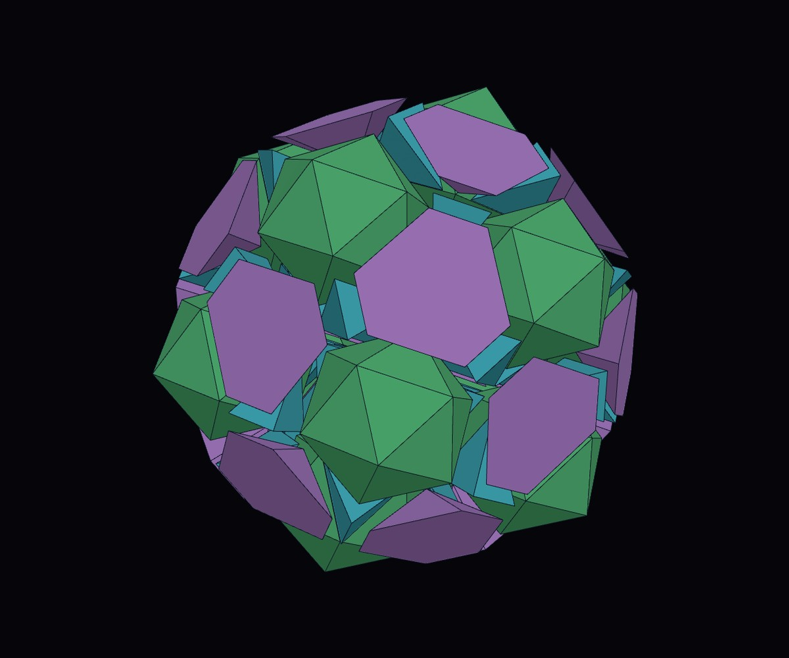
Figure 1.1. The Lotus seed pulled apart.
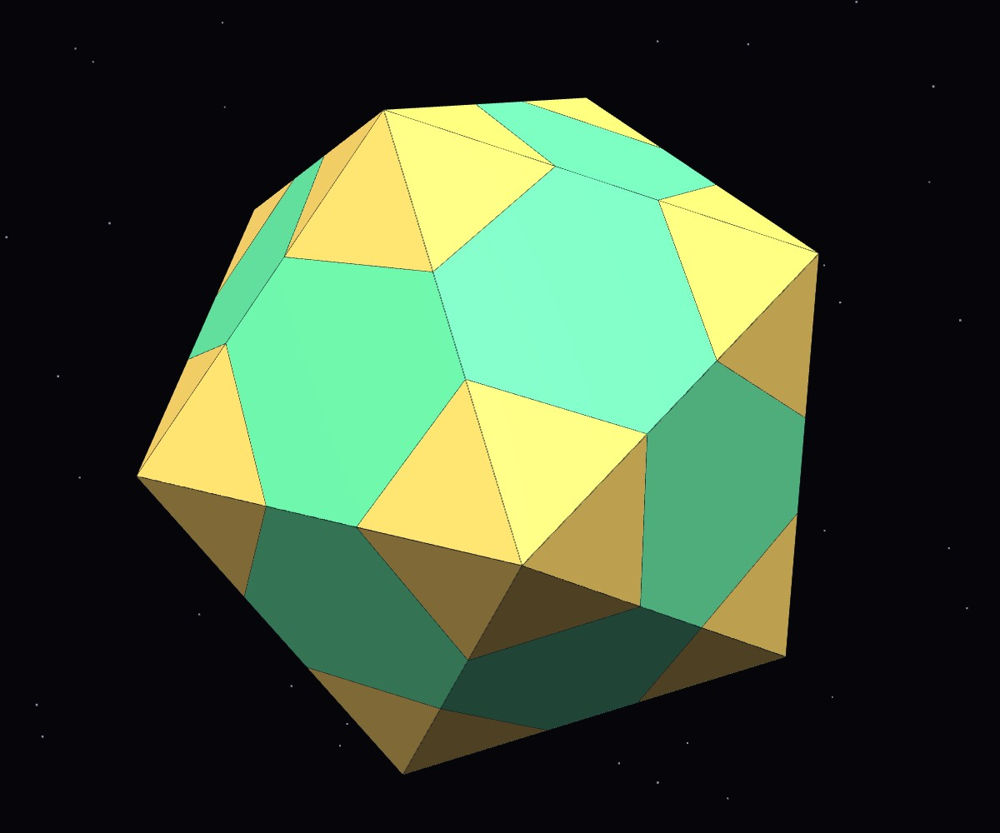
Figure 1.2. The Lotus seed closed: its surface carries the fullerene (C60) pattern, with the 20 flat-ended triangles (sides 1 and 1/φ alternating, all angles 120°) in green.
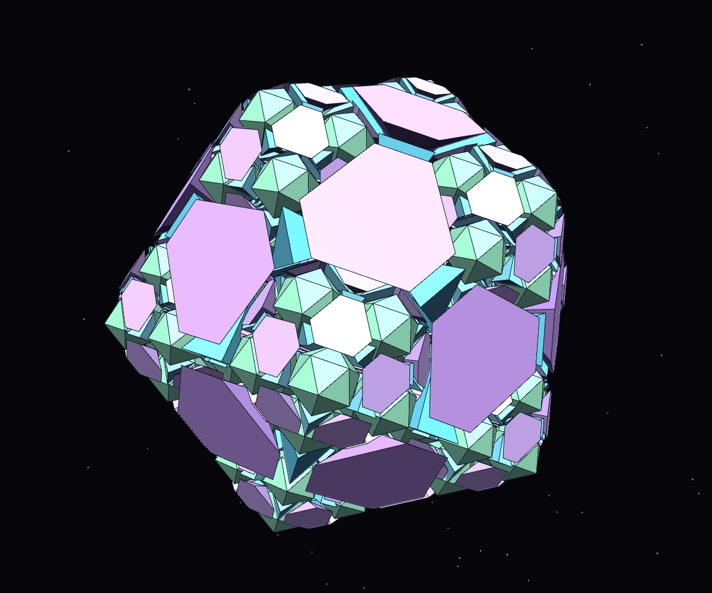
Figure 1.3. The Chain of Karma, two levels, pulled apart level by level: the pieces of the previous size lace together inside the next, showing the scale step φ².
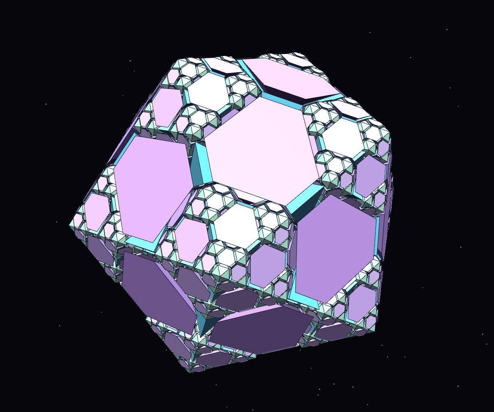
Figure 1.4. Three levels: each size laced into the next, the Chain continuing without end.
3. The gap pieces and the Dehn invariant
Every dihedral angle of the kit is, modulo 180°, an integer combination of α = arccos(√5/3) = 41.810° and
δ = arctan(3 − √5) = 37.377°. This makes the Dehn invariant computable exactly (coordinates in Q(√5), integer relations by PSLQ).
At a single size the gap pieces cannot be rebuilt from the kit: φ²·AXE, φ²·FUJI and φ²·CLEO pass the volume test (for example
φ²·AXE has the volume of 9 AXE + 2 FUJI + 2 CLEO) but no whole-number combination of the edge-1 kit matches their Dehn invariants;
the same program recovers the Lotus seed's own counts for φ²·I as a check. So the Chain of Karma is a hierarchy with gap pieces in
every size step of φ², not a single-size tiling. With mixed sizes the screen rules nothing out; it is a necessary condition only.
AXE and CLEO are, up to the factor 1/φ, the Mosseri–Sadoc tetrahedra t6 and t4 (Mosseri and Sadoc 1982; Kramer 1982, whose seven
tiles add T2 = t2 ∪ t4). The six tetrahedra admit no stone inflation (Papadopolos and Ogievetsky 1999).
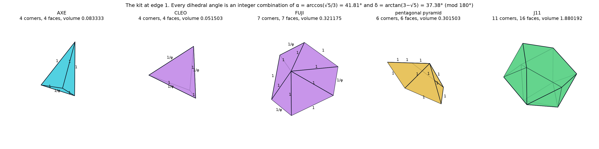
Figure 1.5. The kit at edge 1, every edge labelled: AXE, CLEO, FUJI, the pentagonal pyramid and J11, with their volumes. 60 AXE + 20 FUJI + 20 CLEO + 12 icosahedra of edge 1 + 1 of edge 1/φ fill the icosahedron of edge φ² exactly.
4. FUJI
FUJI is a pyramid of height 1/√3 on a flat-ended triangle (sides 1 and 1/φ alternating, all angles 120°) with side edges 1; its
apex is a corner of the cube inside the dodecahedron. It splits as that cube corner (edges 1, 1, 1 at right angles; volume 1/6) plus
three pieces each of CLEO's volume (1/6 + 3 × 0.051503 = 0.321175), and into 12 right-angled pieces of two kinds whose faces slope at
exactly 41.81° and 37.38°, the kit's two angles.
5. The dodecahedral Chain
Our dodecahedral Chain uses the first decomposition, D(1) = 12 J2 + I(1/φ) + 30 AXE + 20 CLEO, at every scale, with its central
icosahedron replaced by the Chain of Karma: D(φ²ⁿ) is the Chain-filled I(φ²ⁿ⁻¹) with 12 J2, 30 AXE and 20 CLEO of the stage's size
around it, 63, 175 and 1,631 pieces for D(1), D(φ²) and D(φ⁴). Al Raisi, Koca, Koca and Koc (2026) grow the dodecahedron with whole
dodecahedra inside; here it grows around icosahedra.
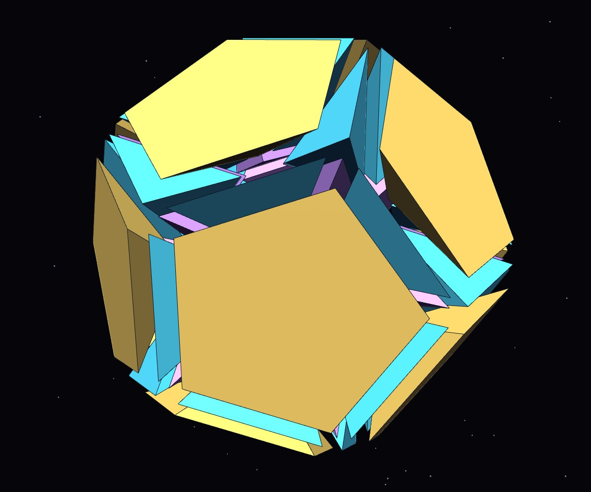
Figure 1.6. The dodecahedral Chain, its shell pulled apart.
6. A second cycle: the Spheres of Dharma
A second exact, endlessly repeating cycle passes through the icosidodecahedron, the fullerene cage and the rhombic triacontahedron:
icosahedron φ² ⊃ triacontahedron ⊃ cage ⊃ dodecahedron ⊃ icosidodecahedron ⊃ icosahedron 1/φ. It shares the dodecahedron of edge 1 and
both icosahedra with the Lotus seed, and each half of either structure fills its side of that dodecahedron exactly, so the two can be
exchanged half by half at every scale. It is described in its own paper (Spheres of Dharma, #23).
7. Periodic and aperiodic
The Chain of Karma is self-similar and not periodic: its symmetry is icosahedral and its scale steps are powers of φ. A
periodic frame for icosahedra exists: an icosahedron with six edge roofs is a regular octahedron, so icosahedra with their roofs in
the octahedra of the octet truss, and smaller icosahedra with corner and edge caps in its tetrahedra, fill space exactly (our
icosahedral octet). Whether the Chain can grow inside that frame, joining the periodic and the self-similar orders, is open.
8. Self-similar, repeating, not periodic
Scaling is the growth step: the icosahedron and dodecahedron shells repeat by scaling, φ³ per cycle, and the counts follow
it exactly (13ⁿ icosahedra after n steps of the Chain, gap pieces in the fixed proportion AXE : FUJI : CLEO = 3 : 1 : 1), as the
growth matrix's largest (Perron–Frobenius) eigenvalue and its eigenvector say. Fit is the exact fit: each shell fills
the space round the other, with volumes and Dehn invariants balancing. Non-periodicity is that no sliding of the whole lands it on
itself. The three are linked: because the scale factor is irrational, a sliding repeat would force repeats at φ³, φ⁶, …
times every period, which no single lattice of periods allows; and the same scaling makes every local arrangement recur.
Status. Proved: the shells, the exact fits and the counts. The Chain as built has a centre, so it is trivially not
periodic. It is an iterated (hierarchical) dissection in which only the icosahedron is subdivided, not a substitution tiling in the
strict sense, which would require every prototile to be subdivided; pieces of every size occur.
9. Relation to known work, and status
Nesting of the icosahedron and dodecahedron. Golden nestings of the two go back to Pacioli and Kepler. Gray (2002) describes
icosahedra at every φ-power, each containing a central icosahedron at φ⁻³ and twelve at φ⁻² (the arrangement of the Lotus seed's
icosahedra), and dodecahedra that "scale pack" with them; the gaps are not filled. The Sierpinski icosahedron keeps the twelve corner
icosahedra at 1/φ² and leaves the gaps empty. Al Raisi, Koca, Koca and Koc (2026) grow the dodecahedron by τⁿ with whole dodecahedra
inside, using modified Mosseri–Sadoc tiles, and note that icosahedra cannot be treated this way with those tiles.
Tiles. AXE and CLEO are the Mosseri–Sadoc tetrahedra t6 and t4 at scale 1/φ (Mosseri and Sadoc 1982; Kramer 1982); the six
tetrahedra admit no stone inflation (Papadopolos and Ogievetsky 1999; Ogievetsky and Papadopolos 1999), and Koca et al. (2020) state that they do not inflate the
icosahedron past edge τ.
Nested icosahedral shells in matter. Concentric icosahedral shells are central to the structure of real materials and
viruses, as point arrays: Mackay's icosahedral sphere packing (1962) and Frank's icosahedral order in liquids (1952); the Tsai-type
cluster of icosahedral quasicrystals and their approximants, concentric dodecahedron, icosahedron and icosidodecahedron shells inside
a rhombic triacontahedral envelope (Takakura et al. 2007; Deguchi et al. 2015; Ishimasa 2019); and icosahedral viruses (Caspar and
Klug 1962), whose capsids and genomes follow nested icosahedral point arrays at fixed radial ratios, obtained from affine extensions of
the icosahedral group or by projection from a six-dimensional lattice (Keef and Twarock 2009; Twarock, Valiunas and Zappa 2015),
the same framework applying to nested fullerene cages (Dechant et al. 2014). The Chain of Karma differs in kind: its shells are solid
and filled exactly, with whole regular icosahedra among the pieces, and the icosahedron and dodecahedron alternate as shells of each
other without end.
Status. In the sources above and those in the study folder we found no description of this solid, exact, alternating filling.
The search is not exhaustive; the claim of novelty is limited to it.
Remarks
The following are our own readings of the work, given as remarks; they are not mathematical claims.
On the two shells: "It is like yin and yang: neither one nor the other." Each solid holds the other at its centre, and each is
the other's shell.
On the 600-cell: "It does strike me as remarkably similar to a 4D polytope."
On section 9: "The pattern that doesn't repeat is exactly the pattern that is repeating." We relate the Chain to Kyushindo,
the philosophy of Kenshiro Abbe, with its three principles 万物流転 banbutsu ruten (all things in constant flux), 律動
ritsudō (rhythmic motion) and 調和 chōwa (harmony): change, rhythm and harmony, each contained in the others. In section
9's terms they correspond to non-periodicity, scaling and exact fit.
Chapter 2. Spheres of Dharma
From paper #23, DICTO DOI 10.5281/zenodo.23310833
A second endless golden cycle of the icosahedral solids, through the icosidodecahedron, the fullerene cage and the rhombic triacontahedron
Abstract. We describe an exact, endlessly repeating nesting of six icosahedral solids (the Ritsudō cycle), each layer filled by a
few repeated pieces. With the dodecahedron at edge 1: an icosahedron of edge 1/φ, an icosidodecahedron of edge φ/2 (around it 12
pentagonal pyramids and 20 twisted triangular frusta), the dodecahedron (20 triangular pyramids), a truncated icosahedron of edge 1/φ,
the fullerene cage (12 twisted pentagonal frusta and 30 Mosseri–Sadoc tetrahedra t1 at scale 1/φ), a rhombic triacontahedron of edge
½√(45 − 18√5) = 1.089814 (12 pentagonal and 20 hexagonal caps and 60 tetrahedral wedges), and an icosahedron of edge φ² (30 edge and 20 face pieces).
The outer icosahedron is φ³ times the inner one, so the cycle repeats without end in both directions; one cycle has 237 pieces. All pieces of a cycle are checked to be free of overlap, with total volume exact. The construction rests on three exact relations: the icosahedron and the
dodecahedron share the icosidodecahedron as their core, differing only in 12 pentagonal or 20 triangular corner pyramids; the
fullerene cage wraps the dodecahedron at exactly one golden step, the dodecahedron's corners on the cage's hexagon centres; and the
rhombic triacontahedron is the cage, with its 60 corners on the triacontahedron's faces, plus caps and wedges. The cycle shares its
dodecahedron and its two icosahedra with the Lotus seed of the Chain of Karma, and each half of either structure fills its side of
that dodecahedron exactly, so the two can be exchanged half by half at every scale. The cycle grows concentrically, one icosahedron per cycle (Nenrin growth), while the Lotus seed branches, 13 icosahedra per φ² step; the Lotus seed's 12 corner icosahedra straddle the shared dodecahedron, so they stay whole only when both halves are the Lotus seed's. The five cubes of the dodecahedron lie in the
network's seams, and the five octahedra on the icosidodecahedron hold one icosahedron of edge 1 in Pacioli's golden position. Its outer shell, the rhombic triacontahedron, is the only other form found to branch like the Lotus seed
(the Bodhi seed, described separately). The shells are the family of the Tsai-type cluster of icosahedral quasicrystals, here solid and exactly filled.
Checks. All 237 pieces of one cycle are pairwise free of overlap (separating axes over all face normals and
edge-pair cross products), all lie inside the outer icosahedron, and their total volume equals I(φ²) to 1e-12 (scripts/sod_overlap.py).
The triacontahedron's edge is exactly ½√(45 − 18√5) = 1.0898138.
Terms. The six-shell cycle is called a Ritsudō (律動, rhythm); its concentric mode of growth, one
ring per cycle, Nenrin (年輪, tree rings), in contrast to the branching of the Lotus seed. The names are ours.
1. The shared core
Cut the corners of an icosahedron (edge 1) back to its edge midpoints and an icosidodecahedron of edge 1/2 is left, with 12 pentagonal
pyramids (all edges 1/2) cut away: 1.729441 + 0.452254 = 2.181695. Do the same to a dodecahedron (edge 1): an icosidodecahedron of edge
φ/2 and 20 triangular pyramids (base φ/2, side edges 1/2): 7.326029 + 0.337090 = 7.663119. So an icosahedron of edge φ and a dodecahedron
of edge 1 share one icosidodecahedron, and in their dual compound their 30 edge pairs cross at its corners.
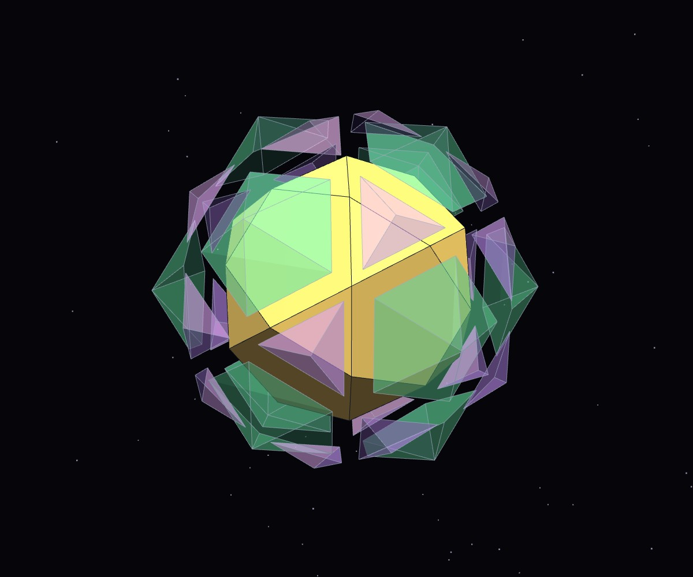
Figure 2.1. The shared core pulled apart: one icosidodecahedron (gold), its 12 pentagonal pyramids (green, making the icosahedron of edge φ) and 20 triangular pyramids (purple, making the dodecahedron of edge 1).
2. The dodecahedron and the fullerene cage
A truncated icosahedron of edge 1/φ contains the dodecahedron of edge 1 with the dodecahedron's 20 corners on its 20 hexagon centres.
The gap (5.388544) is 12 twisted pentagonal frusta (cage pentagon, edge 1/φ, over the dodecahedron face, edge 1, turned 36°; volume
0.399864) and 30 tetrahedra with five edges 1/φ and one edge 1 (the Mosseri–Sadoc tile t1 at scale 1/φ; 0.019672).
3. The fullerene cage and the rhombic triacontahedron
With its 60 corners on the faces of a rhombic triacontahedron (cage edge 0.567101 for triacontahedron edge 1), the cage plus 12
pentagonal caps, 20 hexagonal caps (each made of the three rhombi at a three-fold corner) and 60 tetrahedral wedges along its
pentagon–hexagon edges fill the triacontahedron exactly: 10.083445 + 1.704813 + 60 × 0.008708 = 12.310734.
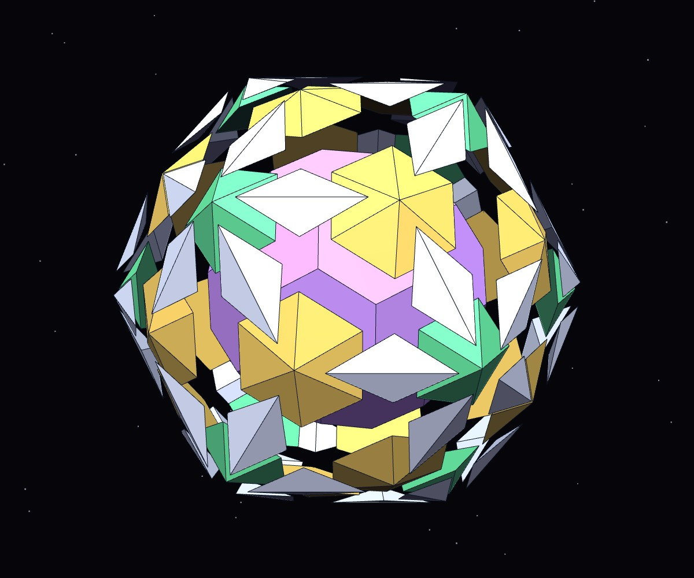
Figure 2.2. The fullerene cage inside the rhombic triacontahedron, pulled apart: 20 hexagonal caps (gold islands, each three rhombi), 12 pentagonal caps and 60 wedges.
4. Closing the cycle
Between the triacontahedron (edge 1.089814) and the icosahedron of edge φ²: 30 edge pieces (each rhombus joined to the icosahedron
edge it faces, 0.527864) and 20 face pieces (each icosahedron face joined to the three-fold corner below it, 0.368921). Inside the
icosidodecahedron: the icosahedron of edge 1/φ with 12 pentagonal pyramids (0.197336) and 20 twisted triangular frusta (icosidodecahedron
triangle over icosahedron face, side edges √3/2; 0.222148).
Figure 2.3. One Ritsudō cycle at true relative size: each solid (filled) inside the next (wire frame). The last icosahedron is φ³ times the first.
5. The hinge with the Lotus seed
The Lotus seed (Chain of Karma, #22) fills the same icosahedron of edge φ² around the same dodecahedron of edge 1 and icosahedron of
edge 1/φ: inside the dodecahedron with 12 pentagonal pyramids, 30 AXE and 20 CLEO; outside it with 12 J11, 30 AXE and 20 FUJI. Each half
of either structure fills its side exactly (volumes checked), so the four combinations are all exact and, in the Chain of Karma, every
icosahedron at every scale can be filled either way. The four combinations are exact fillings, but the Lotus seed's 12 corner icosahedra straddle the dodecahedron (a J2 cap inside, a J11 outside), so they are whole only when both halves are the Lotus seed's: only the pure Lotus seed branches (13 icosahedra per φ² step); the Spheres of Dharma grow concentrically (one centre icosahedron per φ³ step).
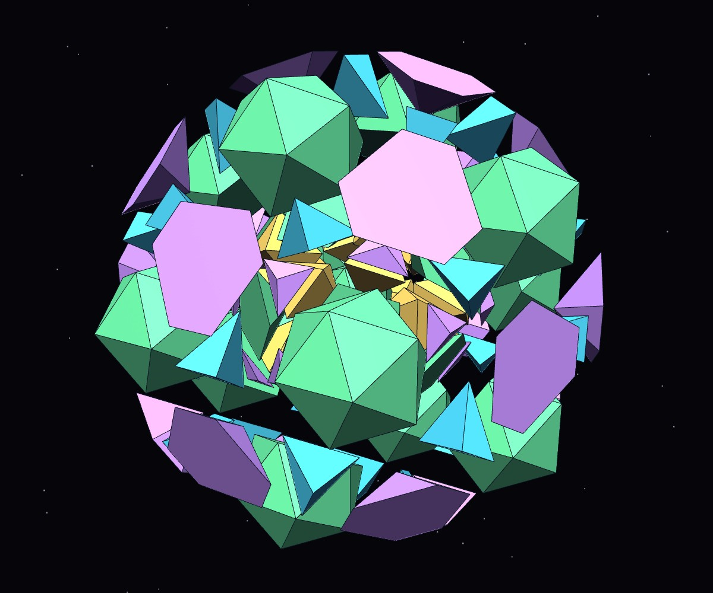
Figure 2.4. The hinge, pulled apart: the Spheres of Dharma inside the dodecahedron of edge 1 and the Lotus seed outside it.
6. The cube family
The five cubes inscribed in the dodecahedron have all 60 edges in the seams between pieces. The five octahedra on the
icosidodecahedron's 30 corners (the compound of five octahedra) and the ten tetrahedra of the dodecahedron cut through pieces; but the
five octahedra hold one icosahedron of edge 1, in the network's own turn, each of its 12 corners on an edge of every octahedron
(Pacioli's golden position), suggesting an octahedral variant: icosahedron 1/φ ⊂ icosahedron 1 ⊂ five octahedra ⊂ icosidodecahedron.
7. Relation to known work, and status
The dual compound of the icosahedron and dodecahedron, the compound of five octahedra and Pacioli's icosahedron in the octahedron are
classical. Concentric dodecahedron, icosahedron, icosidodecahedron and triacontahedron shells form the Tsai-type cluster of icosahedral
quasicrystals, as atom shells (Takakura et al. 2007); nested icosahedral point shells model viruses (Keef and Twarock 2009). We found no
description of this solid, exactly filled, endlessly repeating cycle; the search is the one recorded for the Chain of Karma and is not
exhaustive.
Chapter 3. The Bodhi Seed
From paper #24, DICTO DOI 10.5281/zenodo.23311353
Twelve rhombic triacontahedra and one more inside a triacontahedron φ² times larger, with the gap filled exactly
Abstract. A rhombic triacontahedron RT(φ²) of edge φ² holds twelve RT(1) of edge 1, one on each five-fold axis and each
pushed out until it touches the outer form, and one RT(1/φ) at its centre, without overlap. Each of the twelve touches five others
face to face, in the pattern of the icosahedron's 30 edges. These are the counts and ratios of the Lotus seed (an icosahedron of edge φ²
holding 12 icosahedra of edge 1 and one of edge 1/φ), and among the icosahedral solids tested on their 5-, 3- and 2-fold axes only the
icosahedron and the rhombic triacontahedron close in this way. The gap, 31.8% of the volume (by volume 80 prolate and 20 oblate golden
rhombohedra of edge 1, though these do not tile it), fills exactly with convex pieces in two ways, each of three types and each invariant
under the full icosahedral group: kit A, 60 + 60 + 60 mirror-symmetric pieces; kit B, 60 Vajras (triangular bipyramids), 20 Crown Jewels
(one in each outer three-fold corner, 14 corners) and 60 + 60 Diadems of opposite hands. Every corner is exact and every dihedral angle
is a multiple of 6°. The twelve enclose exactly a rhombic hexecontahedron of edge 1 (20 prolate golden rhombohedra), so the inner pocket,
the hexecontahedron minus the centre, has exactly the volume of RT(1). All pieces were checked pairwise free of overlap, with total volume
exact. The layer of twelve triacontahedra around a rhombic hexecontahedron appears in S. Kabai's clusters; its closure inside RT(φ²), the
centre, the exact kits and the growth as a seed were not found in the literature searched.
1. Which forms multiply
For each icosahedral form X (icosahedron, dodecahedron, icosidodecahedron, truncated icosahedron, rhombic triacontahedron) and each
family of symmetry axes (12 five-fold, 20 three-fold, 30 two-fold directions), copies X(1) in the same turn were pushed out along every
axis until they touched X(φᵏ), k = 1 … 4, and kept when no two overlapped; then the largest centred copy was found. Only two cases close
at golden sizes, with copies that fit and a centre that is exactly a power of φ: the icosahedron on its five-fold axes in I(φ²) with
centre I(1/φ) (the Lotus seed), and the rhombic triacontahedron on its five-fold axes in RT(φ²) with centre RT(1/φ). Everything else either
overlaps at φ and φ², or at φ³ and φ⁴ leaves a centre whose size is not a power of φ (scripts/seeding.py).
2. The twelve
The twelve copies' centres lie φ² from the middle, at the corners of an icosahedron of edge 2.752764 (twice the inradius of RT(1), 1.376382), so
neighbours touch face to face: 30 contacts, five per copy. We built the twelve by hand in the Polyhedraverse app; the exported build has
every centre at the computed distance to six decimals, 30 face contacts and no overlap. Volumes: RT(φ²) 220.907161, twelve RT(1)
147.728810, RT(1/φ) 2.906170, gap 70.272181.
3. The hollow inside the twelve
The twelve enclose exactly a rhombic hexecontahedron RH(1) of edge 1: twenty prolate golden rhombohedra, one on each three-fold axis.
The centre RT(1/φ) sits inside it, and the inner pocket RH(1) − RT(1/φ) has volume 20φO − 10O/φ = 10φ²O, exactly that of RT(1), where
O is the oblate golden rhombohedron of edge 1 (volume 0.470228) and the prolate one is φO; in short RH(1) = RT(1) + RT(1/φ) by volume. The
inner pocket is 60 Vajras; three Vajras fill each of the hexecontahedron's rhombohedra outside the centre, and that union is not convex, so
no single three-fold inner piece exists.
14 corners, 9 faces: three pentagons on RT(φ²), three hexagons on the three copies around its corner, three cut triangles; dihedrals 36°, 90°, 120°, 144°
Diadem L, R
B
60 + 60
O/3 = 0.156743
6 corners, 5 faces, a rhombus face (edge 1) on a copy; chiral; dihedrals 36°, 60°, 90°, 108°
B2
A
60
(3 + 5φ)O/6 = 0.869152
7 corners: a pentagon on RT(φ²), two quadrilaterals on copies, three cut triangles
B3
A
60
O/(3φ) = 0.096872
pyramid on a golden rhombus (edge 1) lying on a copy; dihedrals 36°, 120°, 144°
Exact bookkeeping: gap = 80P + 20O; outer pocket = 70P + 10O, inner pocket = 10P + 10O = RT(1). Kit A uses 180 pieces, all
mirror-symmetric; kit B 200 pieces, with one Crown Jewel in each three-fold corner as FUJI sits in the Lotus seed. Both kits were found
by cutting one fundamental region (1/120) of the gap along the solids' face planes and the mirror planes, then choosing the fewest piece
types and pieces by exact cover; three types are minimal for such cuts, and at least two are needed since the gap has two separate
pockets.
5. Checks
For both kits: no overlapping pair among pieces and solids (separating axes); total volume equal to the gap to 6 × 10⁻¹⁴; 236,269
random points each in exactly one solid or piece; all copies of a type congruent; the kit invariant under the 120 symmetries.
Independently, for kit B: 235,529 sample points in RT(φ²), each covered exactly once by the 13 solids and 200 pieces.
6. Growth
Since every triacontahedron inside is whole, each can be replaced by its own Bodhi seed, as the Chain of Karma does with Lotus seeds,
the pieces staying whole: a Bodhi chain with 13ⁿ triacontahedra after n steps. With the same counts and ratios as the Lotus seed, the
triacontahedra alone form a self-similar set of the same dimension, D with 12φ⁻²ᴰ + φ⁻³ᴰ = 1, D ≈ 2.6063.
7. Relation to known work
The rhombic triacontahedron is ten prolate and ten oblate golden rhombohedra, and the rhombic hexecontahedron twenty prolate ones
(classical). S. Kabai built clusters of rhombic triacontahedra and hexecontahedra as models of quasicrystal structure, among them a
layer of twelve triacontahedra face to face around a hexecontahedron (Wolfram Demonstrations Project, "Cluster of 45 Polyhedra around a
Rhombic Hexacontahedron" and "Dodecahedral Cluster of RTs and RHs"; Kabai, Bérczi and Szilassi). We found no description of that layer
closing exactly inside RT(φ²) with RT(1/φ) at its centre, of a convex exact filling of the gap, or of its growth as a seed. The search is
not exhaustive.
Figures
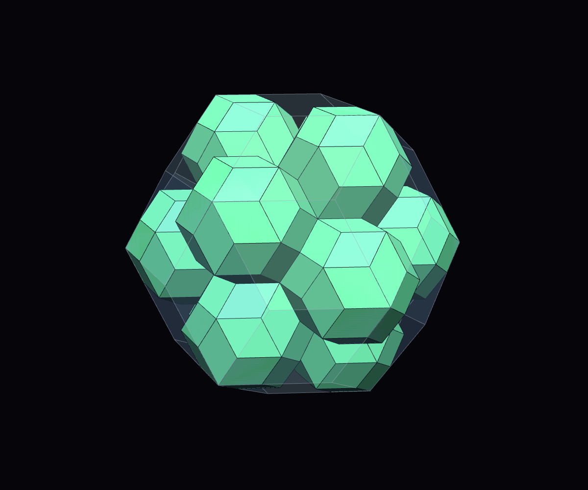
Figure 3.1. The Bodhi seed: RT(φ²) (crystal) holding twelve RT(1) (green) around RT(1/φ) (gold).
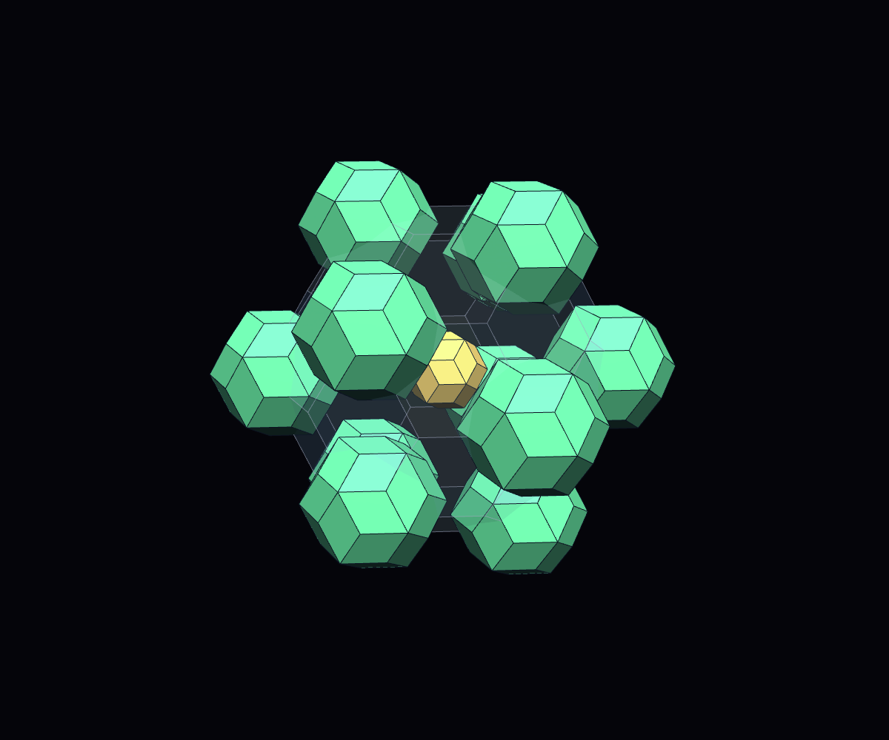
Figure 3.2. The thirteen pulled apart.
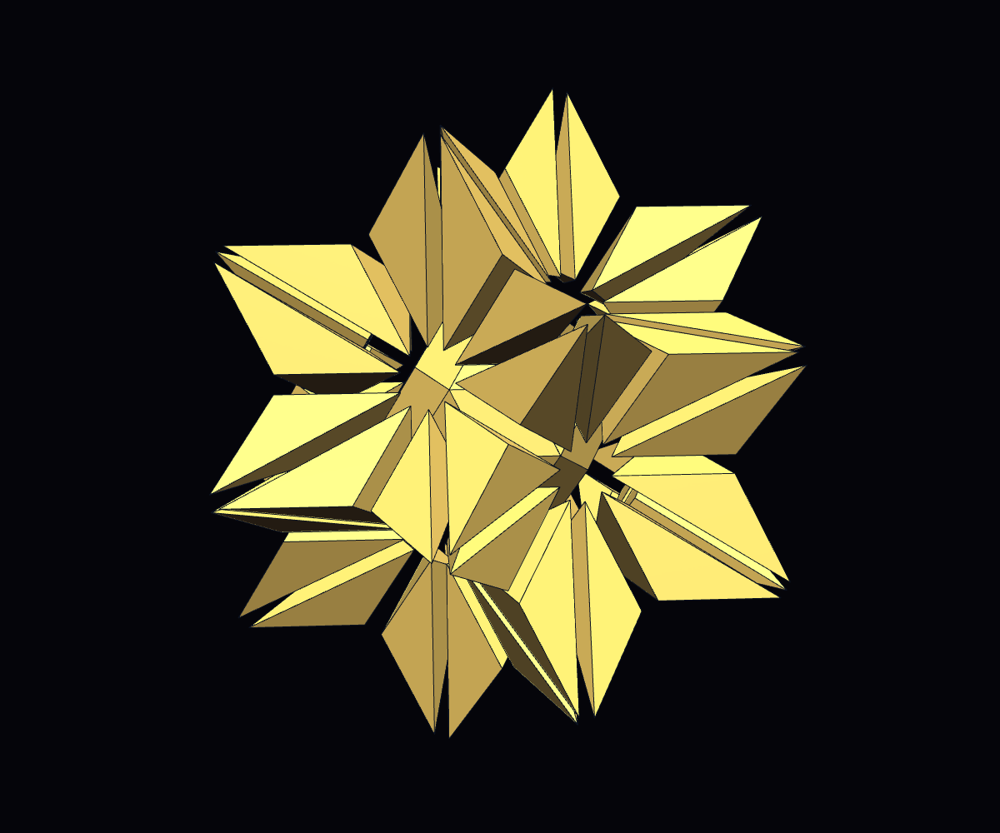
Figure 3.3. 60 Vajras around the centre: the rhombic hexecontahedron, slightly pulled apart.
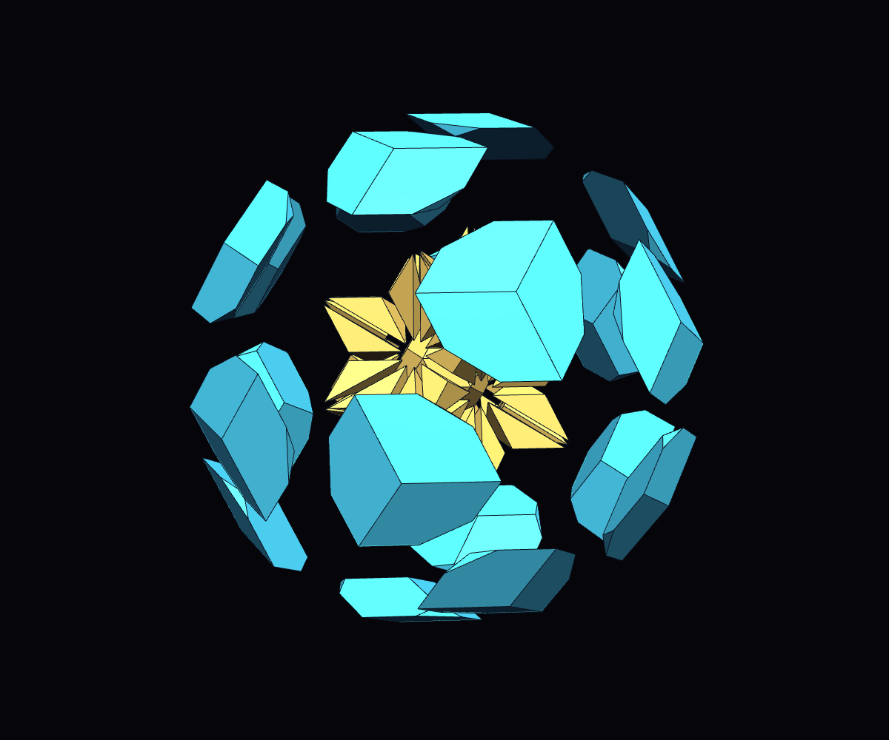
Figure 3.4. The 20 Crown Jewels (blue) around the Vajras.
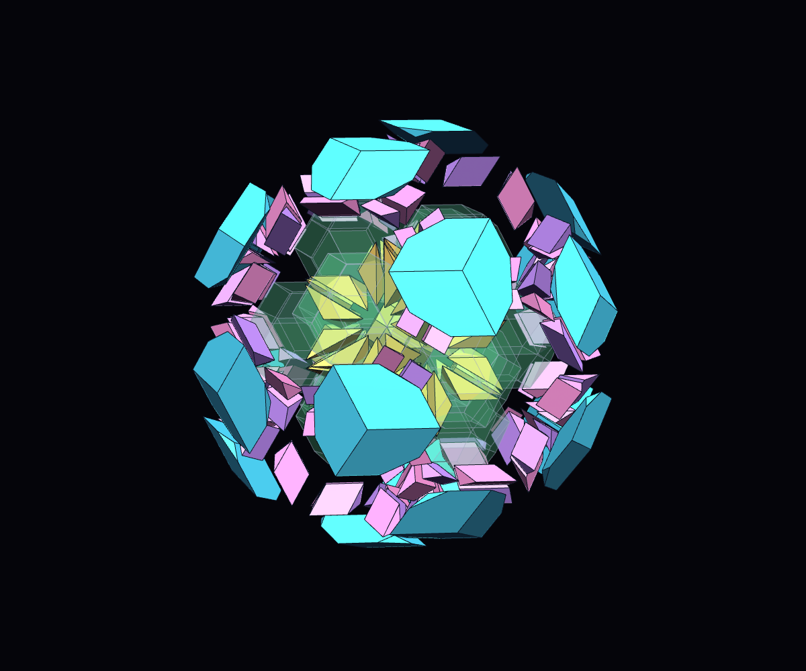
Figure 3.5. Kit B pulled apart: Vajras (gold), Crown Jewels (blue), Diadem L (lilac), Diadem R (pink); the twelve faint.
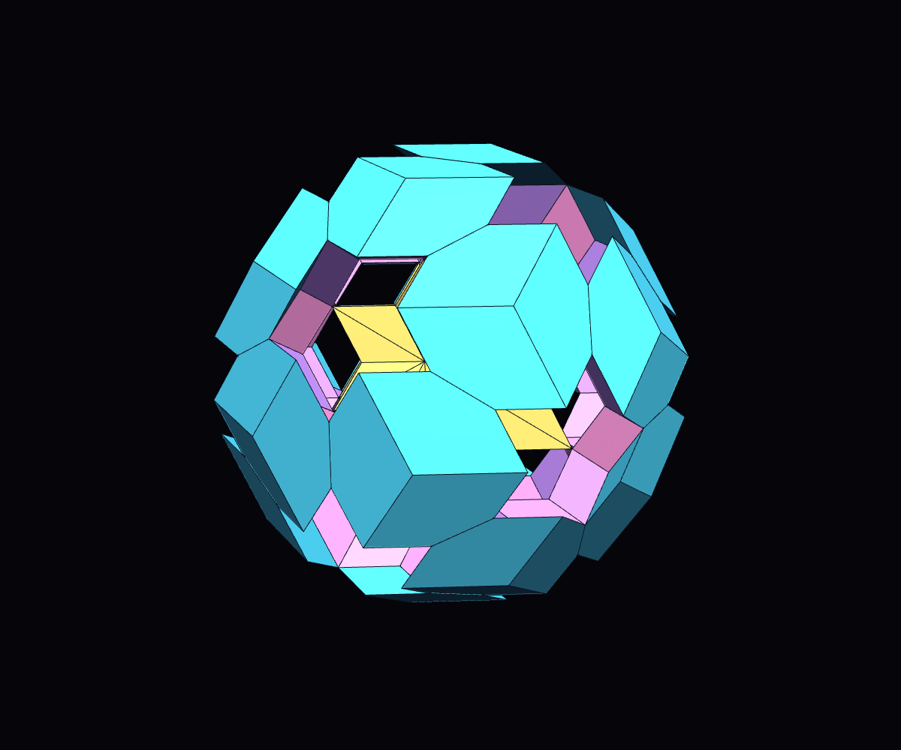
Figure 3.6. Kit B closed, without the twelve: the gap, with its twelve sockets.
Chapter 4. Capturing the In-betweens: a Study of Transitional Polyhedral Shells
From paper #27, DICTO DOI 10.5281/zenodo.23345502
DICTO · dictospheres.com
14 October 2026 · doi:10.5281/zenodo.23345503 · CC BY 4.0. Computation, checking and drafting with Claude (Anthropic). The structures, their pieces and their names are DICTO's.
Abstract
DICTO's Chain of Karma, Spheres of Dharma and Bodhi Seed are exact icosahedral dissections: each grows a large polyhedron from a small core by adding rings of congruent pieces. Between the familiar solids at the start and end of each step lie the in-between stages, the transitional shells. Taking each stage as one solid, with its pieces fused, we find that the builds pass through celebrated polyhedra on the way:
Icosahedron + 20 CLEO is Kepler's great stellated dodecahedron.
Adding 30 AXE turns it into the excavated dodecahedron, a stellation of the icosahedron, with all 32 corners kept.
Adding 12 caps closes the dodecahedron. The Dodecahedral Chain thus walks from the icosahedron to its dual through two star solids.
The Bodhi Seed's centre + 60 Vajra (fine) is the rhombic hexecontahedron.
The Spheres of Dharma's seventh stage is a convex solid with 102 faces and 80 corners: 12 regular pentagons, 30 rhombi and 60 triangles, every face tangent to one sphere. We did not find it in the catalogues we searched; DICTO names it the DICTO Truncated-Icosahedral Hecatodihedron.
Every identification is checked against an independent construction to within 10⁻⁴. We describe all 21 piece types, show 45 further convex stages, and give cut-out nets so the in-betweens can be built by hand. The transitional shells now have their own group in the Polyhedraverse app.
1. Introduction
Scrubbing the Top shell slider in the Kaleidohedra app's Multi-shell chains world, DICTO saw that the in-between stages of his nested structures look strikingly different from the solids at either end of each step. He picked out about 11 on Chain step 2, 5 on the Lotus seed, 4 on the Dodecahedral Chain and 6 more on the other views. His idea: these forms may be known, but not as transitional shapes between the well-known solids, and the steps a model goes through as it builds are worth looking at in their own right.
This chapter defines the stages exactly (Section 2), describes the pieces that build them (Section 3), and identifies the classical and new solids among them (Section 4). Section 5 shows the shells in the apps and as paper models.
Two of the three structures are members of DICTO ATOM-13×13, thirteen clusters of twelve around one [DICTO, ATOM-13×13]. The Lotus seed is its Icosa-13, and the Bodhi seed is its thirteen triacontahedra. So the transitional shells are also the shells through which those thirteens fill up into a single larger solid; the figures echo the ATOM-13 kits.
2. The structures and their stages
The structures. The Lotus seed is the icosahedron of edge φ², cut into 13 icosahedra, 60 AXE, 20 FUJI and 20 CLEO, 113 pieces in all [DICTO, Chain of Karma]. Replacing every icosahedron with a Lotus seed gives Samsara (Chain step 2, 1,569 pieces). Closing a grown core with 12 pentagonal caps gives the Dodecahedral Chain.
The Spheres of Dharma is a six-shell cycle of 237 pieces [DICTO, Spheres of Dharma]:
The outer icosahedron is φ³ times the inner one, so the cycle repeats. The Bodhi Seed is a rhombic triacontahedron of edge φ² holding 12 triacontahedra of edge 1 on its five-fold axes around one of edge 1/φ [DICTO, The Bodhi Seed]. Its gap is filled exactly by Kit A (Vajra (fine), Chatra, Mudra) or Kit B (Vajra (fine), Crown Jewel, Diadem L and R).
Stages. Every piece belongs to a ring: an orbit of congruent pieces at one distance from the centre. A stage is a union of rings around the core:
Main route: rings added in order of distance.
Whole-ring stages: any connected union of rings.
Partial-ring stages: a symmetric part, half or cap of the next ring on a complete shell.
Table 1. How many in-betweens there are.
Structure
Main-route steps
Whole-ring stages (convex)
Partial-ring stages
Spheres of Dharma (one cycle)
11
107 (8)
5,569
Chain of Karma, Lotus seed
6
7 (2)
124
Bodhi Seed, Kit B
6
10 (2)
363
Fusing. Each stage is taken as one solid: the outer surface of its pieces, with each face the visible part of the pieces' faces in one plane. The fused solid's volume equals the sum of its pieces' volumes in every case.
3. The pieces
Lengths are in the study's units (Lotus seed: icosahedra of edge 1; Bodhi Seed: copies of edge 1; Spheres of Dharma: dodecahedron of edge 1). Dihedral angles are interior.
Table 2. The 21 piece types (pictured in Figures 7 to 9).
Piece (DICTO's name)
Where, how many
Kind
Corners / edges / faces
Edge lengths (count)
Interior dihedrals
Symmetry
Volume
Known as
AXE
Lotus 60
tetrahedron, five edges 1 and one 1/φ
4 / 6 / 4 triangles
1 (5), 1/φ (1)
41.81°, 63.43°, 79.19°
C2v (4)
1/12
Mosseri–Sadoc t6 at 1/τ
CLEO
Lotus 20
trigonal pyramid: base 1/φ, sides 1
4 / 6 / 4
1/φ (3), 1 (3)
63.43°, 79.19°
C3v (6)
(√5 − 1)/24
Mosseri–Sadoc t4 at 1/τ; one point of the great stellated dodecahedron
FUJI
Lotus 20
hexagonal pyramid on a 120° hexagon of sides 1, 1/φ
7 / 12 / 6 triangles + 1 hexagon
1 (9), 1/φ (3)
37.38°, 41.81°, 142.62°
C3v (6)
(1 + 3√5)/24
DICTO's
icosahedra
Lotus 1 + 12
regular
138.19°
Ih (120)
pentagonal cap
Dodecahedral Chain 12; Dharma 12
equilateral pentagonal pyramid
6 / 10 / 6
all equal
37.38°, 138.19°
C5v (10)
Johnson solid J2
Stupa
Dharma 12
pentagonal pyramid: base φ/2, sides √3/2, apex inward
6 / 10 / 6
φ/2 (5), √3/2 (5)
43.36°, 132.40°
C5v (10)
0.19734
DICTO's
Vajra (twist)
Dharma 20
twisted triangular frustum: parallel triangles 1/φ and φ/2
6 / 12 / 8 triangles
1/φ (3), φ/2 (3), √3/2 (6)
99.26°, 110.91°, 113.80°
C3v (6)
0.22215
DICTO's
Cleo-low
Dharma 20
trigonal pyramid: base φ/2, sides 1/2 (the dodecahedron's corner)
4 / 6 / 4
φ/2 (3), 1/2 (3)
37.38°, 116.57°
C3v (6)
0.016855
the shape of Mosseri–Sadoc t3 at half size
Monkey Staff
Dharma 12
twisted pentagonal frustum: pentagons 1/φ and 1
10 / 20 / 10 triangles + 2 pentagons
1/φ (15), 1 (5)
63.43°, 142.62°
C5v (10)
(11√5 − 15)/24
DICTO's
t1
Dharma 30
tetrahedron
4 / 6 / 4
1/φ (5), 1 (1)
37.38°, 116.57°, 138.19°
C2v (4)
(√5 − 2)/12
Mosseri–Sadoc t1 at 1/τ
Shield
Dharma 20
very low regular-hexagon pyramid
7 / 12 / 6 triangles + 1 hexagon
1/φ (6), 0.651 (6)
20.91°, 159.45°
C6v (12)
0.06763
DICTO's
Vajra-blade
Dharma 60
tetrahedron with one mirror
4 / 6 / 4
1/φ (3), 0.651 (2), 1.0898 (1)
20.55°, 20.91°, 144°, 159.10°
Cs (2)
0.011271
DICTO's
Sevenfold-blade
Dharma 30
6 triangles + 1 quadrilateral
6 / 11 / 7
0.7265 (2), 1.0898 (4), 1.5568 (4), φ² (1)
72°, 85.66°, 108°, 112.53°
C2v (4)
5 − 2√5
DICTO's
Cleo-low 2
Dharma 20
trigonal pyramid on the outer icosahedron's face
4 / 6 / 4
φ² (3), 1.5568 (3)
26.26°, 134.93°
C3v (6)
0.36892
DICTO's
J11
Dharma hinge 12
gyroelongated pentagonal pyramid, edge 1
11 / 25 / 15 triangles + 1 pentagon
all 1
100.81°, 138.19°
C5v (10)
(25 + 9√5)/24
Johnson solid J11
Vajra (fine)
Bodhi kits A and B, 60
irregular triangular bipyramid
5 / 9 / 6
1/φ (2), 1 (3), 1.0515, 1.4734, 1.7013 (2)
72°, 90°, 108°, 120°
Cs (2)
0.20518
DICTO's
Chatra
Kit A 60
3 triangles, 2 quadrilaterals, 1 pentagon
7 / 11 / 6
0.9106 (2), 1 (5), 1.0515, 1.4734, φ (2)
60°, 72°, 90°, 108°, 120°
Cs (2)
0.86915
DICTO's
Mudra
Kit A 60
quadrilateral pyramid
5 / 8 / 5
1/φ (2), 0.9106 (2), 1 (4)
36°, 120°, 144°
C2v (4)
0.09687
DICTO's
Crown Jewel
Kit B 20
3 triangles, 3 pentagons, 3 hexagons
14 / 21 / 9
0.5628 (6), 1 (6), 1.0515 (3), 2/φ (3), φ (3)
36°, 90°, 120°, 144°
C3v (6)
1.95764
DICTO's
Diadem L / R
Kit B 60 + 60
2 triangles, 3 quadrilaterals; mirror pair
6 / 9 / 5
0.5628 (2), 0.6498 (2), 1 (4), 2/φ (1)
36°, 60°, 90°, 108°
C2 (2), chiral
0.15674
DICTO's
rhombic triacontahedra
Bodhi 1 + 12
Catalan solid
1/φ, 1, φ²
144°
Ih (120)
Three features stand out:
The Bodhi pieces have clean angles. Every dihedral angle of every Bodhi piece is a multiple of 6° [DICTO, Bodhi pieces study]. The Lotus and Dharma pieces carry the icosahedral angles 41.81°, 63.43°, 116.57°, 138.19° and 37.38°.
Pieces sit over faces or along edges. The pyramids (CLEO, Cleo-low, Cleo-low 2, Shield, FUJI, Stupa, the caps) each stand on one face of the solid beneath; AXE, t1, Vajra-blade, Sevenfold-blade and the Diadems lie along its edges.
A new Mosseri–Sadoc likeness. Cleo-low has the shape of the Mosseri–Sadoc tile t3 at half its tabulated size, joining AXE (t6), CLEO (t4) and t1.
What each piece does. The main routes (Figures 1 to 3) show each piece's role:
Lotus seed. CLEO stands on each face of the core and makes the star (stage 2); AXE fills its 30 grooves (stage 3); the 12 outer icosahedra and outer AXE build a spiky 180-triangle stage; FUJI closes the large icosahedron.
Spheres of Dharma. Vajra (twist) makes an icosidodecahedron with 12 pentagonal dimples and the 12 Stupas fill them; Cleo-low closes the dodecahedron; the 12 Monkey Staffs and t1 make the truncated icosahedron; Shield gives the DICTO Truncated-Icosahedral Hecatodihedron; the caps and Vajra-blade complete the rhombic triacontahedron; Sevenfold-blade gives an icosahedron with 20 dimples, and Cleo-low 2 fills them.
Bodhi Seed Kit B. Vajra (fine) turns the centre triacontahedron into the rhombic hexecontahedron; the 12 copies, the Diadems and the Crown Jewels close the large triacontahedron.
4. Classical and new solids among the in-betweens
Each identification below was checked by analysis/identify.py against a solid built independently of the stage's data (25 checks, all passing, tolerance 10⁻⁴).
4.1 Icosahedron + 20 CLEO = the great stellated dodecahedron. Lotus seed stage 2 is the solid bounded by Kepler's great stellated dodecahedron (Kepler 1619). Its 20 outer corners are the star's 20 points; its 60 faces lie in the star's 12 pentagram planes; every face is a golden triangle (sides 1, 1, 1/φ, apex 36°); each plane carries a regular pentagram; its circumradius and volume match the formulas. It has 60 faces, 90 edges and 32 corners. Each CLEO is exactly one point of the star.
4.2 + 30 AXE = the excavated dodecahedron. Lotus seed stage 3 has the same 32 corners as stage 2. Its 60 faces are equilateral triangles lying in the 20 face planes of the core icosahedron, and its volume is the dodecahedron minus 12 J2 pyramids. This is the excavated dodecahedron, the Ef1g1 stellation of the icosahedron (Coxeter et al. 1938; Wenninger 1971, model 28). Adding 30 AXE changes every face while every corner stays put.
4.3 The Dodecahedral Chain: icosahedron → great stellated dodecahedron → excavated dodecahedron → dodecahedron. The Dodecahedral Chain's stages 2 and 3 are the same two solids at the same size, and stage 4 adds 12 J2 caps to close the regular dodecahedron, whose corners are the star's points. In four building steps the icosahedron becomes its dual through two classical star solids, a route made entirely of DICTO's pieces.
4.4 Samsara. In Chain step 2, stage 2 is the excavated dodecahedron at scale 1/φ and stage 4 is the great stellated dodecahedron at scale φ²: the same transition, repeated at two golden scales (Figure 4.5).
4.5 Centre + 60 Vajra (fine) = the rhombic hexecontahedron. Bodhi Kit B stage 2 has the 62 corners of 20 prolate golden rhombohedra around the centre, their volume, and 60 golden rhombi on the 30 face planes of the centre triacontahedron. This is the rhombic hexecontahedron (Unkelbach 1940), a stellation of the rhombic triacontahedron (Messer 1995). The Bodhi pieces study had shown that the 12 copies enclose it [DICTO, Bodhi pieces study]; here it is also reached from inside.
4.6 The DICTO Truncated-Icosahedral Hecatodihedron. Spheres of Dharma stage 7 is convex, with 12 regular pentagons, 30 rhombi (sides 0.65097, angles 56.68° and 123.32°) and 60 isosceles triangles. Its corners are the 60 of the truncated icosahedron and 20 on the three-fold axes, forming a regular dodecahedron. It is the truncated icosahedron with a Shield on each hexagon, at the exact height where the triangles of neighbouring Shields across each hexagon–hexagon edge lie flat as one rhombus. In Conway's notation it is the hexagon-kis truncated icosahedron k6tI in this flattened, rhombic form. All 102 faces are tangent to one sphere, of radius 1.5: it has an insphere, like a Catalan solid, while having three kinds of face. It is not an Archimedean, Catalan or Johnson solid, and we did not find it in Conway-notation or other catalogues searched, nor among the named relatives with 80 or 92 corners. DICTO names it the DICTO Truncated-Icosahedral Hecatodihedron: hecatodi- for its 102 faces (Greek hekaton 100 + di 2, as in the hecatonicosachoron, the 120-cell), on the truncated icosahedron it grows from.
4.7 Dimpled shells. Two Dharma stages are elegant dimpled solids: the icosidodecahedron with 12 inward pentagonal pyramids reaching the core's corners (stage 2), and the outer icosahedron with 20 shallow inward pyramids whose apices are the Shields' apices (stage 10).
4.8 Forty-five convex partial stages. On complete shells, 45 of the Spheres of Dharma's partial-ring stages are convex, with 36 different face patterns of 17 to 86 faces (Figure 4.6): truncated icosahedra partly capped, dodecahedra partly truncated, and more, each a new convex form between two classical ones.
Figures
Figure 4.1. Chain of Karma, Lotus seed main route: (a) core icosahedron; (b) + 20 CLEO, the great stellated dodecahedron; (c) + 30 AXE, the excavated dodecahedron; (d) + 12 icosahedra; (e) + 30 AXE; (f) + 20 FUJI, the icosahedron of edge φ². Orange: the pieces added at that step. One scale throughout.
Figure 4.4. The in-betweens of Section 4, each at its own scale: (a) the great stellated dodecahedron (Lotus 2); (b) the excavated dodecahedron (Lotus 3); (c) the rhombic hexecontahedron (Bodhi Kit B 2); (d) the DICTO Truncated-Icosahedral Hecatodihedron (Dharma 7; each rhombus shows as the two Shield triangles that form it); (e) the icosahedron with 20 shallow dimples (Dharma 10); (f) the icosidodecahedron with 12 pentagonal dimples (Dharma 2).
Figure 4.5. Samsara (Chain step 2), the app's 11 Top shell stages, one scale: (b) is the excavated dodecahedron at 1/φ and (d) the great stellated dodecahedron at φ².
Figure 4.6. Twelve of the 45 convex partial-ring stages of the Spheres of Dharma, each with a different face pattern; orange marks the partial ring.
Figure 4.7. The Chain of Karma pieces at edge 1, every edge labelled: AXE, CLEO, FUJI, the pentagonal cap and J11 [DICTO, Chain of Karma].
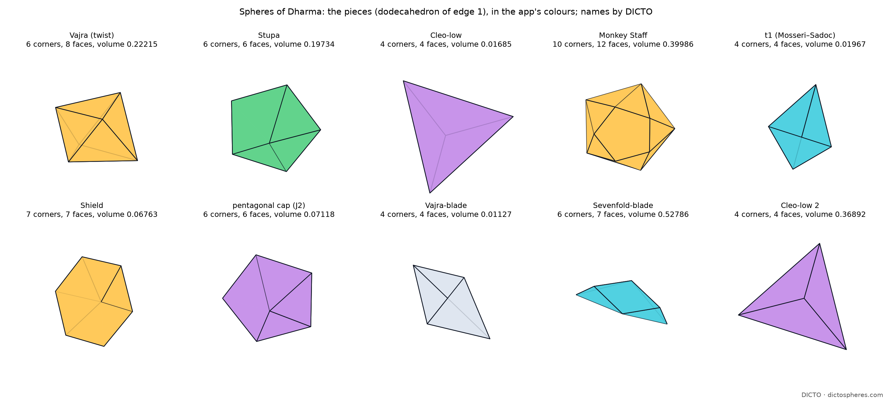
Figure 4.8. The Spheres of Dharma pieces with DICTO's names, in the app's colours (dodecahedron of edge 1): Vajra (twist), Stupa, Cleo-low, Monkey Staff, t1, Shield, the pentagonal cap, Vajra-blade, Sevenfold-blade and Cleo-low 2.
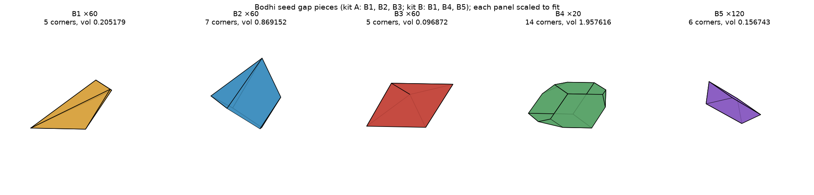
Figure 4.9. The Bodhi Seed's gap pieces: Vajra (fine) (B1), Chatra (B2), Mudra (B3), Crown Jewel (B4) and Diadem (B5, shown as L) [DICTO, Bodhi pieces study].
Chapter 5. Theaetetus
From paper #29, DICTO DOI 10.5281/zenodo.23378070
An icosahedron held exactly by its Cleo-Icos, grown to the DICTO Hecatodihedron in two exact stories: 215 pieces in closed layers, and 102 clean pieces that cut a dual pair with the same twenty cones
Abstract. We hollow the DICTO-ICOSA star (the DICTO-Star with a pyramid on each of its 152 free faces) and find that a core icosahedron resting on twelve inner tips is loose: it turns about 14° before it touches anything. DICTO's remedy is to hold it with Cleo-Icos (an icosahedron's face pyramids from its centre) standing on the twenty triangles of the icosidodecahedron of edge 1, points inward. Their points land exactly on the face centres of an icosahedron of edge 1, the same edge as every other piece, because the icosidodecahedron's triangles lie at twice that icosahedron's inradius; held so, the core cannot turn or shift. The hollow is then exactly the core, twelve flat pentagonal pyramids (Aetos) and twenty triangular antiprisms (the shadow of Klitzing's four-dimensional segmentochoron K-4.137), each antiprism a Cleo-Ico, three Sphen and three Sphenion, with volumes Cleo-Ico : Sphen : Sphenion = 3 : 2 : 1 and each Aetos exactly √5 Cleo-Icos. Grown outward with the layers of the Spheres of Dharma (scaled by 2/φ), the object closes on the DICTO Hecatodihedron (102 faces) in two exact stories. In the stations (215 pieces) every layer is a closed solid, each Cleo-Ico fused with the dodecahedron's corner pyramid into an Atraktos. In the 102 clean pieces, none with a dent, the core is cut into its twenty Cleo-Icos and the dodecahedron round it into twenty Kion by the same twenty cones from the centre, so the dual pair of icosahedron and dodecahedron is cut face to corner. Every volume is exact in ℚ(√5) and both stories sum to the Hecatodihedron, 3350 − 1486√5, with no remainder. The object is the Theaetetus world of the Kaleidohedra app.
1. A loose core
The DICTO-Star is an icosidodecahedron with a regular dodecahedron on each of its 12 pentagons and a tridiminished icosahedron (J63) on each of its 20 triangles, closed exactly in flat space (DICTO DOI: 10.5281/zenodo.23284213). The DICTO-ICOSA star adds a pyramid with all edges 1 on each of its 152 free faces (72 pentagonal pyramids, 80 tetrahedra): 185 regular-faced pieces, no overlaps. Its hollow form removes the central icosidodecahedron, points a pyramid with all edges 1 into the hollow from each of the icosidodecahedron's 32 faces, and rests a core icosahedron (edge 2/√5) on the twelve pentagonal tips.
We checked that hollow exactly. The 32 inward pyramids never overlap (496 pairs, separating axes), and the core is regular with its corners on the twelve tips. But the twenty inward tetrahedra stop short of the core's faces by φ²/√3 − √(2/3) − φ²/√15 = 0.019053, so the core touches at its twelve corners only, and it is loose: turned about a five-fold, three-fold, two-fold or random axis it first touches anything at 13.7°, 14.3°, 13.45° and 13.5°.
2. The Cleo-Ico hold
A Cleo-Ico is the pyramid on one face of an icosahedron with its apex at the icosahedron's centre (Mackay's unit tetrahedron; our FUJI Family paper, DICTO DOI: 10.5281/zenodo.23357896). With edge 1 its side edges are the icosahedron's circumradius √(10 + 2√5)/4 = 0.951057 and its height is the inradius φ²/(2√3) = 0.755761.
The fit. Stand a Cleo-Ico on each of the 20 triangles of the icosidodecahedron of edge 1, point inward. The triangles lie at distance φ²/√3 from the centre, so every point lands at φ²/(2√3): exactly the inradius of an icosahedron of edge 1 on the five-fold axes, at the centre of its face. The reason is classical: the icosidodecahedron of edge 1 is the rectified icosahedron of edge 2, whose triangles lie in that icosahedron's face planes, at twice the inradius of our core. Measured, the twenty points sit on the twenty face centres to 1·10−16; the Cleo-Icos meet one another only at the shell's corners and the core only at the points.
Locked. A turn of the core tilts some face into its point, and a shift pushes some face into its point. Tested over 303 directions, every turn of 0.5°, 1° and 2° and every shift of 0.001 collides. The contacts are points, so a turn presses in as the square of the angle (depth 2.9·10−5 at 0.5°) and a shift at once. The core is itself twenty Cleo-Icos round its centre, so the hollow then holds forty identical Cleo-Icos, point to base in pairs along the twenty three-fold axes, each loose piece locked by its neighbours (0 free motions in 1 200 shifts and 1 200 turns of each kind). Two edge-1 icosahedra, one whole and one in its twenty points, leave exactly 5 + 2√5 of the hollow empty.
Aetos. The edge-1 core's corners reach 0.951057 and stop 0.425325 short of the twelve pentagonal windows (at √((5 + 2√5)/5) = 1.376382): room for a flat pentagonal pyramid standing on the window with its point on the core's corner. Its side edges come out at 0.951057, the Cleo-Ico's own, so its five side triangles are the Cleo-Ico's side triangle. With the twenty Cleo-Icos and twelve Aetos the core is held at all 32 points; this is the hollow DICTO-ICOSA star now shown in the app.
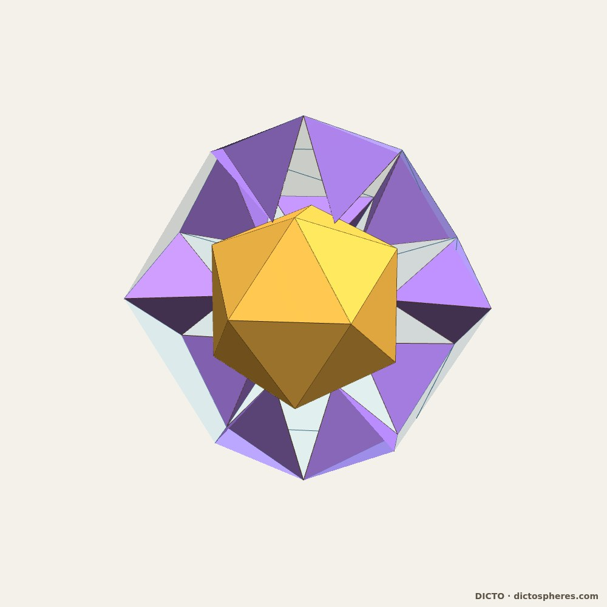
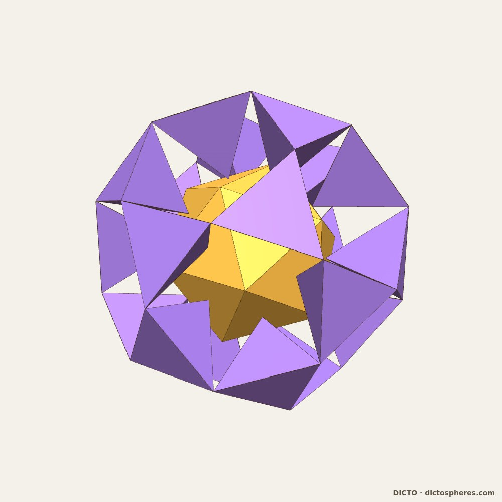
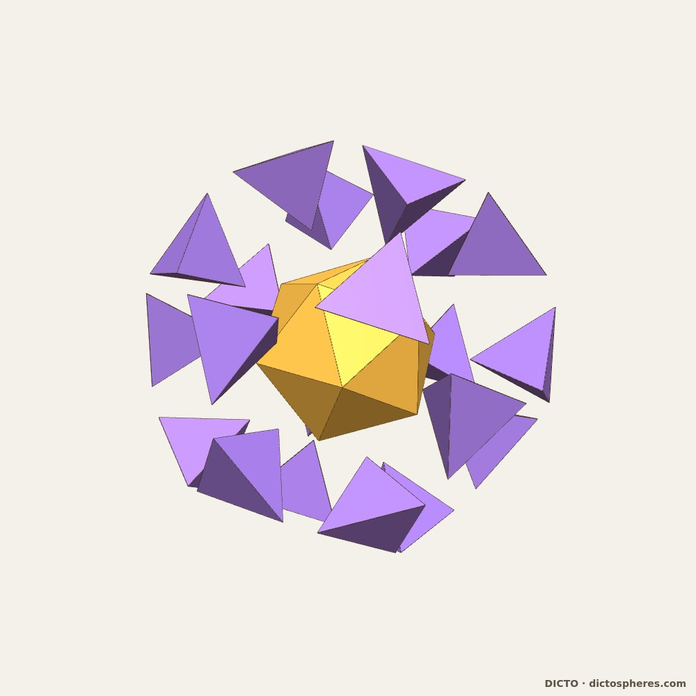
Figure 5.1. The Cleo-Ico hold: (a) the edge-1 core (gold) and twenty Cleo-Icos (violet) in the glass icosidodecahedron; (b) cut in half; (c) the shell removed; (d) pulled apart along the three-fold axes.
3. The hollow, exactly
The icosidodecahedron of edge 1 is exactly the core, the twelve Aetos and twenty triangular antiprisms: over each core face, the solid between it and the parallel shell triangle above (turned 180°, distance φ²/(2√3)). The six side triangles of each antiprism have sides 1, 0.951057, 0.951057, the Cleo-Ico's triangle again, so every holding shape is built from one triangle. Volumes add up exactly (Table 1); no two of the 33 solids overlap; sampled points are each covered once; all 60 contacts between Aetos and antiprisms are whole faces.
A shadow from four dimensions. This decomposition is known in another form. Klitzing's convex segmentochoron "icosahedron atop icosidodecahedron" (ikaid, K-4.137) has exactly our two solids as its bases, both of edge 1, joined by 20 octahedra and 12 pentagonal pyramids, at height 1/(2φ). Seen straight down its axis, each lateral edge of length 1 shortens to √(1 − 1/(4φ²)) = √((5 + √5)/8) = 0.951057, our recurring side; each octahedron, between an icosahedron face and the turned shell triangle above it, becomes one of our antiprisms, and each pentagonal pyramid an Aetos. The polytope is the cap of the rectified 600-cell, icosahedron first. What is new here is what sits inside that shadow: the Cleo-Icos and the cut into Sphen and Sphenion.
Each antiprism holds one Cleo-Ico and is exactly that Cleo-Ico, three Sphen on its shell edges and three Sphenion on its core edges (tetrahedra with edges 1, four of 0.951057 and 1/√3, and 1, three of 0.951057 and two of 1/√3). Exactly, Cleo-Ico : Sphen : Sphenion = 3 : 2 : 1, an antiprism is four Cleo-Icos, and an Aetos is √5 Cleo-Icos. The lengths 1/√3 (from triangle centres) keep Sphen and Sphenion out of the golden kit: neither is AXE, CLEO, FUJI, J2 or a Mosseri–Sadoc tile, and groupings by symmetry (twelve, thirty or twenty pieces) all have dents.
4. Grown to the Hecatodihedron: the stations
The Spheres of Dharma (DICTO DOI: 10.5281/zenodo.23310833) nest the icosahedral solids exactly, each layer filled by a few repeated pieces. Their first step puts an icosahedron in an icosidodecahedron with edges in ratio φ²/2 = 1.309; ours has ratio 1, the core 1.309 times as large: a new first step. From the icosidodecahedron outward we use Dharma's own layers, scaled by 2/φ: twenty triangular pyramids to the dodecahedron, twelve twisted pentagonal frusta and thirty Mosseri–Sadoc t1 to the truncated icosahedron, and twenty caps to the DICTO Hecatodihedron (DICTO DOI: 10.5281/zenodo.23360858): 102 faces (60 triangles, 30 rhombi, 12 pentagons), 80 corners.
Searching every pair of face-sharing pieces for convex unions found three: a Cleo-Ico with the dodecahedron's corner pyramid on the same triangle (20, symmetric), a Cleo-Ico with one Sphen (60 choices, breaking the symmetry) and a t1 with a frustum (24 choices, not enough for all). DICTO chose the first: the Atraktos, a triangular bipyramid from a core face to a dodecahedron corner. The stations are then 215 pieces in which every layer is a closed solid: core, 12 Aetos, 60 Sphen, 60 Sphenion, 20 Atraktos, 12 frusta, 30 t1 and 20 caps (Figure 5.2).
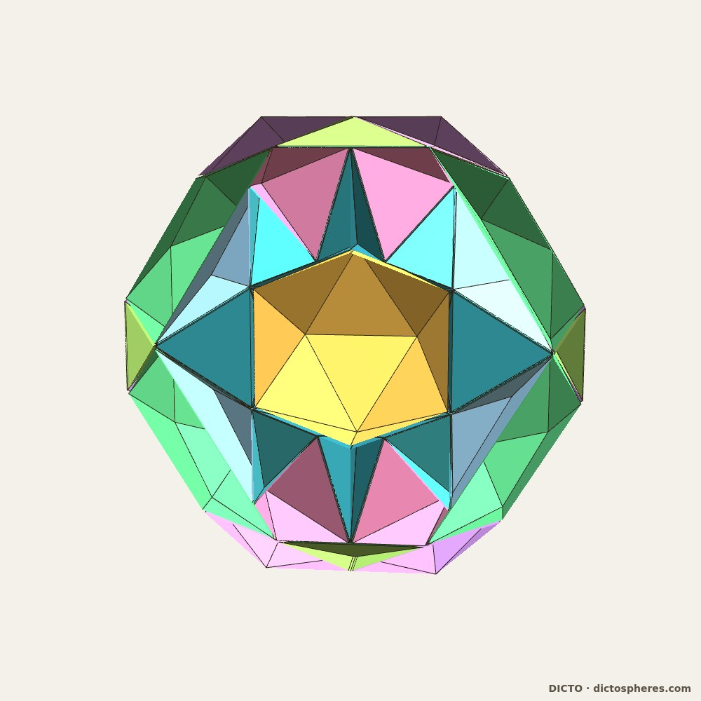
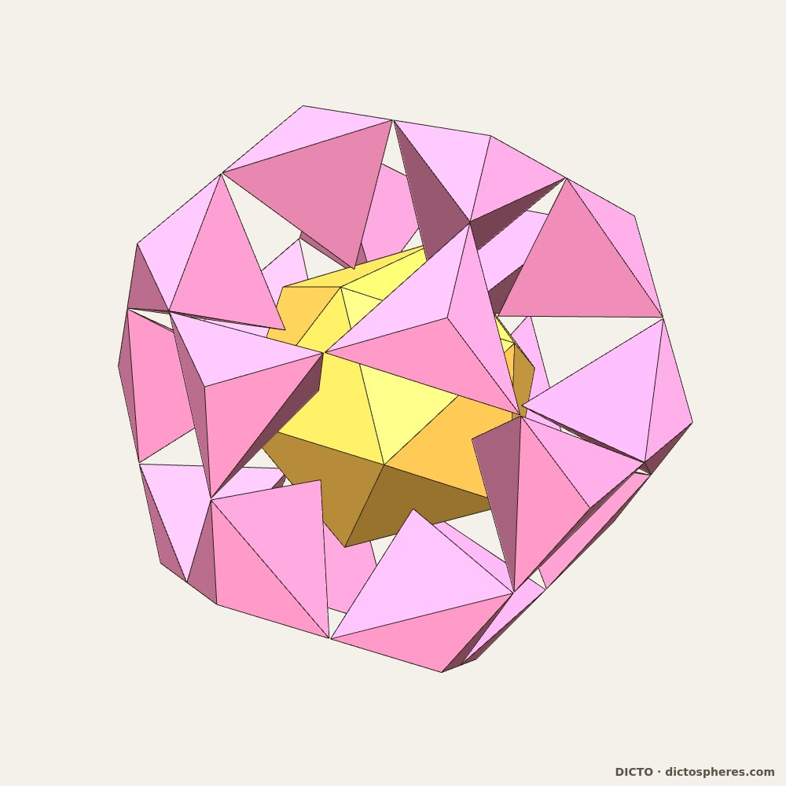
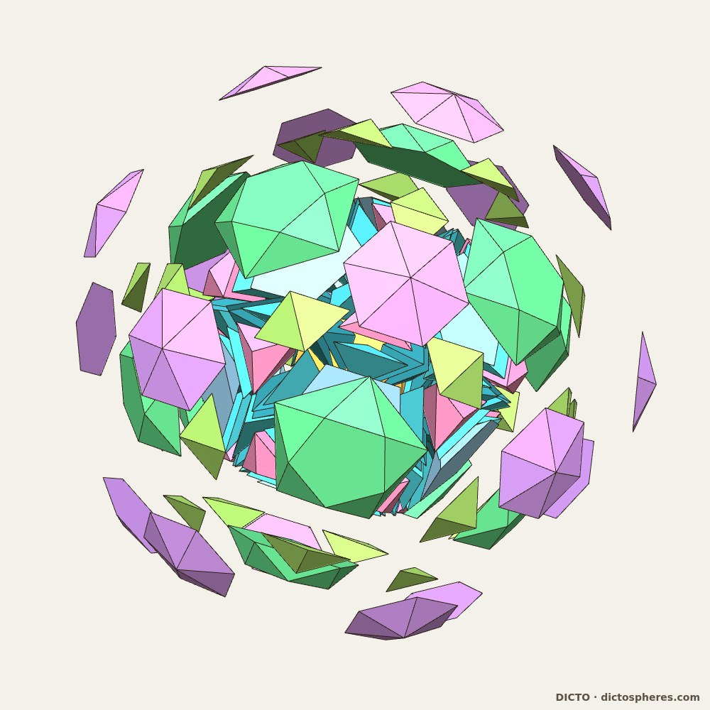
Figure 5.2. The stations: (a) the Hecatodihedron, coloured by face type as in its own paper (pentagons gold, rhombi cyan, triangles wisteria); (b) cut in half; (c) the core and its twenty Atraktos (pink); (d) pulled apart by layer: caps wisteria, the truncated-icosahedron layer green.
5. 102 clean pieces: the dual pair cut by one set of cones
DICTO proposed that the Hecatodihedron, with its 102 faces, could be made of 102 pieces with no dents. Symmetry decides the shape of the answer. Every piece lies in a set of 1, 12, 20, 30 or 60 copies; all of these but 1 are even, so the core cannot stay whole, and with the core cut into its twenty Cleo-Icos the rest must come as 12 + 20 + 20 + 30 = 82. Fusing the stations' pieces gives exactly that count (inner Cleo-Ico with its three Sphenion, Atraktos with its three Sphen, the caps, Aetos with its frustum, the t1), but every fused kind has a dent. New cuts are needed.
The cut. Dharma's frusta (12), t1 (30) and caps (20) are already convex. The dodecahedron minus the core is cut from the centre by the thirty planes through the core's edges into twenty Kion, one over each core face. A Kion is the meeting of a cone from the centre, the dodecahedron and the space beyond one core face; an intersection of convex sets is convex, so no Kion has a dent. It has 10 corners and 7 faces: the core face below, three pentagons on the cutting planes and three kites on the dodecahedron above, one from each of the three faces round a corner. Together: 20 Cleo-Icos + 20 Kion + 12 frusta + 30 t1 + 20 caps = 102, summing exactly to the Hecatodihedron (Figure 5.3).
The dual pair. The same twenty cones cut the icosahedron into its twenty Cleo-Icos, one per face, and the dodecahedron into twenty corner cones, one per corner: a face cone and a corner cone on each three-fold axis, an icosahedron's face matched to the dodecahedron's corner above it. Each corner cone is exactly a Cleo-Ico and a Kion, 1/2 + √5/10, a twentieth of the dodecahedron 10 + 2√5. The count 102 equals the number of the Hecatodihedron's faces; we have not found a one-to-one pairing of pieces with faces (the pieces come in sets of 20, 20, 12, 30 and 20, the faces in 60, 30 and 12).
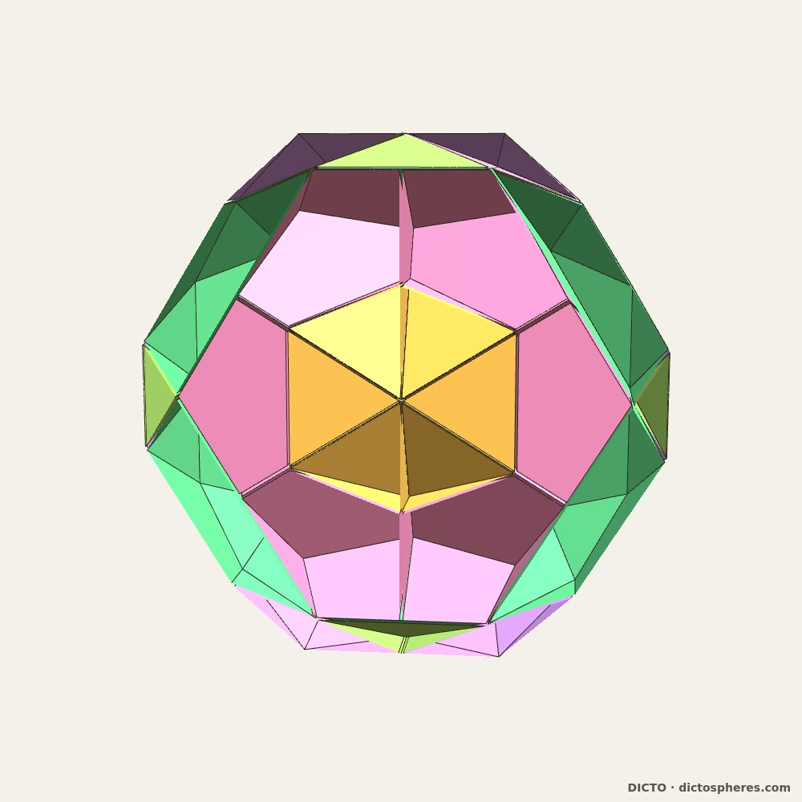
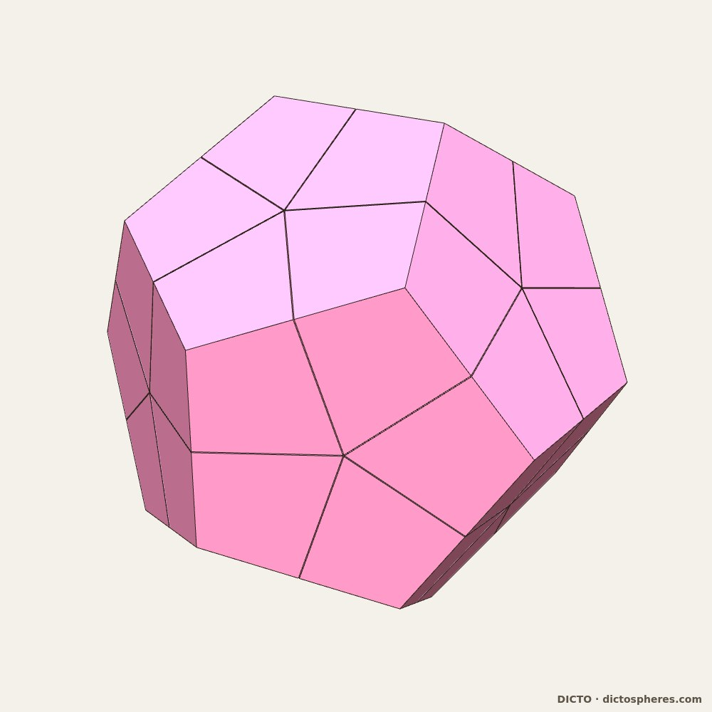
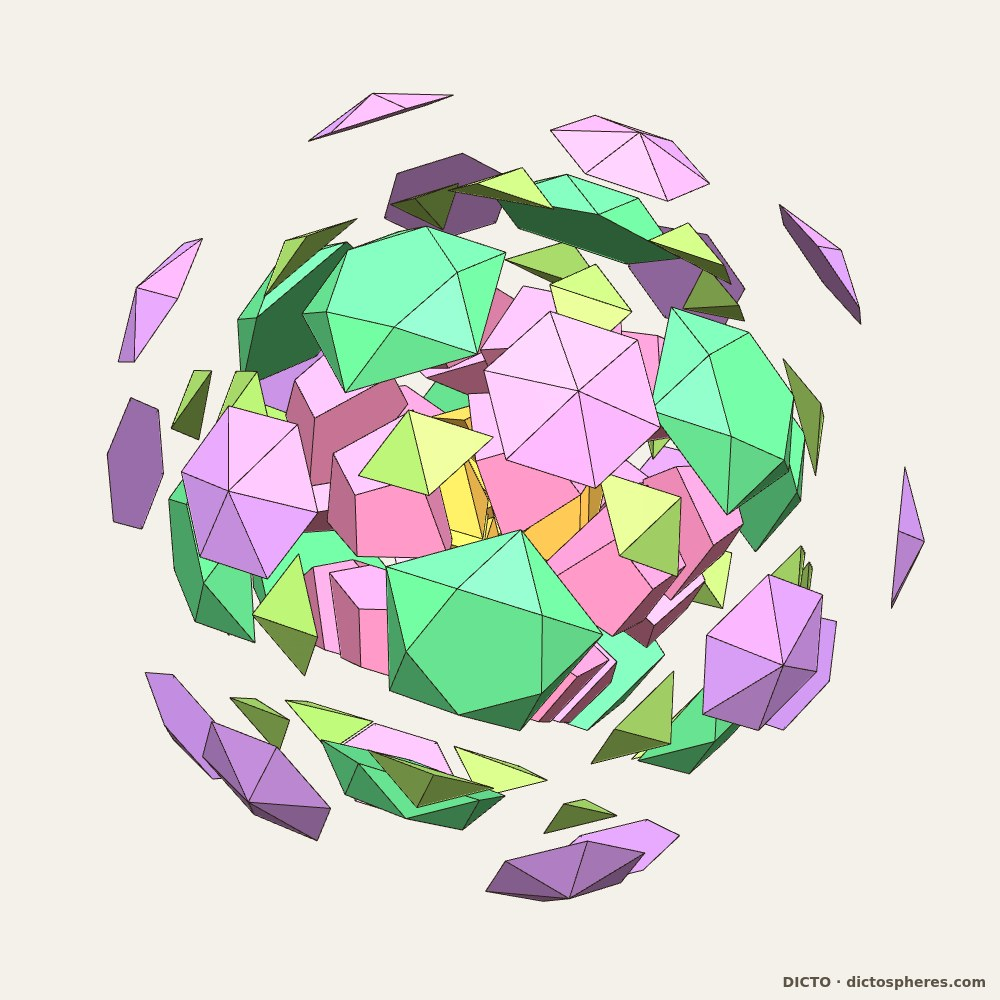
Figure 5.3. The 102 clean pieces: (a) the Hecatodihedron; (b) cut in half: the twenty Cleo-Icos (gold) inside the twenty Kion (pink); (c) the core and the Kion make the dodecahedron, each face split into five kites; (d) pulled apart by layer.
6. Exact volumes
Every corner was snapped to its exact value a + b√5 and every volume computed in ℚ(√5); the pieces inside the dodecahedron were rebuilt exactly from exact corners. Both stories sum to the Hecatodihedron with remainder exactly zero, and the hollow's pieces to the icosidodecahedron 15/2 + 17√5/6.
Piece
Number (stations / 102)
Volume (exact)
Volume
Core icosahedron (edge 1)
1 / —
5/4 + 5√5/12
2.181695
Cleo-Ico
(in Atraktos) / 20
1/16 + √5/48
0.109085
Aetos
12 / —
5/48 + √5/16
0.243921
Sphen
60 / —
1/24 + √5/72
0.072723
Sphenion
60 / —
1/48 + √5/144
0.036362
Atraktos
20 / —
3/16 − √5/48
0.140915
Kion
— / 20
7/16 + 19√5/240
0.614522
Twisted pentagonal frustum (Dharma)
12 / 12
85/3 − 37√5/3
0.755162
t1 (Dharma)
30 / 30
6 − 8√5/3
0.037152
Cap (Dharma)
20 / 20
141 − 63√5
0.127717
Hecatodihedron
215 / 102
3350 − 1486√5
27.202985
Table 1. Dharma's layers enter at scale 2/φ; the dodecahedron (edge 2/φ) is 10 + 2√5.
7. Relation to known work, and status
Known and credited: the decomposition of Section 3 as the shadow of Klitzing's segmentochoron K-4.137 (Klitzing 2000; the cap of the rectified 600-cell); nested Platonic solids (Kepler, Mysterium cosmographicum, 1596); Euclid's constructions of the icosahedron and dodecahedron (Elements XIII, by tradition after Theaetetus); the pyramids from the centre of the icosahedron and dodecahedron (Hypsicles, "Book XIV"); the Cleo-Icos as Mackay's unit tetrahedron (Mackay 1962; Ino 1969; Marks 1984); rectification, the icosidodecahedron and the dual pair; concentric icosahedral shells of atoms in Mackay clusters and in the Tsai clusters of quasicrystals and their approximants (Takakura et al. 2007; Deguchi et al. 2015), which are shells of points, not solid fillings; the compound of five octahedra, whose 30 corners are the icosidodecahedron's and whose common core is an icosahedron of edge 2/φ, not our edge 1 (Hart, Virtual Polyhedra); tetrahedra suspended inside an icosahedron (M. Levin, Bridges 2024); dissections of the icosidodecahedron and dodecahedron into golden Mosseri–Sadoc tetrahedra (Koca et al. 2020; Al Raisi et al. 2026), a different dissection; our own Spheres of Dharma, whose layers we reuse, the DICTO Hecatodihedron, the DICTO-Star and the FUJI Family, whose Section 5.6 fills the icosidodecahedron of edge 1/φ with twenty CLEOs pointing inward and finds an icosahedron with its corners at the pentagon centres (a different, larger icosahedron, held by different pieces).
Not found in a search of our reference library (183 entries) and web searches (15 October 2026): the edge-1 icosahedron held exactly by Cleo-Icos in the edge-1 icosidodecahedron; the hollow as core + Aetos + antiprisms with Cleo-Ico : Sphen : Sphenion = 3 : 2 : 1; the two exact stories to the Hecatodihedron; the twenty Kion. The fits follow from classical relations, and the hollow's decomposition turned out to be a known shadow, so other parts may be known too; this record makes no claim of priority.
Part II. The cycle turned and seeded
Chapter 6. Inverted Shells: The Spheres of Dharma Turned Inside Out
From paper #32, DICTO DOI 10.5281/zenodo.23405029
Polar reciprocation reverses the Spheres of Dharma into a new exact φ³ cycle of nested icosahedral shells: one kind of piece per layer, an evenly stepped nest, the great stellated dodecahedron locked in the outer gap, a dual pair in the inner gap, the golden frame, the cycle repeating inward to its core, and the checks that keep each step exact
Abstract. The Spheres of Dharma nest six icosahedral solids exactly, from an icosahedron out to the icosahedron φ³ larger; between the truncated icosahedron and the triacontahedron, the layer closes part-way into the DICTO Hecatodihedron. DICTO proposed turning the cycle inside out. Turning each layer's pieces over does not work: no layer closes into a shell. Taking the six solids and the Hecatodihedron stage as seven stations and replacing each by its polar reciprocal reverses the nesting and gives a new exact cycle: dodecahedron ⊂ icosidodecahedron ⊂ Ogdoecontahedron ⊂ pentakis dodecahedron ⊂ icosahedron ⊂ rhombic triacontahedron ⊂ dodecahedron φ³ larger (volume ratio φ⁹). Its one non-classical station, the dual of the Hecatodihedron, is the DICTO Ogdoecontahedron (DICTO DOI: 10.5281/zenodo.23404688). Cutting each layer by cones over the faces of its inner solid gives one kind of piece per layer (12, 12, 20, 60, 20, 30), every volume exact in ℚ(√5) with remainder 0. The cycle inherits two loose ends. Tightening them gives an evenly stepped nest, still one kind per layer and exact. Left loose, the large outer gap holds the great stellated dodecahedron at exactly one size: its 20 points on the outer dodecahedron's corners, its 12 valleys on the triacontahedron's tips, cutting the gap into 60 tetrahedra and 60 pentagonal pyramids. The inner gap admits no star and no locked dual pair among those tested, but the truncated icosidodecahedron pair fits in reverse order (as polarity demands), with play exactly √5·φ³/9. The golden rectangles that frame the whole are the outer dodecahedron's own small stellation, and the cycle repeats inward without end. We also record the checks this study forced on us, because three of our first tables were wrong.
1. The Spheres of Dharma turned inside out
The Spheres of Dharma (DICTO DOI: 10.5281/zenodo.23310833) is an exact, endlessly repeating nesting of six icosahedral solids, the Ritsudō cycle: icosahedron ⊂ icosidodecahedron ⊂ dodecahedron ⊂ truncated icosahedron ⊂ rhombic triacontahedron ⊂ icosahedron φ³ larger, each layer filled by a few repeated pieces. In its truncated icosahedron → triacontahedron layer the hexagonal caps close part-way into a convex solid, the DICTO Truncated-Icosahedral Hecatodihedron (DICTO DOI: 10.5281/zenodo.23360858): the truncated icosahedron with a Shield on each hexagon, 102 faces (12 pentagons, 30 rhombi, 60 triangles) and 80 corners. It is the seventh stage of the cycle when each closed stage is taken as one solid (Capturing the In-betweens, DICTO DOI: 10.5281/zenodo.23345502). Here we take the six solids and the Hecatodihedron stage as seven stations.
First attempt: flip the pieces. DICTO's question (13 October 2026) was what happens to the cycle turned inside out. The direct way is to turn every piece of every layer (skin) over, as a physical half-turn about a line through the point on the piece's own axis midway between its two solids; every Dharma piece has a mirror plane through its axis, so this is the same as reflecting it in the midway plane. No skin closes into a shell (Table 1, float). Skins of a few large pyramids drift apart, their points now turned inward; the closed skins crowd, about a third of the midway surface covered twice. In every skin the flipped pieces rest on the inner solid and never cut into it. Dharma's pieces are shaped for their direction, so turning the cycle inside out needs new pieces.
Skin
Pieces
Midway surface covered
Covered twice
Deepest overlap
icosahedron → icosidodecahedron
32
100%
35.1%
0.369
icosidodecahedron → dodecahedron
20
3.1%
0
none (pieces apart)
dodecahedron → truncated icosahedron
42
67.1%
4.4%
0.163
truncated icosahedron → Hecatodihedron
20
7.7%
0
none
Hecatodihedron → triacontahedron
72
17.8%
0.1%
0.070
triacontahedron → icosahedron φ³
50
100%
36.4%
0.309
Table 1. The flip test (float; cover of the midway surface, halfway between the two solids along each direction, sampled at 4000 directions; deepest overlap between neighbouring flipped pieces, in the units of the Dharma coordinates).
Second attempt: polar reciprocation. Polar reciprocation in a sphere about the common centre sends every plane to a point and every point to a plane; a solid goes to its dual, and inclusion reverses: if P ⊂ Q then Q* ⊂ P* (a classical fact of convex geometry; see e.g. Firsching 2015). So the reversed cycle is again a nest, read from the other end:
D ⊂ ID ⊂ Ogdoecontahedron ⊂ PD ⊂ I ⊂ RT ⊂ D·φ³
(dodecahedron, icosidodecahedron, the Hecatodihedron's dual, pentakis dodecahedron, icosahedron, rhombic triacontahedron, dodecahedron). We computed every pole exactly in ℚ(√5) from the snapped original corners. The outer dodecahedron is exactly φ³ times the inner one, so the volume closes at 38 + 17√5 = φ⁹. Duality swaps solids in pairs, so the icosidodecahedron and the triacontahedron, and the icosahedron and the dodecahedron, appear in both cycles in swapped places; the truncated icosahedron becomes the pentakis dodecahedron, and the Hecatodihedron becomes something new.
Figure 6.1. The reversed cycle, faithful to the original: (a) closed, the outer dodecahedron; (b) cut in half: under reciprocation the large layers become small and the small large, so the outer layer is far the largest; (c) pulled apart by layer.
2. The new station
The polar of the Hecatodihedron is a solid not found named in the sources we checked; exactly, it is the canonical pentakis dodecahedron with its 20 three-fold corners cut off at the truncated icosahedron's hexagon planes, an unnamed solid derived from a known one (the DICTO Hecatodihedron paper, Version 2 (DICTO DOI: 10.5281/zenodo.23360857); this sentence is corrected in Version 2). DICTO named it the Ogdoecontahedron for its 80 faces: 20 regular hexagons and 60 kites, with 102 corners and 180 edges. The solid itself, including how it sits between the icosidodecahedron and the pentakis dodecahedron, is described in The DICTO Ogdoecontahedron (DICTO DOI: 10.5281/zenodo.23404688).
Figure 6.2. The DICTO Ogdoecontahedron, the new station: hexagons wisteria, kites cyan.
3. One kind of piece per layer
We cut each layer A ⊂ B by the cones from the centre over the faces of the inner solid A: each piece is cone(F) ∩ B beyond F, convex by construction (the Kion construction of Theaetetus, DICTO DOI: 10.5281/zenodo.23378070). Faces of A that already lie on B's surface give no piece. Every corner was solved exactly as the meeting point of three exact planes, and every volume summed exactly against its layer.
Layer
Pieces
Each piece
Exact volume
D → ID
12
a column on each dodecahedron face (two regular pentagons, 5 pentagonal and 5 triangular sides)
(−144185 + 64487√5)/243
ID → Ogdoecontahedron
12
a cap on each icosidodecahedron pentagon (the icosidodecahedron's triangles lie in the hexagons and give no piece)
(−155 + 101√5)/4617
Ogdoecontahedron → PD
20
a low pyramid on each regular hexagon (the kites lie in PD's faces)
(−22 + 10√5)/81
PD → I
60
an irregular wedge, 5 corners and 6 triangles
(−6560 + 2936√5)/513
I → RT
20
a triangular pyramid on each icosahedron face
(−796 + 356√5)/3
RT → D·φ³
30
a roof on each rhombus, its ridge a dodecahedron edge
200 − 1336√5/15
In every layer, the sum of the pieces minus the layer volume is exactly 0.
Figure 6.3. One piece of each layer, seen from the side with the outward direction up, each drawn at its own scale; layer colours as in the cut views. (a)–(f) the faithful nest, inside to outside (O = Ogdoecontahedron): the column on a dodecahedron face, the cap on an icosidodecahedron pentagon, the low pyramid on a regular hexagon, the irregular wedge, Kepler's pyramid, and the roof on a rhombus. (g), (h) the two end pieces that change in the tight nest (Section 4): the near-antiprism column and the wedge on a rhombus.
4. Two loose ends, and the even nest
The faithful copy keeps the original closure (outer dodecahedron = inner × φ³), and that leaves two stations floating: the triacontahedron could grow ×1.894 (float) before touching the outer dodecahedron, and the inner dodecahedron ×1.232 before touching the icosidodecahedron. The four middle stations touch. DICTO proposed a more even nest. Tightening both ends, the inner dodecahedron grows by exactly 11/18 + 5√5/18 until its corners touch the icosidodecahedron's triangles, and the outer one shrinks by exactly 5 − 2√5 until the triacontahedron's twelve tips touch its face centres. The inradii then step evenly (0.495, 0.567, 0.623, 0.653, 0.714, 0.764, 0.898), the outer layer falls from 25.2 to 1.9, and every layer is still one kind of piece, exact with remainder 0: the inner layer becomes 12 near-antiprism columns, (−35/729 + 71√5/2187) each, and the outer 30 wedges on the rhombi, (−7352/3 + 1096√5) each. The price is the golden closure: the tight cycle repeats at linear ratio 1.8146 (squared 49815/2 − 22275√5/2), not a power of φ. We keep both versions.
Figure 6.4. Faithful and tight, cut in half: (a) the faithful nest, its large outer gap; (b) the tight nest, both loose ends closed.
5. The great stellated dodecahedron in the outer gap
DICTO proposed that a Kepler–Poinsot solid could sit in the faithful nest's large outer gap. We treated each star as a filled body (points of nonzero winding number; the densities at the centre come out 3, 3, 7, 7 as they should) and found the range of sizes that keeps the triacontahedron inside the star and the star inside the outer dodecahedron. The great icosahedron does not fit. The great dodecahedron and the small stellated dodecahedron fit, but float between two sizes. The great stellated dodecahedron fits at exactly one size: its 20 points are the outer dodecahedron's 20 corners, and its 12 valleys, where five spikes meet, are the chain's icosahedron corners, which are also the triacontahedron's five-fold tips. We checked this exactly: each of the 12 icosahedron corners lies on five of the star's face planes.
The star is the chain's icosahedron with a spike on each face (Kepler; our In-betweens paper, DICTO DOI: 10.5281/zenodo.23345502), and its volume is exactly 3 icosahedra, as follows from the standard formulas. Its surface is 60 triangles, each seen once from the centre, and the cones over them cut the gap into two exact layers: inside the star, around the triacontahedron, 60 congruent tetrahedra (point, triacontahedron corner and two valleys), (188/3 − 28√5) each; outside it, up to the dodecahedron, 60 congruent pentagonal pyramids, (112/3 − 248√5/15) each. Both sum to their layers with remainder 0.
Why it fits: the squared ratio of the star's point radius to its valley radius is exactly 3φ³/√5, a fixed property of the great stellated dodecahedron, and the chain's outer dodecahedron and its icosahedron stand in exactly this ratio.
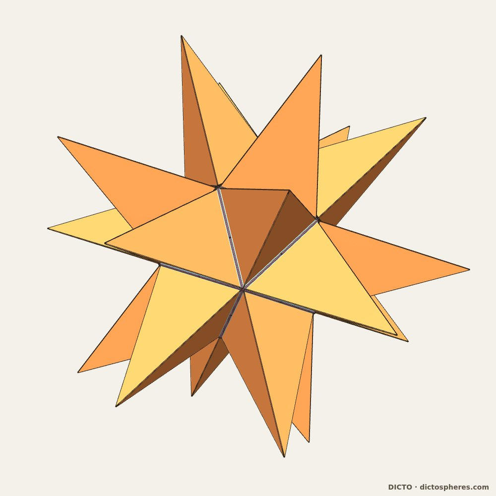
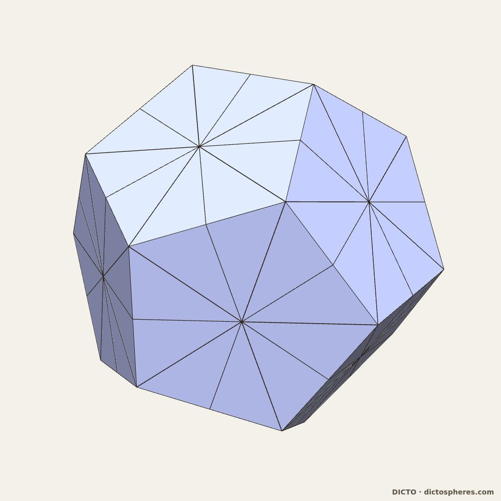
Figure 6.5. The great stellated dodecahedron in the outer gap: (a) the star alone, 60 tetrahedra (orange) around the triacontahedron; (b) cut in half; (c) closed by 60 pentagonal pyramids (lavender) to the outer dodecahedron.
6. The inner gap and a dual pair in reverse order
In the inner gap, between the dodecahedron and the icosidodecahedron, none of the four stars fits. The Hecatodihedron itself fits but floats: its size can vary ×1.232, touching 20 points at either end and never both. DICTO then proposed a dual pair instead. A pair X, Y locks when three contacts hold at once (dodecahedron on X, X on Y, Y on the icosidodecahedron). No icosahedral Archimedean–Catalan pair locks (the five non-chiral pairs were tested; the chiral snub dodecahedron pair was not). The truncated icosidodecahedron does not fit inside its dual; as DICTO pointed out, in the reversed cycle the pair must go in reverse order too, and so it does: the disdyakis triacontahedron inside the truncated icosidodecahedron. Exactly: the disdyakis triacontahedron (the truncated icosidodecahedron from the even permutations of (±1/φ, ±1/φ, ±(3+φ)), (±2/φ, ±φ, ±(1+2φ)), (±1/φ, ±φ², ±(3φ−1)), (±(2φ−1), ±2, ±(2+φ)), (±φ, ±3, ±2φ), in the chain's golden frame, and the disdyakis triacontahedron as its polar in the unit sphere) is scaled by 9 − 3√5 = 6/φ², the truncated icosidodecahedron by 2/15, and the play between them is 5/9 + 2√5/9 = √5·φ³/9 ≈ 1.0525. The truncated icosidodecahedron's 12 decagons lie exactly in the icosidodecahedron's pentagons. The layers cut into 12 pieces of one kind, 120 of one kind and 50 caps of two kinds, all exact with remainder 0. The nearest pair to a lock is the rhombicosidodecahedron inside the deltoidal hexecontahedron, play exactly 62/123 + 137√5/615 ≈ 1.00218: short of locking by 0.2%.
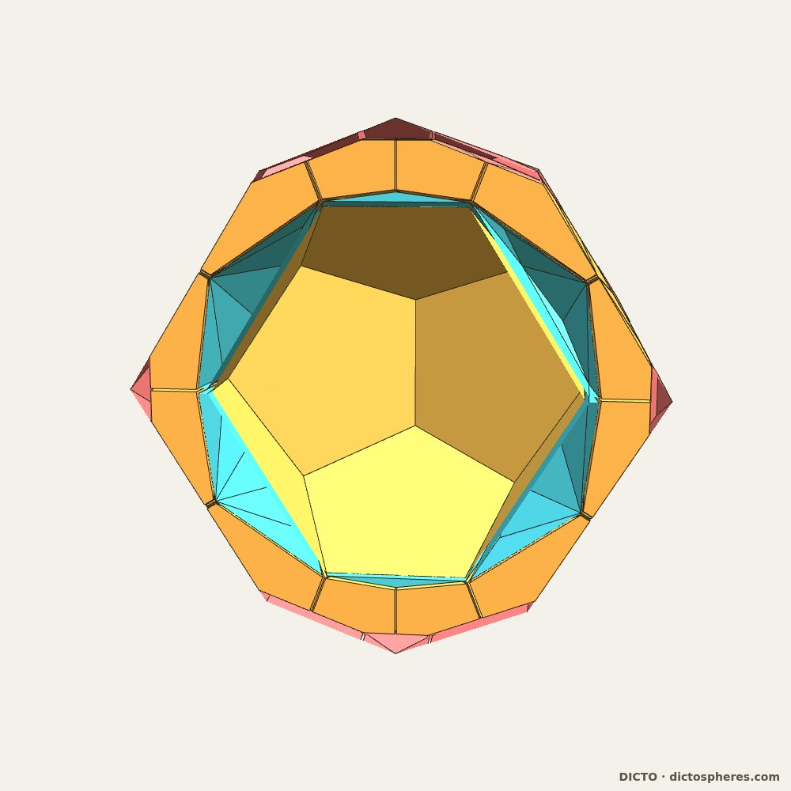
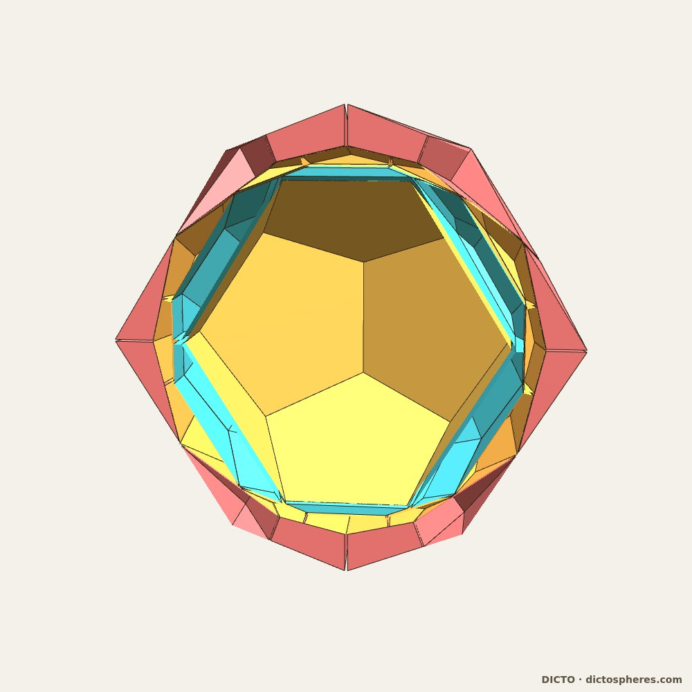
Figure 6.6. The inner gap: (a) the truncated icosidodecahedron pair up to the icosidodecahedron, the decagons flush in its pentagons; (b) cut in half: dodecahedron, disdyakis triacontahedron layer (cyan), truncated icosidodecahedron layer (amber), caps (coral); (c) the rhombicosidodecahedron pair, cut.
7. The golden frame
DICTO proposed that golden rectangles would frame the whole. The 15 golden rectangles of an icosahedron (five perpendicular triples) clear the whole nest when the icosahedron is the next turn of the cycle, the chain's icosahedron × φ³ (the smallest icosahedron around the dodecahedron is not enough). Then each of the outer dodecahedron's 30 edges lies along one of the rectangles' 30 long edges, centred, and the long edge is φ³ times as long (corner radius² 10 + 2√5, midpoint radius² 4). This is classical: the 30 long edges are the edges of the outer dodecahedron's small stellated dodecahedron, made by extending its edges (Kepler 1619), a pentagram chord being 1 + 2φ = φ³ times the pentagon side. The long edges of the frame that holds the cycle are the edges of its outer dodecahedron's own first stellation.
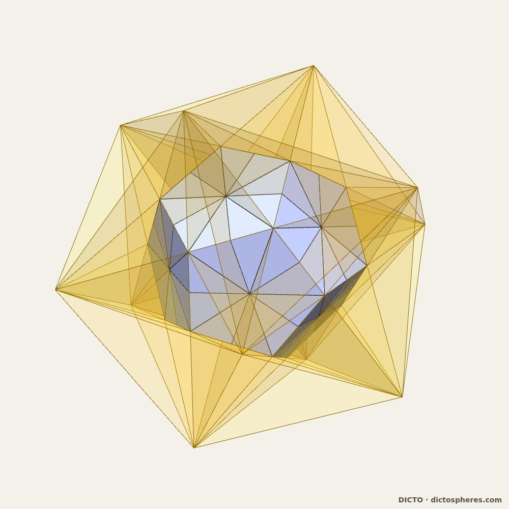
Figure 6.7. The nest (with the star layers) inside the 15 golden rectangles of the next turn's icosahedron.
8. The core: the cycle repeats inward
What fills the inner dodecahedron? The cycle itself. Its outer dodecahedron is exactly φ³ times its inner one, so the whole nest scaled by 1/φ³ fills the inner dodecahedron with no gap. Inside that sits the next turn, and so on to the centre. In the faithful version every turn brings back the large gap, so the great stellated dodecahedron locks in the outer gap of every turn: its points on that turn's dodecahedron corners and its valleys holding the next triacontahedron. The golden frame of Section 7 is the next turn outward, and the core is the next turn inward.
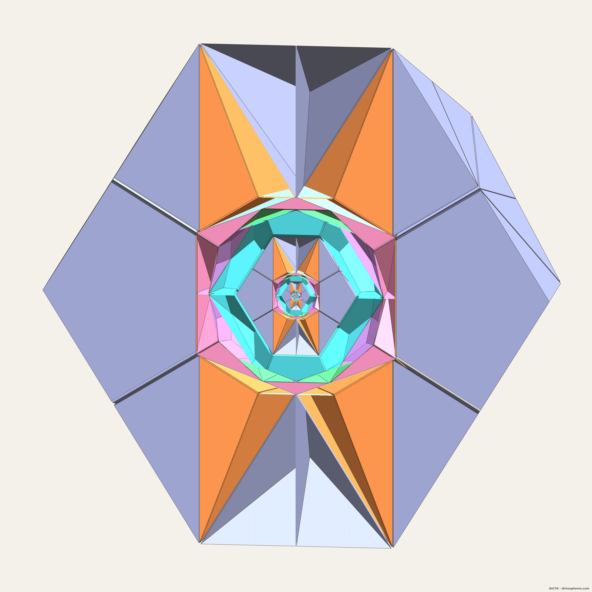
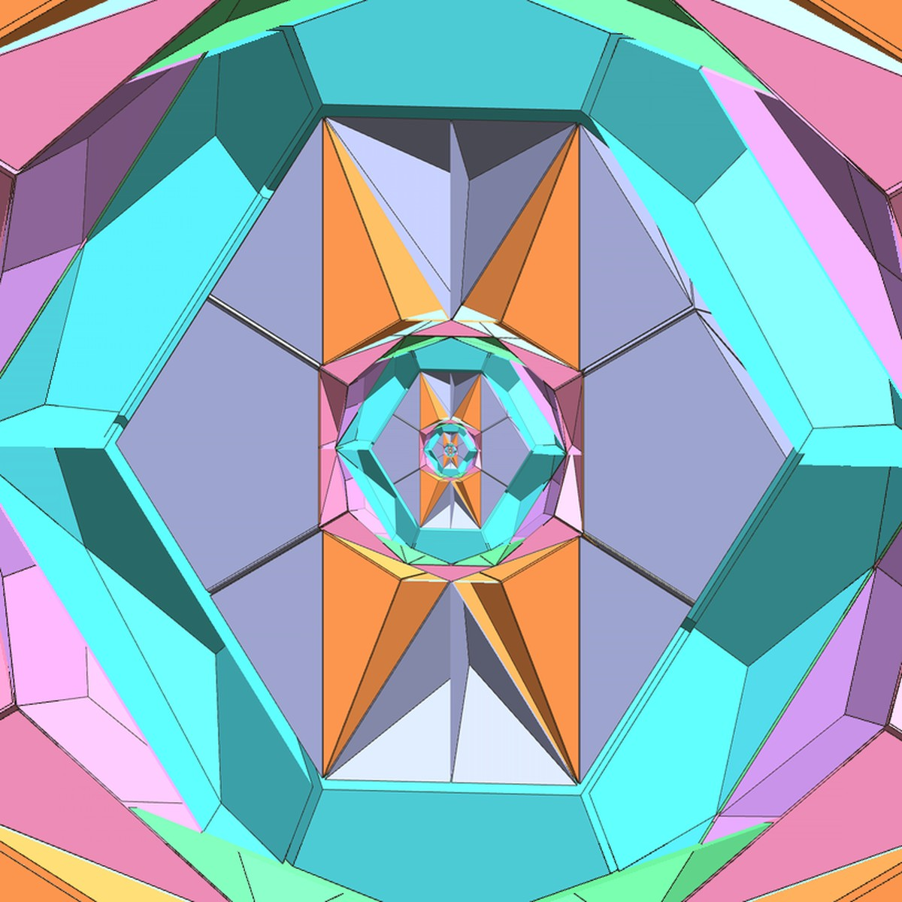
Figure 6.8. The infinite core, cut in half, in true proportion: (a) four turns, each a copy of the whole nest at 1/φ³ of the one around it, the great stellated dodecahedron (orange spikes) in the outer gap of every turn; (b) the centre, one turn in. Each deeper turn is its own render set in at exactly 1/φ³, so the picture is seamless and stays sharp.
The original and reversed cycles can also share one space; that is the subject of a further paper (in preparation).
9. Method: the checks this study forced on us
Three of our first tables in this study were wrong, and each was caught before publication. Standard coordinate lists for the Archimedean solids come in two mirror golden frames, and most of ours were in the wrong one, so they did not share the chain's axes. A slack formula was inverted. A float face count reported 103 kinds of piece in a layer of 120 congruent pieces. DICTO proposed rules that would prevent this, and we collected the checks in a shared module (studies/_lib/geomcheck.py) that stops with an error instead of printing a wrong table. The cone-cut script uses it directly. All the study scripts were rerun from scratch before publication, and their outputs were compared with the committed data:
Frame: every generated solid must be invariant under the chain's own five-fold and three-fold turns.
Both orders: every pair is tested both ways; polar reversal swaps the order of a dual pair.
Known case first: every formula reproduces a known answer (the dodecahedron's slack 1.232 in the icosidodecahedron; the triacontahedron locked in the star; star densities 3, 3, 7, 7) before it is used.
Kinds by symmetry: pieces are the same kind when the icosahedral group maps one onto the other, after reducing float hulls to their true corners.
Exact gate: a float result is a lead; a claim is made when the exact ℚ(√5) remainder is 0. Exact corners come from plane triples that reproduce the point.
Labels: every number is marked exact or float, faithful or adjusted, and originals are never overwritten.
The module's tests replay each of our slips and show the check catching it.
10. Relation to known work, and status
Known and credited: polar reciprocation and the reversal of inclusion (convex geometry; Firsching 2015); the largest copy of one polytope in another (Croft 1980; Firsching 2015 computes it exactly; our fits are the concentric, same-orientation case); nested icosahedral shells in clusters, viruses and fullerenes (Takakura et al. 2007, the Tsai cluster of the Spheres of Dharma; Twarock, Valiunas and Zappa 2015; Dechant et al. 2014); the Kepler–Poinsot solids, the great stellated dodecahedron as an icosahedron with twenty spikes and the small stellated dodecahedron as the dodecahedron's extended edges (Kepler 1619; Poinsot 1810); the 15 golden rectangles of the icosahedron. Hafner (2007) dissects the small and great stellated dodecahedra into the triacontahedron and hexecontahedron using 60 tetrahedra, each, as he describes, 1/6 of a prolate golden rhombohedron; our 60 tetrahedra between the triacontahedron and the star are different pieces: each has exactly φ² times the volume of his on the same triacontahedron edge (checked in ℚ(√5)).
Not found in our reference library and web searches (16 October 2026; printed catalogues not read): the reversed Spheres of Dharma as an exact nest with one piece kind per layer; the tight nest; the great stellated dodecahedron's lock in the reversed cycle, which follows directly from classical facts and is presented as an observation about this cycle, not a new theorem; the inner-gap dual pairs and their exact scales and play; the exact pieces and volumes.
Chapter 7. Double Vision – Both Cycles in One Space
From paper #33, DICTO DOI 10.5281/zenodo.23407106
The Spheres of Dharma and their polar reversal sharing one space: the toggle between two exact settings, why they exclude each other, and the interlock, both cycles cut into one solid of convex pieces
Abstract. The Spheres of Dharma nest six icosahedral solids, with the Hecatodihedron as an in-between stage; their polar reciprocal is a second exact cycle in which every nesting is reversed (Inverted Shells). We put both cycles in one space. The sphere of reciprocation is then the one free choice, and polarity with the cycle's φ³ repeat gives mirror spheres every φ3/2 in radius. At ρ² = φ²/4 the two cycles share the icosahedron and dodecahedron; at ρ² = 3φ²/4 they share the icosidodecahedron and triacontahedron; no sphere gives both, because the two settings differ by a factor 3, which is not a power of φ, and the loose ends of the cycle cannot be bent far enough to close the gap. Cutting every piece of one cycle by every piece of the other gives one solid of convex pieces, exact in ℚ(√5) with remainder 0 in every piece and layer: per turn, 536 pieces of 12 kinds in the first setting and 502 pieces of 11 kinds in the second. The setting moves where the two cycles cut each other: the first cuts the outer roofs hardest and leaves the dodecahedron columns whole; the second leaves the roofs, pyramids and tetrahedra whole and cuts the columns. The innermost layer is cut in both.
1. Two cycles
The Spheres of Dharma (DICTO DOI: 10.5281/zenodo.23310833) is an exact, endlessly repeating nesting of six icosahedral solids: icosahedron ⊂ icosidodecahedron ⊂ dodecahedron ⊂ truncated icosahedron ⊂ rhombic triacontahedron ⊂ icosahedron φ³ larger, with the DICTO Hecatodihedron (DICTO DOI: 10.5281/zenodo.23360858) as the closed in-between stage of its fourth layer (stage 7 in Capturing the In-betweens, DICTO DOI: 10.5281/zenodo.23345502). Taking that stage as a seventh station and reciprocating every station gives the reversed cycle of Inverted Shells (DICTO DOI: 10.5281/zenodo.23405029): dodecahedron ⊂ icosidodecahedron ⊂ Ogdoecontahedron ⊂ pentakis dodecahedron ⊂ icosahedron ⊂ rhombic triacontahedron ⊂ dodecahedron φ³ larger, the Ogdoecontahedron (DICTO DOI: 10.5281/zenodo.23404688) being the one non-classical solid. DICTO proposed that the two cycles can share one space and together make one real solid.
Which closed stages count as stations is a choice. The truncated icosahedron → triacontahedron layer has two convex in-between stages: the Hecatodihedron (stage 7, on the main route) and the icosahedron 3·I (the truncated icosahedron with its 12 pentagonal caps restored, reached by skipping the Shields). Neither contains the other (float check), so at most one can be a station. Inverted Shells chose the Hecatodihedron, and that choice produced the Ogdoecontahedron; the six published stations alone reciprocate to classical solids only. We keep the seven stations of Inverted Shells; the line-up with 3·I is left to a separate study.
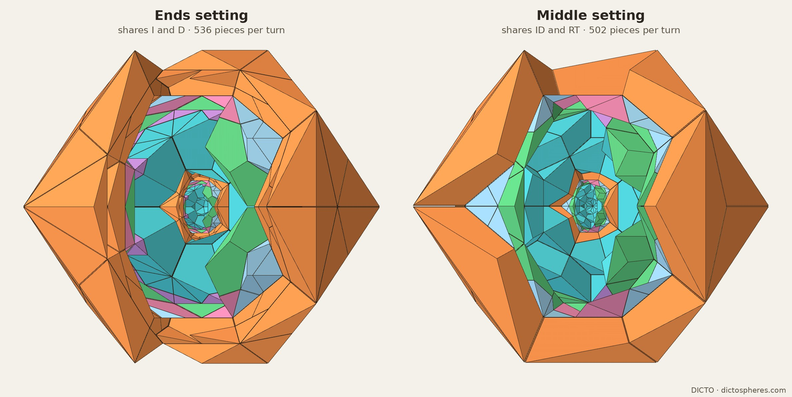
Figure 7.1. Both cycles as one solid: the interlock in its two settings, a slice removed so that you look inside; the next turn in sits at the centre (the same pieces scaled by φ⁻³, as the nest repeats). Colours are the six layers of the original cycle; every seam is a cut by the reversed cycle. Ends setting: the outer roofs are cut finely. Middle setting: the roofs are whole and the cutting moves inward. Drawn from exact pieces.
2. The toggle
The sphere of reciprocation is the one free choice. Polarity in a sphere of radius ρ sends radius r to ρ²/r, so in log-radius it is a reflection about log ρ; the cycle's φ³ repeat is a translation. Together they give mirror spheres every φ3/2 in radius: the union of the two cycles reads the same outward and inward, a palindrome in scale, and the polarity swaps the two cycles.
Ends setting, ρ² = φ²/4 = (3 + √5)/8, mirror sphere radius φ/2: the toggle sphere sits at the geometric mean of the two radii it pairs, ρ² = (corner radius of I) × (face distance of D), and the polarity sends the original icosahedron to the original dodecahedron, so the two cycles share I and D. Five of the reversed turn's seven stations lie inside the original icosahedron, the fifth being that icosahedron; its last layer, triacontahedron → dodecahedron, reaches out to the original dodecahedron and holds about 93% of the turn's volume (float).
Middle setting, ρ² = 3φ²/4, mirror sphere radius √3·φ/2: they share the icosidodecahedron and the triacontahedron instead. The reversed cycle is then exactly 3 times its ends-setting size, so its icosahedron is exactly 3·I: the original truncated icosahedron with its caps restored, an in-between stage of the original cycle though not one of its seven stations (checked in ℚ(√5)).
Never both. A station can be shared only if its polar is also a station: of the seven, only I ↔ D and ID ↔ RT pair up this way (the truncated icosahedron and the Hecatodihedron go to the pentakis dodecahedron and the Ogdoecontahedron, which are not original stations). Moving from one setting to the other scales ρ² by 3, while the cycle only repeats under powers of φ³; 3 is not a power of φ (for any integer k ≠ 0, φk = (Lk + Fk√5)/2 with Lucas and Fibonacci numbers, and Fk ≠ 0 makes it irrational), so no sphere gives both. Nor can the loose ends be bent to allow it: the original icosahedron can be scaled only within [(45√5 − 99)/2, 1 + 2√5/5] ≈ [0.8115, 1.8944] before the nest breaks (the polar form of the exact bend range of Inverted Shells, §4), and sharing both pairs would need a scale of 3/φ³ ≈ 0.708 or 3.
Figure 7.2. Both cycles as one solid, sliced clean through the centre and seen front on, like tree rings: the cut runs through a mirror plane of the icosahedral symmetry, every piece's cut face is coloured by its original layer, and the rings repeat inward turn after turn (the nest repeats under φ³). Thick ink marks the stations the two cycles share; the dotted gold ring is the sphere of reciprocation, and where it sits decides which rings coincide. (a) ρ² = φ²/4: I and D shared (and I·φ³, one turn out). (b) ρ² = 3φ²/4: ID and RT shared. No sphere gives both. Drawn from exact pieces.
3. The interlock: both cycles as one solid
The reversed cycle was cut into convex pieces in Inverted Shells, by cones from the centre over the faces of each layer's inner solid (the Kion construction of Theaetetus, DICTO DOI: 10.5281/zenodo.23378070): 154 pieces in one turn. We cut the original cycle the same way, giving 174 pieces in one turn (these are new here, not the Dharma's own 237 pieces). We intersect every piece of one original turn with every piece of the reversed turns that cover it (turns 0 and 1 in the ends setting, −1 and 0 in the middle setting). Every intersection is convex. Every corner was then solved exactly, as the meeting point of three exact planes, after float points lying only on edges were dropped by a rank test on the plane normals. In both settings every original piece is exactly the sum of its parts, and every layer exactly the sum of its interlock pieces, with remainder 0 in ℚ(√5). Kinds are counted twice, by exact volume and by symmetry orbit of the exact corners under the full icosahedral group (rotations and reflections, so a piece and its mirror image are one kind), and the two counts agree. All counts are per turn of the endless nest, from I to I·φ³. DICTO names the two sets as one family from the Inverted Shells project: DICTO Interlock set 1 (Dharma-Ends) and DICTO Interlock set 2 (Dharma-Middle). Each piece is named by its set and its number in that set, largest first, followed by its shape: piece I1·1 (12f) is the largest piece of set 1.
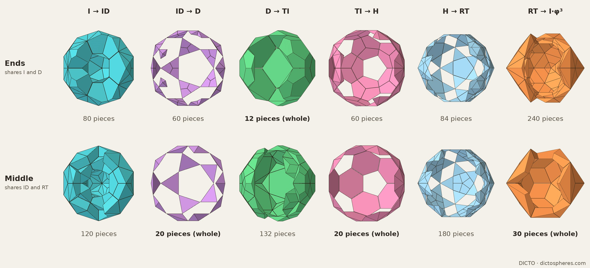
Figure 7.3. Each layer of one turn alone, a slice removed, in the ends setting (top) and the middle setting (bottom), with its exact number of interlock pieces (Table 3). Layers are scaled to fit their tiles. The two settings leave alternate layers whole. Drawn from exact pieces.
4. Interlock set 1 (Dharma-Ends): 536 pieces, 12 kinds
Several original layers lie wholly inside one reversed layer, so their pieces pass through unchanged; the cutting happens mainly in the outer layer, where the triacontahedron → I·φ³ roofs are cut by four reversed layers into 240 pieces.
Kind
Count
Original layer
Reversed layer
Corners
Faces (number × sides)
Volume (exact)
I1·1 12f
12
D → TI
D → ID
15
5 × 3, 7 × 5
-25/24 + 2/3√5
I1·2 TBP
60
RT → I·φ³
PD → I
5
6 × 3
145/1368 + 97/2052√5
I1·3 7f
60
I → ID
RT → D·φ³
9
3 × 3, 1 × 4, 3 × 5
83/576 − 41/2880√5
I1·4 7f
60
RT → I·φ³
D → ID
9
2 × 3, 3 × 4, 2 × 5
-11221/5184 + 15629/15552√5
I1·5 12f
12
H → RT
D → ID
15
5 × 3, 7 × 5
550235/24624 − 245243/24624√5
I1·6 7f
60
RT → I·φ³
ID → O
9
3 × 3, 1 × 4, 3 × 5
151655/32832 − 602341/295488√5
I1·7 QPy
60
RT → I·φ³
O → PD
5
4 × 3, 1 × 4
41/2592 + 55/7776√5
I1·8 PPy
60
TI → H
D → ID
6
5 × 3, 1 × 5
-11/8 + 5/8√5
I1·9 PPy
12
H → RT
ID → O
6
5 × 3, 1 × 5
-3715/162 + 1663/162√5
I1·10 Tet
60
H → RT
D → ID
4
4 × 3
-93/152 + 21/76√5
I1·11 QPy
60
ID → D
RT → D·φ³
5
4 × 3, 1 × 4
1/576 + 1/576√5
I1·12 Tet
20
I → ID
I → RT
4
4 × 3
-11/48 + 5/48√5
Table 1. Interlock set 1, the ends setting. Layers: I icosahedron, ID icosidodecahedron, D dodecahedron, TI truncated icosahedron, H Hecatodihedron, RT rhombic triacontahedron, O Ogdoecontahedron, PD pentakis dodecahedron; φ³ the next turn out. Corners and faces from the cleaned float corners; volumes exact. Pieces numbered largest first; shapes: 12f and 7f give the number of faces; TBP triangular bipyramid, PPy pentagonal pyramid, QPy four-sided pyramid, Tet tetrahedron.
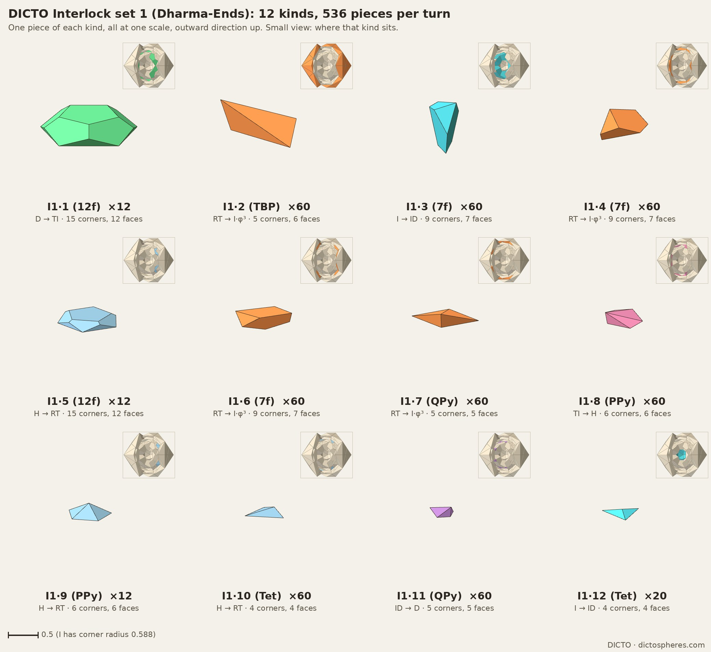
Figure 7.4. The parts of Interlock set 1 (Dharma-Ends): one piece of each of the 12 kinds, all at one scale with a scale bar, outward direction up, with its count; the small view shows where that kind sits (in colour, the rest pale). Drawn from exact pieces; exact volumes in Table 1.
5. Interlock set 2 (Dharma-Middle): 502 pieces, 11 kinds
At ρ² = 3φ²/4 the reversed cycle is exactly 3 times its ends-setting size, so its pieces are the ends pieces scaled by 3. Here the outer roofs pass through whole: the 30 roofs (RT → I·φ³), the 20 truncated icosahedron → Hecatodihedron pyramids and the 20 icosidodecahedron → dodecahedron tetrahedra lie each inside one reversed piece. The cutting moves inward: the dodecahedron → truncated icosahedron columns are cut into 132 pieces, the Hecatodihedron → triacontahedron layer into 180 and the innermost layer, icosahedron → icosidodecahedron, into 120.
Kind
Count
Original layer
Reversed layer
Corners
Faces (number × sides)
Volume (exact)
I2·1 7f
30
RT → I·φ³
RT → D·φ³
8
2 × 3, 5 × 4
371/72 − 47/24√5
I2·2 11f
12
D → TI
ID → O
11
5 × 3, 5 × 4, 1 × 5
625/10944 + 289/10944√5
I2·3 7f
60
I → ID
D → ID
8
2 × 3, 5 × 4
-1585/576 + 3643/2880√5
I2·4 HPy
20
TI → H
I → RT
7
6 × 3, 1 × 6
-33/8 + 15/8√5
I2·5 7f
60
D → TI
PD → I
8
2 × 3, 5 × 4
-101/456 + 12/95√5
I2·6 6f
60
I → ID
RT → D·φ³
7
3 × 3, 2 × 4, 1 × 5
203/72 − 56/45√5
I2·7 Tet
20
ID → D
O → PD
4
4 × 3
1/192 + 1/192√5
I2·8 QPy
60
H → RT
PD → I
5
4 × 3, 1 × 4
-1/24 + 1/40√5
I2·9 Tet
60
H → RT
I → RT
4
4 × 3
-93/152 + 21/76√5
I2·10 Tet
60
D → TI
O → PD
4
4 × 3
1/576 + 1/576√5
I2·11 Tet
60
H → RT
I → RT
4
4 × 3
-23/304 + 11/304√5
Table 2. Interlock set 2, the middle setting, as Table 1. Further shapes: 11f and 6f give the number of faces; HPy hexagonal pyramid.
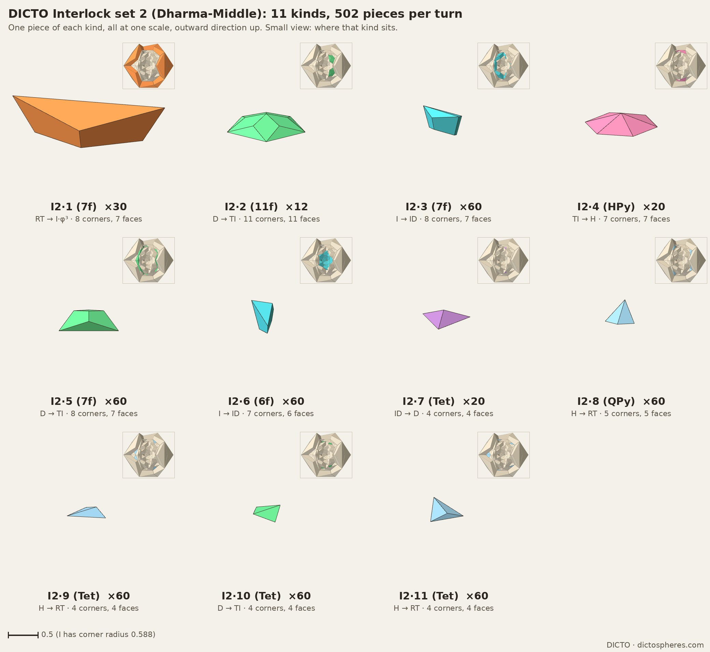
Figure 7.5. The parts of Interlock set 2 (Dharma-Middle), as Figure 7.4; exact volumes in Table 2. The 20 ID → D tetrahedra (I2·7) lie hidden behind other pieces in the small view.
6. What the toggle moves
Where the cycles cut each other. The two settings leave alternate layers whole: the ends setting only the dodecahedron columns, the middle setting the tetrahedra, the pyramids and the roofs. The innermost layer is cut in both, harder in the middle setting (Table 3, Figure 7.3).
One piece in both. The 60 small Hecatodihedron → triacontahedron tetrahedra, (−93/152 + 21√5/76) each, pass through whole in both settings (I1·10 = I2·9).
Equal volume, different shape. I1·11 and I2·10 both have volume (1 + √5)/576 but different shapes (5 and 4 corners).
Original layer
Pieces before cutting
Ends setting
Middle setting
I → ID
20
80
120
ID → D
20
60
20 (whole)
D → TI
12
12 (whole)
132
TI → H
20
60
20 (whole)
H → RT
72
84
180
RT → I·φ³
30
240
30 (whole)
One turn
174
536
502
Table 3. Interlock pieces per original layer, per turn (exact counts, from Tables 1 and 2).
7. Relation to known work, and status
Known and credited: nested solids separated by spheres (Kepler 1596; here a sphere instead reciprocates one nest into another); polar reciprocation and the reversal of inclusion (convex geometry; Firsching 2015). Reciprocating in the midsphere gives the classical compound in which the icosahedron and dodecahedron cross; here the sphere is chosen so that they nest and coincide with stations. Further: the common refinement of two convex dissections by pairwise intersection, a standard construction; nested icosahedral shells in clusters, viruses and fullerenes (Takakura et al. 2007; Dechant, Wardman, Keef and Twarock 2014; Twarock, Valiunas and Zappa 2015); the cone cut (Kion construction, Theaetetus). Not found in our reference library and web searches (16 October 2026; printed catalogues not read): a cycle of nested solids and its polar reversal placed in one space; the two exact toggle settings and the proof that they exclude each other; the exact interlock dissections and their kinds.
Chapter 8. Progenitors
From paper #34, DICTO DOI 10.5281/zenodo.23413184
The DICTO Hecatodihedron and the DICTO Ogdoecontahedron as a twin pair: on their own they never close golden; set into the Spheres of Dharma in place of the dodecahedron they close it again on φ⁹, and the cycle then holds the core and hull of two dual compounds
Abstract. The DICTO Hecatodihedron H (102 faces) and its polar, the DICTO Ogdoecontahedron O (80 faces), came out of the Spheres of Dharma, an exact cycle of icosahedral shells that repeats every φ³. DICTO proposed that the twin pair could seed a cycle of its own. Every solid here is exact in ℚ(√5), and every nesting and volume is checked with remainder 0. On their own the twins do not close golden. H, O and their classical relatives, nested tightly in every order (8,742 cycles), never return on a power of φ, and the tightest 3-cycle gains exactly 9/φ⁴ = (3/φ²)² per round: a cycle governed by 3, as in Double Vision. Set into the Spheres of Dharma with O in the dodecahedron's place, they close it again on φ⁹ in volume: I ⊂ ID ⊂ O ⊂ rTI ⊂ TI ⊂ H ⊂ jtI ⊂ RT ⊂ I·φ³. The cycle then holds the core and hull of two dual compounds, the icosahedron–dodecahedron compound (ID, RT) and the twins' own compound, the DICTO Hecatogdoecontahedron (rTI, jtI). Prior-art status is stated claim by claim in §4.
1. The question
The Spheres of Dharma (DICTO DOI: 10.5281/zenodo.23310833) nest six icosahedral solids, icosahedron ⊂ icosidodecahedron ⊂ dodecahedron ⊂ truncated icosahedron ⊂ rhombic triacontahedron ⊂ icosahedron φ³ larger, each layer filled exactly by one kind of piece. Its in-between stage between the truncated icosahedron and the triacontahedron is the DICTO Truncated-Icosahedral Hecatodihedron H (DICTO DOI: 10.5281/zenodo.23360857): 12 pentagons, 30 rhombi and 60 triangles, the joined truncated icosahedron jtI with its 12 five-fold corners cut flat (Version 2 of that paper). Its polar is the DICTO Ogdoecontahedron O (DICTO DOI: 10.5281/zenodo.23404688): 20 regular hexagons and 60 kites, the canonical pentakis dodecahedron with its 20 three-fold corners cut flat. Both are derived from classical solids; neither is in the classical catalogues.
DICTO's question: let H and its dual be the progenitors of a new cycle. Can they nest into an exact, endlessly repeating cycle of their own, and does it close on a power of φ, as the Spheres of Dharma do? We write I, ID, D, TI, PD, RT for the icosahedron, icosidodecahedron, dodecahedron, truncated icosahedron, pentakis dodecahedron and rhombic triacontahedron, all in the Dharma's sizes (icosahedron edge 1/φ). Figure 8.1 shows the answer found in §3.
Figure 8.1. The golden cycle with both progenitors: I ⊂ ID ⊂ O ⊂ rTI ⊂ TI ⊂ H ⊂ hull (jtI) ⊂ RT ⊂ I·φ³. Top: O at 3φ²/4, nested inside the core rTI, cutaway and a front-on cut through the centre. Middle: O at its compound size 9/4, interlocked with TI and H. Bottom: the nine stations at true scale, and the H–O compound with its common core and hull. Drawn from exact stations.
2. On their own: no golden closure
The pair. H and O nest endlessly in each other, but the round trip does not close golden. H ⊂ s·O with s = 81/8 − 27√5/8 (20 corners touch), and O ⊂ t·H with t = (170 + 2√5)/361 (12 touch). The round trip is s·t = (3375 − 1107√5)/722 ≈ 1.246, which is not a power of φ.
The quartet. Adding the truncated icosahedron (DICTO: "maybe the truncated icosahedron has a place") and its dual PD gives four solids: TI ⊂ H and O ⊂ PD touch fully, and TI ↔ PD, H ↔ O are dual pairs. Taken in every cyclic order at the least size that holds the previous solid, none of the six orders closes on a power of φ. The tightest, TI ⊂ H ⊂ O ⊂ PD ⊂ TI, gains exactly (63 − 27√5)/2 = 9/φ⁴ = (3/φ²)² per round (exact). That is an endless cycle governed by 3, not by φ. It is the same factor 3 that keeps the two toggle settings of Double Vision apart (DICTO DOI: 10.5281/zenodo.23407106).
A wider search. All 8,742 cycles through TI, H, O and PD, together with any of I, ID, D and RT (each at most once, in any order), were tried. Each solid was set at the least size that holds the previous one, and none closes on a power of φ (exact). The criterion is strict: every step is tight. The Spheres of Dharma themselves fail it, since two of their steps, I → ID and RT → I·φ³, are loose. A golden cycle through the progenitors must therefore allow loose steps.
3. A golden cycle with both progenitors (exact)
The icosidodecahedron is a common core of both progenitors. O wraps it, with its 30 corners on O's faces and each triangle of ID inside a hexagon of O. Theaetetus grows it through Cleo-Icos to H (DICTO DOI: 10.5281/zenodo.23378070). Placing O on the Dharma's own ID, at scale 3φ²/4 (the middle setting of Double Vision), gives a cycle in which every step nests exactly:
I ⊂ ID ⊂ O ⊂ rTI ⊂ TI ⊂ H ⊂ jtI ⊂ RT ⊂ I·φ³
The closure is I·φ³ / I = 38 + 17√5 = φ⁹ in volume, golden as in the Spheres of Dharma. Here rTI is the rectified truncated icosahedron and jtI its dual, the joined truncated icosahedron. Table 1 lists the contacts. O and D cross, so O takes D's place; they are alternatives, as H and 3·I are in the Dharma.
Step
Contact (exact)
I ⊂ ID
loose (0 of 12 corners on ID's faces)
ID ⊂ O
tight: all 30 corners of ID on faces of O
O ⊂ rTI
loose
rTI ⊂ TI
tight: all 90 corners of rTI on TI's surface (its edges)
TI ⊂ H
tight: all 60 corners of TI on faces of H
H ⊂ jtI
tight: all 80 corners of H on faces of jtI
jtI ⊂ RT
tight: 80 corners of jtI on faces of RT
RT ⊂ I·φ³
loose (0 of 32 corners on faces of I·φ³)
Table 1. The nine-station cycle (exact). O at 3φ²/4; rTI, the core of the H–O compound, at the size it has in the truncated icosahedron's midsphere.
Both compounds in one cycle. The cycle now holds the core and hull of two dual compounds. ID and RT are the core and hull of the icosahedron–dodecahedron compound. rTI and jtI are the core and hull of the Hecatodihedron–Ogdoecontahedron compound, which DICTO named the DICTO Hecatogdoecontahedron: H and O interlocked in the truncated icosahedron's midsphere, 182 faces and 182 corners, self-dual. Its core and hull are those of the classical truncated icosahedron–pentakis dodecahedron compound, as #28 Version 2 explains. We claim only the pairing, not the core or the hull.
4. Relation to known work, and status
Known, cited, not claimed. Nested Platonic solids go back to Kepler (1596), and nested icosahedral shells appear in virology and fullerene work (Dechant et al. 2014). The truncated icosahedron–pentakis dodecahedron compound, the rectified truncated icosahedron and its dual jtI are classical (MathWorld; Wikipedia; McCooey; Hart). H is the jtI with its five-fold corners cut flat and O the canonical pentakis dodecahedron with its three-fold corners cut flat (the Version 2 papers). Polar reciprocation is classical.
Not found, in the sources checked: a golden cycle containing H and O, or one holding the core and hull of both compounds; the tight-nesting results of §2. The name "Hecatogdoecontahedron" returns no results.
Searched (16 October 2026). Wikipedia, MathWorld, the Polytope Wiki, Klitzing, OEIS, McCooey's Visual Polyhedra, G. Hart's Virtual Polyhedra (index, compound list and the full alphabetic model list: compounds of the uniform solids with their duals, the rhombic enneacontahedron, the pentakis dodecahedron; none of the solids or cycles here), Wenninger's model lists, arXiv (nested golden shells, polar sequences), and the DICTO reference library.
Antiprism (A. Rossiter, version 0.29), run 16 October 2026: it recomputes the solids independently, and a sweep of every Conway form with up to two operators on I and D (840 forms) matches neither H nor O, while the H–O core and hull have the structures of atI and jtI.
Not read. Wenninger's Polyhedron Models and Dual Models in print; Coxeter, Cromwell and Holden in print. The Stella catalogue was not run. Every "not found" above is limited to the sources listed; the full log is in the study (SEARCH-LOG.md).
5. Conclusion
The twins do not make a golden cycle on their own. Tight nestings of H, O and their classical relatives are governed by the factor 3, as in Double Vision, and never close on a power of φ. Set into the Spheres of Dharma, with O in the dodecahedron's place, they close golden at once, on φ⁹ as the Dharma itself does. The cycle then holds the core and hull of both dual compounds, the classical icosahedron–dodecahedron one and DICTO's own. So the progenitors do not start a new cycle; they give the old one a second reading in which the dodecahedron's place is taken by its non-classical cousin. A companion paper takes up the question this leaves: where the dodecahedron goes, and what fills the cycle's two loose steps. In brief, three more stations close them, and the cycle grows to twelve: I ⊂ Cleo star ⊂ D′ ⊂ ID ⊂ O ⊂ rTI ⊂ TI ⊂ H ⊂ jtI ⊂ RT ⊂ M ⊂ I·φ³. Here D′ is the dodecahedron at two thirds, the hull of DICTO's Cleo star, and M is the DICTO Metaxyhexecontahedron. Open: a golden cycle through the twins with loose steps of a different kind, and a physical build of the nine stations.
Chapter 9. Vajrayana
From paper #35, DICTO DOI 10.5281/zenodo.23429911
The dodecahedron's return in the Cleo star, the DICTO Metaxyhexecontahedron and the DICTO Palintriacontahedron: the twelve-station golden cycle, a companion to Progenitors
Abstract. Progenitors (DICTO DOI: 10.5281/zenodo.23413184) set the DICTO Ogdoecontahedron O into the Spheres of Dharma in the dodecahedron's place and found an exact nine-station golden cycle, I ⊂ ID ⊂ O ⊂ rTI ⊂ TI ⊂ H ⊂ jtI ⊂ RT ⊂ I·φ³, closing on φ⁹ in volume. This companion asks where the dodecahedron went and what fills the cycle's loose steps. Every solid here is exact in ℚ(√5), and every nesting and volume is checked with remainder 0 unless marked float. The dodecahedron returns inside the icosidodecahedron, as the hull of DICTO's Cleo star: the icosahedron's 20 Cleo-Icos with 20 more turned outward have their tips exactly at (2/3)·D, and 82 pieces of four kinds fill that dodecahedron exactly. The loose step from the rhombic triacontahedron to the next icosahedron is closed by the DICTO Metaxyhexecontahedron: the member of the dodecahedron–icosahedron hull family whose icosahedron edge is 9/φ⁴ times its dodecahedron edge. It touches both neighbours, both of its layers are a single kind of piece, and its dual closes the same step in the polar-reversed cycle. The full-height icosidodecahedron star gives a second member of the same family, the DICTO Palintriacontahedron, the rhombic triacontahedron turned inside out. The cycle grows to twelve stations; the loose step O ⊂ rTI stays open. Prior-art status is stated claim by claim in §5.
1. Where Progenitors left off
The DICTO Truncated-Icosahedral Hecatodihedron H (DICTO DOI: 10.5281/zenodo.23360857), 102 faces, and its polar, the DICTO Ogdoecontahedron O (DICTO DOI: 10.5281/zenodo.23404688), 80 faces, both came out of the Spheres of Dharma (DICTO DOI: 10.5281/zenodo.23310833). Progenitors (DICTO DOI: 10.5281/zenodo.23413184) showed that on their own the pair never close golden, but that with O on the Dharma's own icosidodecahedron at scale 3φ²/4, in the dodecahedron's place, every step of the following cycle nests exactly and the cycle closes on I·φ³ / I = 38 + 17√5 = φ⁹ in volume:
I ⊂ ID ⊂ O ⊂ rTI ⊂ TI ⊂ H ⊂ jtI ⊂ RT ⊂ I·φ³
We write I, ID, D, TI, PD, RT for the icosahedron, icosidodecahedron, dodecahedron, truncated icosahedron, pentakis dodecahedron and rhombic triacontahedron, all in the Dharma's sizes (icosahedron edge 1/φ); rTI is the rectified truncated icosahedron and jtI its dual. Table 1 repeats the contacts. Three steps are loose: I ⊂ ID, O ⊂ rTI and RT ⊂ I·φ³. The dodecahedron itself is gone, since O and D cross. This chapter brings the dodecahedron back in the first loose step (§2) and closes the last one with a new solid (§3); the middle one stays open.
Step
Contact (exact)
I ⊂ ID
loose (0 of 12 corners on ID's faces)
ID ⊂ O
tight: all 30 corners of ID on faces of O
O ⊂ rTI
loose
rTI ⊂ TI
tight: all 90 corners of rTI on TI's surface (its edges)
TI ⊂ H
tight: all 60 corners of TI on faces of H
H ⊂ jtI
tight: all 80 corners of H on faces of jtI
jtI ⊂ RT
tight: 80 corners of jtI on faces of RT
RT ⊂ I·φ³
loose (0 of 32 corners on faces of I·φ³)
Table 1. The nine-station cycle of Progenitors (exact), repeated from its Table 1.
2. The dodecahedron returns: the Cleo star (exact)
With O in D's place, DICTO felt that "the dodecahedron should be in there too". The Dharma icosahedron is 20 Cleo-Icos, pyramids from the centre over its faces (Theaetetus, DICTO DOI: 10.5281/zenodo.23378070). Turning 20 more outward as spikes makes the Cleo star (volume 2·I). Its 20 tips are exactly the corners of (2/3)·D, the Dharma dodecahedron at two thirds. That the tips form a dodecahedron is elementary, since they lie on the three-fold axes at one radius; the size is the Dharma-specific fact. This dodecahedron D′ fits loosely inside ID and inside O, so the dodecahedron returns in the old loose step I → ID:
I ⊂ Cleo star ⊂ D′ ⊂ ID ⊂ O ⊂ rTI ⊂ TI ⊂ H ⊂ jtI ⊂ RT ⊂ I·φ³
D′ filled exactly. The gap D′ − star is one connected region (float flood fill). DICTO placed 12 inward pentagonal pyramids in it, one on each face of D′ with its apex at the icosahedron corner below. What is left is 30 valley tetrahedra, one along each edge of I, with corners at the edge's two ends and at the tips of the two spikes beside it. All 30 are one shape. The 82 pieces of four kinds fill D′ with remainder 0 (Table 2, Figure 9.1). The Cleo star is not a stellation of the icosahedron: its spike faces lie in no face plane of I. It is the triakis icosahedron (a Kleetope of I) at one particular height.
Piece
Count
Volume in all (exact)
Cleo-Ico, core (the icosahedron)
20
−5/12 + 5√5/12
Cleo-Ico, spike
20
−5/12 + 5√5/12
inward pentagonal pyramid
12
5/9 − √5/27
valley tetrahedron
30
25/18 − 5√5/18
D′ = (2/3)·D
82
10/9 + 14√5/27 (remainder 0)
Table 2. The Cleo star build of D′.
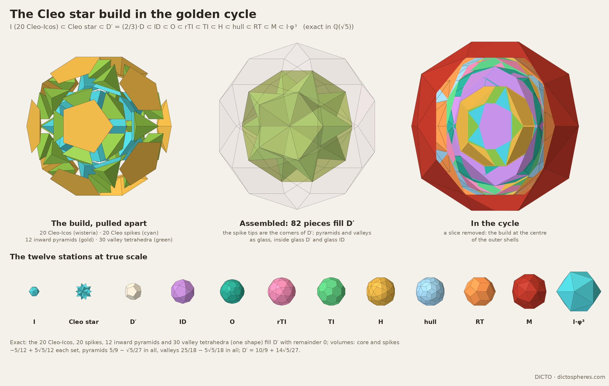
Figure 9.1. The Cleo star build: pulled apart, assembled inside glass D′ and ID, and at the centre of the cycle; the twelve stations at true scale. Drawn from exact pieces.
3. The last loose step: the DICTO Metaxyhexecontahedron (exact)
In the Spheres of Dharma the triacontahedron reaches only 0.812 of the way to the next icosahedron's faces. Looking at the cycle, DICTO judged that one more solid should fit there. Among the convex icosahedral solids, none touches both RT and I·φ³ (Table 3, float). The dodecahedron–icosahedron hull family, however, contains exactly one member that does. It is the convex hull of the RT's 12 five-fold corners and the 20 face centres of I·φ³. DICTO named it the DICTO Metaxyhexecontahedron M, from the Greek metaxý, "in-between", and 60 faces.
Shape. 32 corners (12 five-fold, 20 six-fold), 90 edges and 60 congruent isosceles triangles: the same combinatorics as the pentakis dodecahedron. Its icosahedron edge is exactly 9/φ⁴ times its dodecahedron edge (squared, 81(47 − 21√5)/2 = 81/φ⁸), ≈ 1.31308. The family is fully symmetric for ratios from (5 + 3√5)/10 to φ. Its named members are the Catalan pentakis dodecahedron, at 3(7 + 5√5)/38 ≈ 1.435, and the DICTO Palintriacontahedron of §4, at 3/√5 ≈ 1.342.
Fit. The RT lies inside M, and its 12 five-fold corners are M's own. M lies inside I·φ³, and its 20 three-fold corners sit on the centres of I·φ³'s faces. In Dharma units the squared corner radii are 45/8 − 9√5/8 and 47/24 + 7√5/8. M has an insphere (all 60 faces at one distance) but no midsphere, because its two kinds of edge sit at different distances.
Pieces. Cut as in Inverted Shells (one piece per face of the inner solid, cut by the cone over that face), both new layers are a single kind of piece. RT → M gives 30 pieces, each with 6 corners (a rhombus and 6 triangles) and volume 353/72 − 149√5/72. M → I·φ³ gives 60 pieces, each with 5 corners and 6 triangles (a triangular bipyramid shape) and volume 1/8 + √5/18. vol M = 145/12 + 65√5/12, and M takes 0.356 of the step's volume.
Its dual. Because M has an insphere, its polar has all 60 corners on one sphere. It has 12 regular pentagons and 20 hexagons whose sides alternate in the ratio (14 + 9√5)/11 ≈ 3.102: an icosahedron cut by a dodecahedron, a truncated icosahedron of non-Archimedean depth. In the ends sphere of Double Vision (ρ² = φ²/4), it sits between the polars of I·φ³ and RT. All 60 of its corners lie on the faces of polar(RT), and the 20 corners of polar(I·φ³) touch its hexagons. So it closes the matching loose step of the reversed cycle (exact).
An observation. 9/φ⁴ is also the exact gain per round of the tightest progenitor 3-cycle in Progenitors (§2 there). We note the coincidence without an explanation.
Solid, just big enough to hold RT
Reach toward I·φ³'s faces (float)
Hecatodihedron
0.9948
icosidodecahedron; Palintriacontahedron
0.9787
deltoidal hexecontahedron
0.9443
truncated dodecahedron
0.9325
pentakis dodecahedron
0.9149
rhombicosidodecahedron
0.8754
truncated icosahedron
0.8682
dodecahedron; triakis icosahedron
too big
DICTO Metaxyhexecontahedron
1 (exact)
Table 3. Candidates for the RT → I·φ³ step. 1 means touching both neighbours.
Figure 9.2. The twelve-station cycle, a slice facing the viewer removed: from the Cleo star in D′ at the centre, through ID, O (teal), rTI, TI, H, jtI and RT (orange), to the DICTO Metaxyhexecontahedron (brick red) and the next icosahedron I·φ³ (glass). The 60 pieces of one kind that fill M → I·φ³ are shown (sand), drawn a little apart. Drawn from exact stations and pieces.
4. The seam: the DICTO Palintriacontahedron
DICTO also flipped the icosidodecahedron's own central pyramids out at full height ("shortening feels like cheating; one more solid is needed"). The hull of the tips is the DICTO Palintriacontahedron X (Greek pálin, back): 32 corners and 60 faces, each half a rhombic-dodecahedron rhombus (cos² of the face angles 1/9, 1/3, 1/3). Its icosahedron edge is exactly 3/√5 times its dodecahedron edge (squared, 9/5). X is the rhombic triacontahedron turned inside out: it has the same 32 axes, with the reciprocal radius ratio. It belongs to the same family as M. As a float observation only: X lies inside the next turn's D′, and 99.46% of its volume (20,000 sample points) lies inside the next icosahedron's Cleo star, so it bridges one turn to the next. As a further float observation, the first stellation of the icosahedron puts its tips at 3/√5 times the face distance, the same number. Figure 9.3.
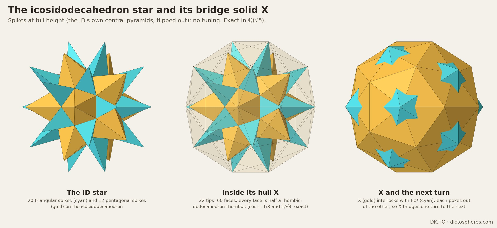
Figure 9.3. The icosidodecahedron star and its hull X, the DICTO Palintriacontahedron; X interlocked with the next icosahedron. Drawn from exact corners.
5. Relation to known work, and status
Known, cited, not claimed. Nested Platonic solids go back to Kepler (1596), and nested icosahedral shells appear in virology and fullerene work (Dechant et al. 2014). The pentakis dodecahedron as the convex hull of a dodecahedron and an icosahedron, and its fully symmetric range, are on the Polytope Wiki. The Catalan member and the biscribed member are listed by MathWorld and McCooey. The truncated icosahedron–pentakis dodecahedron compound, the rectified truncated icosahedron and its dual jtI are classical (MathWorld; Wikipedia; McCooey). The Kleetope construction is from Grünbaum. The Cleo-Icos are Hypsicles' central pyramids (Euclid, Elements, "Book XIV"). Polar reciprocation is classical.
Not found, in the sources checked: the exact four-kind filling of (2/3)·D by the Cleo star with inward pyramids and valley tetrahedra was not found either. The Metaxyhexecontahedron and the Palintriacontahedron were not found as named members of the hull family, nor the 9/φ⁴ and 3/√5 members as distinguished. The names "Metaxyhexecontahedron" and "Palintriacontahedron" return no results. (The golden cycle itself and the H–O compound are claimed, with their search, in Progenitors.)
Searched (16 October 2026). Wikipedia, MathWorld, the Polytope Wiki, Klitzing, OEIS, McCooey's Visual Polyhedra, G. Hart's Virtual Polyhedra (index, compound list and the full alphabetic model list: compounds of the uniform solids with their duals, the rhombic enneacontahedron, the pentakis dodecahedron; none of the solids or cycles here), Wenninger's model lists, Wassell and Benito (2012) and Bridges 2017 (dual-pair edge ratios; the former found the dodecahedron–icosahedron ratio φ : 3 absent from the literature until 2012), arXiv (nested golden shells, polar sequences, dodecahedral dissections), and the DICTO reference library.
Antiprism (A. Rossiter, version 0.29), run 16 October 2026: it recomputes the solids independently, and a sweep of every Conway form with up to two operators on I and D (840 forms) matches neither H nor O, while M, X and M's dual have the structures stated here.
Not read. Wenninger's Polyhedron Models and Dual Models in print; Coxeter, Cromwell and Holden in print. The Stella catalogue was not run. Every "not found" above is limited to the sources listed; the full log is in the study (SEARCH-LOG.md).
6. Conclusion
Progenitors put the DICTO Ogdoecontahedron in the dodecahedron's place and closed the Spheres of Dharma golden again. Nothing is lost by that. The dodecahedron comes back as the hull of the Cleo star, exactly at two thirds, inside the first loose step, and is filled by 82 pieces of four kinds. The step the Dharma left open, from the triacontahedron to the next icosahedron, is closed by a single solid that touches both sides, the DICTO Metaxyhexecontahedron; both of its layers are a single kind of piece, and its dual does the same for the reversed cycle. The cycle grows to twelve stations, I ⊂ Cleo star ⊂ D′ ⊂ ID ⊂ O ⊂ rTI ⊂ TI ⊂ H ⊂ jtI ⊂ RT ⊂ M ⊂ I·φ³, and repeats; the full-height icosidodecahedron star adds the DICTO Palintriacontahedron, a second member of M's family, as a bridge between turns (float). Open: whether the loose step O ⊂ rTI has a similar closing solid; the 9/φ⁴ coincidence; and a physical build of the Metaxyhexecontahedron's two layers.
Part III. The rule that grows the shells
Chapter 10. Universal PiTet
From paper #38, DICTO DOI 10.5281/zenodo.23463305
The DICTO PiTet Proposition: an endless, self-polar four-solid cycle grown from the Cleo star, ID → RT → DICTO GTI → DICTO FPD → ID × 10/φ⁴, with exact shell pieces, five-sided Vajras and hexagonal Cleos
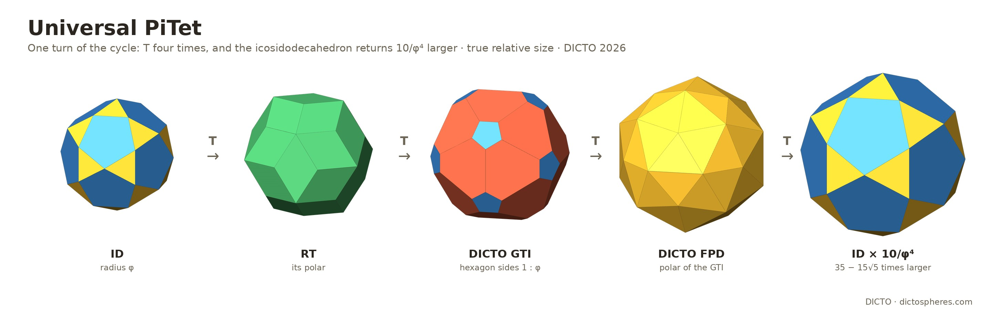
Abstract. DICTO specified a five-fold version of the octet: spherical shells grown outward from the Cleo star, the same pattern each time with different solids, triangles and pyramids staying constant (hence the name PiTet: Pi for the spherical progression, Tet for the triangles). We give a rule that does this and prove, in exact arithmetic in ℚ(√5), what it produces. Let T take a convex solid with corners v to the solid {x : v·x ≤ v·v for every corner v}: each new face passes through a corner of the last solid at right angles to it. Starting from the icosidodecahedron (ID), T gives the rhombic triacontahedron (RT), then the DICTO GTI (Golden Truncated Icosahedron: hexagon sides 1 : φ), then the DICTO FPD (Flat Pentakis Dodecahedron), and then the ID again, exactly 10/φ⁴ = 35 − 15√5 times larger; the cycle therefore repeats without end. Each solid lies in the next, each shell is filled by congruent pieces of one or two kinds (exact volumes), and the whole chain is its own polar about the GTI's circumsphere. Below the cycle, the Cleo star (82 pieces) and 12 twisted frusta (Monkey Staff B) close the ID; the pieces on one five-fold axis join into a convex five-sided Vajra, and the DICTO Ogdoecontahedron fits between the ID and the RT with 20 pure hexagonal Cleos. Every claim is checked exactly.
1. The idea
Nested polyhedra with one centre are old: Kepler's Mysterium cosmographicum [14] set the Platonic solids between concentric spheres, and Pacioli and Leonardo drew them as skeletons [15]. They are also physical: the atomic clusters of icosahedral quasicrystals are concentric shells on the same solids, a dodecahedron inside an icosahedron and icosidodecahedron, or an icosahedron inside a dodecahedron [16], and Mackay's dense icosahedral packing of equal spheres grows in icosahedral shells [17]. The octet truss fills flat space with tetrahedra and octahedra [18]. Curved space can do it with tetrahedra alone (the 600-cell [4, 7]), and seen from one vertex the 600-cell's shells begin icosahedron, dodecahedron, icosahedron, icosidodecahedron [19]. DICTO's idea was to build a five-fold, spherical version in our own space: start from the Cleo star (the icosahedron as 20 Cleo-Icos with 20 more turned out as spikes, DICTO DOI: 10.5281/zenodo.23378070), and grow outward shell by shell, the same pattern each time with different solids, with multi-sided Vajras in the place of the octet's octahedra and kinds of CLEO and FUJI among the pieces. He observed that triangles are the true constant: in every shell built here, every face where two pieces meet is a triangle, and pentagons, hexagons and rhombi appear only on the shells' surfaces.
2. The rule and the DICTO PiTet Proposition
The rule. For a convex solid S with corners v, let T(S) = {x : v·x ≤ v·v for all corners v of S}. Each face of T(S) passes through a corner of S, at right angles to the line from the centre to that corner, so the corners of S touch the faces of T(S) ("points meeting", DICTO). When all the corners of S lie on one sphere, T is ordinary polar reciprocation about that sphere; when they lie at several radii it is not, and that difference is what drives the cycle. The rule needs no square roots, so everything below stays in ℚ(√5). In the plane the same construction about a point is classical: the antipedal polygon, whose sides pass through the vertices at right angles to the lines from the point; T is its three-dimensional form about the centre (see §6) [26, 27].
The DICTO PiTet Proposition. Let ID be the icosidodecahedron of circumradius φ. Then (i) T(ID) is the rhombic triacontahedron RT, T(RT) is the DICTO GTI, T(GTI) is the DICTO FPD, and T(FPD) = (10/φ⁴)·ID exactly; hence T4n(ID) = (10/φ⁴)n·ID for every n, since T commutes with scaling. (ii) Each solid lies inside the next. (iii) Each shell between consecutive solids is filled exactly by one piece per face of the inner solid (the cone from the centre over that face, cut by the outer solid), the pieces falling into one or two congruence classes (Table 2). (iv) The chain is its own polar: reciprocation about the sphere of radius² 15 − 5√5 = 10/φ² (the GTI's circumsphere) swaps GTI ↔ FPD, RT ↔ ID·10/φ⁴ and ID ↔ RT·10/φ⁴.
Proof method. All coordinates are pairs of rationals a + b√5 with exact signs. Floating point is used only to guess which three faces meet at a corner; every guess is then proved exactly: each corner solves its faces and lies inside every face; every face holds at least three corners with all others inside it; every edge lies in exactly two faces and V − E + F = 2, so the corner list is complete. Congruence of pieces is proved by the 60 exact rotations of the icosahedral group; volumes are exact; the shells' sums equal their gaps with remainder exactly 0. The scripts (exact_cycle.py, exact_shells.py, exact_polar.py) run in seconds.
3. The four stations
Station
Faces
Corners (radius)
Note
ID
20 triangles, 12 pentagons
30 (φ)
start of each turn
RT
30 rhombi
12 (2RI ≈ 1.902), 20 (√3)
polar of the ID
DICTO GTI
12 regular pentagons, 20 hexagons, sides 1 : φ
60 (√10/φ ≈ 1.954)
the icosahedron cut at 1/(2+φ) of each edge, not 1/3; all corners on one sphere
DICTO FPD
60 isosceles triangles
12 (≈ 2.008), 20 (≈ 2.205)
polar of the GTI; flatter pyramids than the Catalan pentakis dodecahedron
ID·10/φ⁴
the ID again
next turn
Table 1. The stations of one turn (radii in the frame where the icosahedron has edge 1 and RI = its circumradius). The cycle alternates polar steps (from the ID and the GTI, whose corners lie on one sphere) and non-polar steps (from the RT and the FPD); the non-polar steps join the two classical dual pairs ID–RT and GTI–FPD into one cycle and fix the gain 10/φ⁴.
Figure 10.1. The four shells of one turn, each filled exactly by one piece per face of the inner solid (pale): ID → RT, RT → GTI, GTI → FPD and FPD → ID·10/φ⁴, with the pieces on the faces round one five-fold axis, one colour per kind.
Figure 10.2. The mirror of Proposition (iv): the DICTO GTI inside the DICTO FPD (glass), with the sphere through the GTI's corners (radius² 15 − 5√5). Reciprocation about this sphere swaps the two, and reflects the whole chain.
Table 2. One piece per face of the inner solid; each kind is one symmetry orbit, so its pieces are congruent; each next turn repeats them 10/φ⁴ larger. In every shell the walls between neighbouring pieces are triangles.
5. From the Cleo star to the cycle (exact)
Stage 1, the Cleo star. The icosahedron of edge 1 as 20 Cleo-Icos, 20 spikes, 12 inward pentagonal pyramids and 30 valley tetrahedra: 82 pieces filling the dodecahedron D′ of circumradius φ²/√3 exactly, with no overlap.
Stage 2, Monkey Staff B. The tightest ID round D′ has every corner of D′ exactly at the centre of one of its triangles. The gap is filled by 12 congruent twisted frusta, DICTO's Monkey Staff B (the D′ pentagon below, the ID's pentagon above turned 36°, ten triangles round the side), each of volume (145 + 37√5)/648.
Stage 3 and the five-sided Vajra. The ID → RT shell can also be cut into 12 five-sided and 20 three-sided pyramids and 60 valley tetrahedra (92 pieces, exact, no overlap). (Version 1 called the three-sided pyramid DICTO's CLEO. A corner-by-corner shape test shows it is not: it has a lower point, about 2.17 times its base radius high against CLEO's φ² ≈ 2.618.) On each five-fold axis the Cleo star's inward pyramid, Monkey Staff B and the outward five-sided pyramid join into one convex double-pointed piece, a five-sided Vajra of volume 55/108 + 5√5/36, reaching from the icosahedron's corner to the RT's.
Hexagonal Cleos. The DICTO Ogdoecontahedron (OG; DICTO DOI: 10.5281/zenodo.23404688) fits exactly between the ID and the RT: at this size its corners are the ID's 30 corners, the 60 points 2c − v (v a corner of an ID triangle, c its centre) and 12 apexes, and its 20 regular hexagons lie in the ID's triangle planes, each centred on a corner of D′. ID → OG is filled by 12 congruent pieces; OG → RT by 20 pure hexagonal Cleos (regular hexagon base, apex at the RT's three-fold corner, each 1/4 − √5/12), 60 kite pyramids from the RT's five-fold corners (each 1/76 + √5/684) and 120 tetrahedra (each 1/24 − √5/72), all exact, with no overlap.
Figure 10.3. From the Cleo star to the cycle. Top: stage 1, the Cleo star in D′ (glass); stage 2, Monkey Staff B on D′; stage 3, the ID → RT pyramids with the valley tetrahedra on one side. Bottom: the 12 ID → OG pieces; OG → RT, the hexagonal Cleos (yellow) and kite pyramids (teal) with the tetrahedra on one side; six of the twelve five-sided Vajras on the icosahedron.
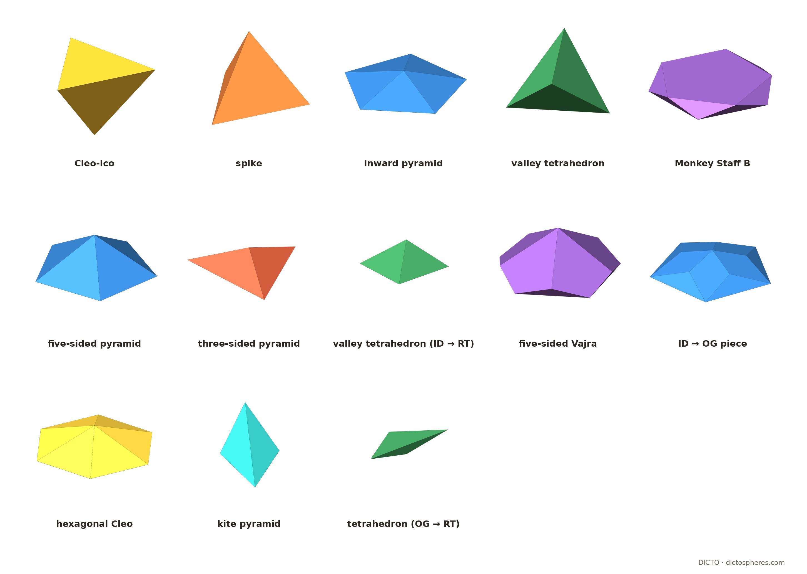
Figure 10.4. One piece of each kind, each to its own scale, coloured as in Figure 10.3.
6. Prior art and what is claimed
Endless shells round a pyramid core. The closest prior art we found is Bergman's continuous spherical truss [1]: an icosahedral nucleus of twenty tetrahedral pyramids surrounded by an endless sequence of space-filling icosahedral-spherical tetrahedron–octahedron layers of equal thickness, every layer of the same kind. The idea of a pyramid core with endless octet-like spherical shells is therefore not new, and we do not claim it. Lalvani [6] built icosahedral space structures from polygonal members along the two-fold axes, periodic or not, without a centre.
Central icosahedral fillings. Kramer [2] filled space round a centre with icosahedral symmetry using seven convex cells that pack into a dodecahedron and into copies of themselves τ³ larger [20]; Mosseri and Sadoc reduced the cells to four [20, 24], and two of those are DICTO's AXE and CLEO [11, 21]. That growth is a golden self-similar inflation; the UP gain 10/φ⁴ ≈ 1.459 is not a power of φ, and UP's shells are four different solids, not copies of one.
Duals, reciprocation and the stations. The ID and RT are a classical dual pair [4, 5]; Hart's canonical polyhedra make any dual pair meet at a common midsphere [3], and plain reciprocation has period 2. Truncated icosahedra with two edge lengths arise as orbits of the icosahedral group [19, 22]; the DICTO GTI is the member whose hexagon sides are in the ratio 1 : φ, and the DICTO FPD is its polar, a pentakis dodecahedron flatter than the Catalan one. What is claimed is these golden proportions as forced by the rule; their faces are not regular, but they are convex, planar, fully icosahedral and exact. The RT's stellations [23] and the Kepler–Poinsot solids [4] belong to the taller version of §7.
The rule T (added in Version 3). T is the three-dimensional form of the antipedal construction of plane geometry, and its reverse, whose corners are the feet of the perpendiculars from the centre to the faces, is the “face pedal polyhedron” that Smarandache posed as an open problem in 2010 [26]; iterated pedal and antipedal triangles are studied in [27]. A later search for a companion paper found these; Versions 1 and 2 reported no source for T. We found no study of T for polyhedra, of its iteration, or of the cycle below.
Not found. In the sources checked (the full text of the 87 library sources listed in the appendix, and web searches on 19 October 2026 for iterated reciprocation, nested icosahedral shells, and the four stations in sequence) we did not find the rule T applied to polyhedra, the four-step cycle with gain 10/φ⁴, its self-polarity about the GTI's circumsphere, the shell pieces, Monkey Staff B, the five-sided Vajra or the hexagonal Cleos in OG hexagons.
7. Further work
The same rule run outward from the OG gives the DICTO KRE, PHE, TPP and DPHP, which nest only as far as the TPP (to be reported separately). A taller version with true Kepler–Poinsot spikes (the great and small stellated dodecahedra alternating, gain φ³ a turn) is being studied, following DICTO's "think stellation, think Gaudí". Twelve OGs packed freely round one show no symmetry at all (float search), consistent with the geometrical frustration of icosahedral order in flat space [7, 25] that the shells sidestep.
Chapter 11. The DICTO OG Family: Four Steps Up and Four Down
From paper #39, DICTO DOI 10.5281/zenodo.23488944
Eight new icosahedral solids grown outward and inward from the DICTO Ogdoecontahedron by one rule and its reverse, exact in ℚ(√5), with the shells between them and where the nesting breaks
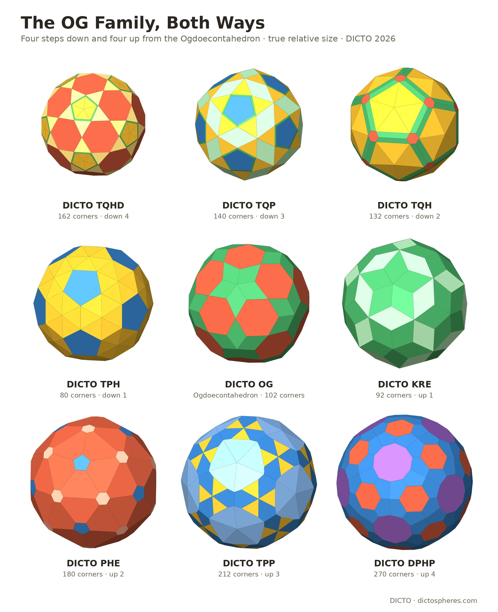
Abstract. In Universal PiTet a single rule T builds each solid from the last: every corner v of a solid S gives the face plane v·x = v·v, through v and at right angles to the line from the centre, and T(S) is the solid these planes bound. Started at the icosidodecahedron it closes into a four-step cycle. DICTO proposed running it from the DICTO Ogdoecontahedron (OG), and also running it the other way. The reverse step P takes as new corners the foot points of S's face planes, the points of those planes nearest the centre. From the OG, four steps of T give four solids with 92, 180, 212 and 270 corners, the DICTO KRE, PHE, TPP and DPHP, and four steps of P give four with 80, 132, 140 and 162 corners, the DICTO TPH, TQH, TQP and TQHD. All eight are proved exactly in ℚ(√5), each with the full icosahedral symmetry, and each step of P is undone exactly by T. Several have regular faces: 12 regular pentagons (PHE, TPH, TQP), 20 regular hexagons (PHE, DPHP, TQH, TQHD); the KRE has 30 rhombi and 60 kites. The family does not cycle. It nests as shells for three steps up, OG ⊂ KRE ⊂ PHE ⊂ TPP, and two steps down, TQH ⊂ TPH ⊂ OG, and each of these shells, and also the shell TQHD ⊂ TQP, is filled exactly by one piece per face of the inner solid. Both directions then break in the same way: 60 corners of the TPP stand outside the DPHP, and 60 corners of the TQP outside the TQH. In the plane, T and P are the classical antipedal and pedal constructions; the polyhedral pedal construction was posed as an open problem in 2010. We found the eight solids in no source.
1. The rule and its reverse
Frame. As in [2]: the icosidodecahedron of circumradius φ, and the OG between it and the rhombic triacontahedron, ID ⊂ OG ⊂ RT. In this frame the OG has 102 corners (radii φ and ≈ 1.6873), 80 faces (60 kites and 20 regular hexagons) and volume (525 + 185√5)/57 ≈ 16.4679. All coordinates are pairs of rationals a + b√5 with exact signs.
The step up, T [2]: T(S) = {x : v·x ≤ v·v for every corner v of S}. The step down, P: if S has the face planes n·x = d (the centre inside, d > 0), P(S) is the convex hull of their foot points (d/n·n) n. The foot point of a face plane is the corner of P(S) whose own T-plane is that face plane, so:
T undoes P when every foot point is a corner of P(S): then T(P(S)) is bounded by exactly the face planes of S, so T(P(S)) = S. For all four downward steps this holds, and T(P(S)) = S is checked exactly.
P does not always undo T. A corner of S whose plane is not a face of T(S) is lost. From the OG, the planes of its 12 five-fold corners touch the KRE only at those corners themselves (they become the KRE's 12 five-fold corners), so the KRE has 102 − 12 = 90 faces, and P(KRE) is the hull of the OG's other 90 corners, not the OG (exact).
Proof method (as in [2]). Floating point only guesses which faces meet at a corner; each guess is proved exactly: corners solve their faces and lie inside every face; each face holds at least three corners with the others inside it; every edge lies in exactly two faces and V − E + F = 2. Symmetry is checked with the 60 exact rotations of the icosahedral group, faces are compared by exact side lengths and corner angles, and volumes are exact sums of determinants.
Table 1. The volumes of the TPP and DPHP are exact but long; they are in data/exact_upward.json. Radii are float values of exact corners.
The KRE. Its 92 corners and 90 four-sided faces are the counts of the rhombic enneacontahedron (§5), but its faces are 30 rhombi (side² 29/18 − √5/2, side ≈ 0.7022) and 60 kites, each with two sides equal to the rhombus side and two of side² (1505 + 315√5)/6498 (side ≈ 0.5831). The PHE has the face counts of the Goldberg polyhedron GP(3,0), 12 pentagons and 80 hexagons [6, 7]; here the 12 pentagons (side² 35/18 − 5√5/6) and 20 of the hexagons (side² 1/27, side √3/9) are regular, the other 60 hexagons not. The TPP has isosceles triangles and two kinds of pentagons. The DPHP is the roundest: its corner radii differ by only 0.56%. Its decagons have ten equal sides but two alternating angles, so they are not regular (exact).
120 triangles in two kinds + 60 quadrilaterals + 20 regular hexagons (200)
360
≈ 10.4208
1.3493–1.3948
Table 2. Exact volumes of the TQP and TQHD: data/exact_downward.json.
Going down, every foot point is a corner, so each solid has as many corners as the one above has faces: 80, 132, 140, 162. Going up, the corner count of the solid below is an upper bound for the faces of the one above, met at the PHE and TPP steps; the OG loses 12 (above) and the TPP 60 (§4). The downward solids leave the small golden numbers of the OG frame behind: the first step brings the prime 109 into the denominators (the TPH's pentagon side² is (4014 + 378√5)/109²), the second the prime 41. Every triangle in the family is isosceles; the regular faces are those named in the tables (exact).
4. Shells and where the nesting breaks (exact)
When one solid lies inside the next, the shell between them is filled by one piece per face of the inner solid: the cone from the centre over that face, cut off by the outer solid [2]. All eight neighbouring pairs were checked; six nest:
12 on pentagons, 60 on hexagons, 20 on regular hexagons
≈ 0.00218; ≈ 0.03805; 409/476766 ≈ 0.000858
≈ 2.32644
TPP, DPHP
not nested: 60 corners of the TPP lie outside the DPHP, by up to 0.0185
TPH ⊂ OG
120 on triangles (two mirror orbits), 12 on pentagons
≈ 0.006748; ≈ 0.06343
≈ 1.57092
TQH ⊂ TPH
60 on triangles, 60 on quadrilaterals, 20 on hexagons
≈ 0.02937; ≈ 0.007311; ≈ 0.000550
≈ 2.21176
TQP, TQH
not nested: 60 corners of the TQP lie outside the TQH, by up to 0.0058
TQHD ⊂ TQP
60 + 60 on the two kinds of triangle, 60 on quadrilaterals, 20 on hexagons
≈ 0.000016 and 0.003318; ≈ 0.000090; ≈ 0.05131
≈ 1.23162
Table 3. In every nested shell the pieces sum to the gap with remainder exactly 0, and pieces on congruent faces are congruent (one volume per symmetry orbit). Exact volumes not printed here are in data/exact_upward.json and data/exact_downward.json.
Why it breaks. Upward, T(S) contains S only if no corner w of S lies beyond another corner's plane, w·v ≤ v·v. On the TPP, whose corners lie at four radii and close together in direction, 60 corners fail this; exactly these 60 are the corners whose planes give no face of the DPHP, so the DPHP has 212 − 60 = 152 faces (exact). Going from the OG to the KRE no corner fails: the 12 lost there are the OG's five-fold corners, which become corners of the KRE. Downward, P(S) lies inside S only if every foot point falls inside its own face; 60 of the TQH's 140 face planes have their foot point outside the face, and those feet are the TQP's 60 outlying corners. So the OG family nests exactly only near the OG, OG ⊂ KRE ⊂ PHE ⊂ TPP upward and TQH ⊂ TPH ⊂ OG downward, unlike the UP cycle, whose solids nest for ever [2]. Below the break the nesting returns once (TQHD ⊂ TQP).
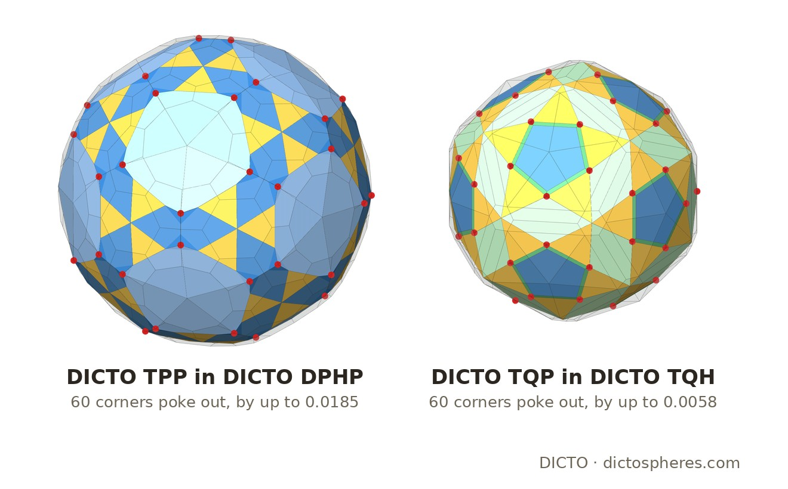
Figure 11.2. Where the nesting breaks. Left: the DICTO TPP inside the DICTO DPHP (glass); right: the DICTO TQP inside the DICTO TQH (glass). Red: the 60 corners that lie outside (front half shown).
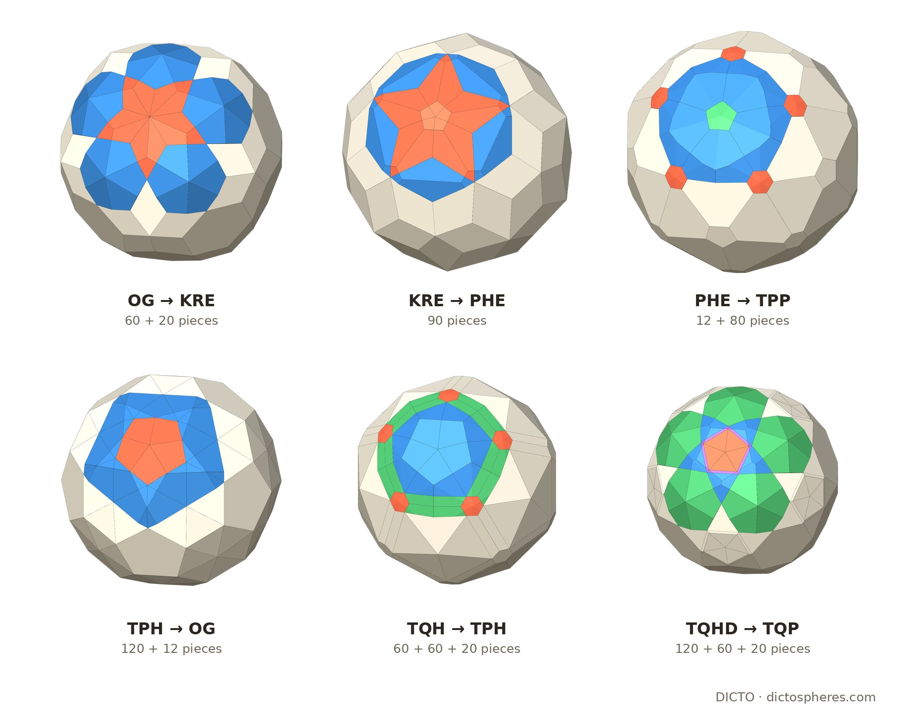
Figure 11.3. The six nested shells, each filled exactly: top, upward (OG → KRE, KRE → PHE, PHE → TPP); bottom, downward (TPH → OG, TQH → TPH, TQHD → TQP). Each shows the inner solid (pale) with its shell pieces on the faces round one five-fold axis, one colour per kind of piece.
No cycle. From the icosidodecahedron, T returns to the start, scaled by 10/φ⁴, after four steps [2]. From the OG neither direction returns within four steps: the corner counts grow both ways (92, 180, 212, 270 up; 80, 132, 140, 162 down), and the face kinds multiply. In the plane, iterated antipedal triangles tend to the equilateral triangle [5]; the DPHP is the roundest of the nine (corner radii within 0.56%, against the OG's 4.28%), but roundness does not grow at every step (the TPP: 5.13%), and we make no claim beyond four steps.
5. Prior art and what is claimed
The steps. In the plane, T and P are the classical antipedal and pedal constructions about a point: the antipedal polygon has its sides through the vertices, at right angles to the lines from the point, and the pedal polygon has its vertices at the feet of the perpendiculars to the sides [3, 4, 5]. Iterated pedal and antipedal triangles have long been studied [5]. For polyhedra Smarandache [3] proposed the “face pedal polyhedron” (feet of the perpendiculars from an interior point to the faces), which is P, and asked what properties it has; we found no study of it or of the 3-D antipedal step T. This sharpens [2], which reported no source for T: T is the 3-D form of the antipedal construction about the centre.
The KRE is of a known type: the rhombic enneacontahedron has 92 corners and 90 rhombi, 60 wide and 30 narrow, and “without the equal edge constraint, the wide rhombi are kites if limited only by the icosahedral symmetry” [8]. The KRE is such a solid; what is new is its shape, fixed exactly by the OG.
The PHE has the counts of the Goldberg polyhedron GP(3,0) [6, 7]; its regular pentagons and 20 regular hexagons with 60 irregular ones, fixed by the OG, we found nowhere.
The others. We found no polyhedron with the counts of the TPP (60 triangles + 120 pentagons, 212 corners), the DPHP (12 decagons + 20 hexagons + 120 pentagons, 270 corners), the TPH (120 triangles + 12 pentagons, 80 corners), the TQH, the TQP or the TQHD.
In the sources checked (the full text of the 80 library sources listed in the appendix, and web searches on 20 October 2026) we did not find the eight solids, their exact shapes, the shells and pieces, or the two breaks. Claimed: the eight solids as the exact steps of T and P from the OG, their exact faces and volumes, the exact shells and their pieces, and where and why the nesting breaks. Not claimed: the steps themselves (antipedal and pedal), the KRE's type, or anything beyond four steps.
6. Further work
Short papers on single solids of the family, after this one.
The family in the Kaleidohedra app, with the breaks shown as a feature (the TPP's corners through the DPHP).
Steps beyond four, which need exact arithmetic: float cannot be trusted there, as nearly coplanar faces merge or split.
Chapter 12. DICTO Kyushindo Cores
From paper #43, DICTO DOI 10.5281/zenodo.23532013
Towers and spires round exact cores in Fibonacci beats: the DICTO Cleo Towers, the DICTO Polar Cleo Towers, the OG core of 80 Aktis, the OTT core of 38 rays (Oktaktis, Triaktis and Tetraktis), and the OG turned out
Abstract. The main theorem: every convex polyhedron S with icosahedral rotational symmetry lies inside (15 − 6√5)·P(S), and so inside φ·P(S), where P(S) is the hull of the foot points of S's face planes (Theorem 2, sharp; from a general containment bound, Theorem 1). Hence DICTO's OG turned out, which flips the 80 face pyramids (Aktis) of the DICTO Ogdoecontahedron (OG) outward at 1/φ of their height and takes the hull, beat after beat, is exactly φk times the k-th solid of the OG's downward family [2] at beat k and is nested for every k (Corollary 1), although the downward family itself is not: its first break, TQH → TQP, is caused exactly by the 30 ribbons of the TQH, trapezoid pairs whose foot points fall outside their faces (Proposition 1). Reciprocation exchanges the two steps, polar(P(S)) = T(polar S) (Lemma 3), so the polar of the OG turned out is the Universal PiTet sequence of the DICTO Hecatodihedron, shrinking inward and nested for every k. Reciprocation about the sphere of radius² 15 − 5√5 maps beat k of the Universal PiTet rule [1] to beat 5 − k (Theorem 3). With a lemma that every shell splits into towers, congruent within each symmetry orbit, these give, exactly in ℚ(√5): the DICTO Cleo Towers (shells of 1, 1, 2, 3 and 5 beats round the CLEO sphere, with 32, 30, 32, 32 and 60 towers), the DICTO Polar Cleo Towers (5, 3, 2, 1 and 1 beats from the centre; 30, 32, 30, 60 and 32 towers), the towers of the OG turned out (80, 132 and 140 in 2, 3 and 3 shapes) and of its polar (80, 132 and 162 in 2, 3 and 4 shapes). We also give the OG core of 80 Aktis (20 DICTO Hex Aktis and 60 DICTO Deltoid Aktis, taking (65 − 3√5)/110 and (45 + 3√5)/110 of the OG) and the OTT core of 38 OTT rays (8 DICTO Oktaktis, each exactly a Cleo-Icos lying in a hexagon plane of the OG, 24 DICTO Triaktis and 6 DICTO Tetraktis). The boundary solids change their surface pattern from shell to shell; on the TQH the trapezoids pair into 30 ribbons on the two-fold axes, which DICTO sees as a possible new shell structure; they return exactly at down 8 and down 9; on the hulls the two-fold axis word, of period 4 from the OG to down 7, breaks at down 8 (the axis point is a listed foot point but not a hull corner), and the listed points themselves leave the period at down 10. Each result is marked as proved in general, proved for the cases built, or observed.
1. Definitions: beats, shells and towers
The beat. As in Universal PiTet [1]: for a convex solid S centred at the origin, T(S) = {x : v·x ≤ v·v for every corner v of S}. Each face of T(S) passes through a corner of S at right angles to the line from the centre. A corner v of S stays on the surface of T(S) exactly when w·v ≤ w·w for every corner w of S (otherwise the face of w cuts it off). This is not true of every convex solid, but it holds, exactly, for every station stepped from in this chapter: the ID, RT, GTI and FPD, and so for all their scaled copies, since the condition does not change with scale (it holds too for the OG, TPH, TQH and TQHD, but not for the TQP, where 60 of the 140 corners would be cut off). In the plane this is the classical antipedal construction about a point; T is its three-dimensional form [1, 10], and the reverse step P, whose corners are the foot points of S's face planes (the points of the planes nearest the centre), is Smarandache's face pedal polyhedron [9], run from the OG in [2]. DICTO calls one step a beat.
The rhythm. DICTO's idea: shells of towers as tall as possible, in a Fibonacci rhythm. Shell n fuses Fn beats, 1, 1, 2, 3, 5, so the shells end at beats 0 | 1 | 2 | 4 | 7 | 12, and the beats inside a shell are passed through, not drawn.
The towers. A shell between an inner solid A and an outer solid B ⊃ A is cut into one tower per face of A: the cone from the centre over that face, cut off by B, without the pyramid from the centre to the face (these are the shell pieces of [1]). By Lemma 1 (§2) the towers fill the shell and towers on faces of one symmetry orbit are congruent; for every shell below we also check exactly that the towers on each kind of face form one orbit of the 60 exact rotations of the icosahedral group, have one exact volume, and add up to the volume of the shell with remainder exactly 0, and that the inner and the outer solid of every shell are each fixed by all 60 rotations. Corners are proved as in [1]: floating point only guesses which faces meet at a corner; every corner then solves its faces exactly and lies inside every face, every face holds at least three corners, and every edge lies in exactly two faces with V − E + F = 2.
The OG turned out (DICTO's idea: turn the inside towers out and start a new sequence). Cut the DICTO Ogdoecontahedron (OG) [3] into its 80 face pyramids, the Aktis (§5), and flip each outward over its own face; DICTO chose the golden step: each Aktis shortened to 1/φ of its height before it is flipped, so its tip lies at φ times the foot point of its face plane (the point of the plane nearest the centre). The hull of the 80 tips is the next solid S1; on it the same is done again, one beat at a time: S0 = OG, Sk = the hull of the tips of Sk−1. The OG's downward family [2] is D0 = OG, Dk = P(Dk−1), the hull of the foot points of Dk−1's face planes; D1, …, D4 are DICTO's TPH, TQH, TQP and TQHD (Triangle-Pentagon Hecatontatriacontadihedron, Triangle-Quadrilateral-Hexagon Polyhedron, Triangle-Quadrilateral-Pentagon Polyhedron and Triangle-Quadrilateral-Hexagon Diacosihedron), and we call the next ones down 5, down 6, …. DICTO named these by their face kinds and face count (Table 9): down 5 to down 11 are the DICTO TQP-252, TQ-320, TQP-402, TQ-500, TQD-732, TQHD-662 (not the TQHD of [2]) and TQP-672; below, down k and its name are used interchangeably.
What is proved. Each result is marked: general, proved for every k or every solid of the kind stated; built, proved exactly in ℚ(√5) for every case built (the cases are listed); observed, seen in the cases built and not proved.
2. Main results
Notation: for a convex polytope S with the centre O inside, with faces ni·x ≤ hi (unit normals, hi > 0), R(S) is the largest corner distance and r(S) the smallest face distance from O; tmin(S) is the least t with S ⊂ t·P(S). By Theorem 1 below, Sk−1 ⊂ Sk in the OG turned out holds exactly when tmin(Dk−1) ≤ φ. Theorems 1 and 2 and their proofs were found with Claude (Anthropic) for DICTO's construction; the full proofs are in the study folder 2026-10-21-nesting-proof (README.md).
Theorem 1 (containment constant; general). For every convex polytope S with O inside, maxv |v|²/hP(v) ≤ tmin(S) ≤ R(S)/r(P(S)) ≤ (R(S)/r(S))², where hP(v) = max{p·v : p ∈ P(S)} is the support function of P(S) at the corner v. Equality holds throughout for the five Platonic solids (9 for the tetrahedron, 3 for the cube and octahedron, 15 − 6√5 for the dodecahedron and icosahedron). No constant works for all polytopes, not even centrally symmetric ones: thin square bipyramids have tmin = (R/r)² → ∞.
Proof. For a unit vector u let s·u be the boundary point of S in direction u, on face i; then s ≤ R and ni·u = hi/s ≥ hi/R, so P(S), which contains the foot point hini, has support at least hi(ni·u) ≥ r²/R in every direction and so contains the ball of radius r²/R; hence r(P(S)) ≥ r²/R, and S, inside the ball of radius R, lies in (R/r(P(S)))·P(S) ⊂ (R/r)²·P(S). For the lower bound, P(S) lies in the half-space v·x ≤ hP(v), so v ∈ t·P(S) needs |v|² = v·v ≤ t hP(v). For a Platonic solid all |v| = R and all hi = r, and the face normal nearest a corner makes the angle arccos(r/R) with it, so both bounds equal (R/r)². ∎
Theorem 2 (icosahedral nesting; general). Every convex polyhedron S with icosahedral rotational symmetry about O satisfies S ⊂ (15 − 6√5)·P(S) ⊂ φ·P(S); 15 − 6√5 ≈ 1.583592 < φ, since 29 < 13√5 (841 < 845), and the constant is sharp (icosahedron, dodecahedron).
Proof. By Theorem 1 it suffices that r(S) ≥ c·R(S) with c = √((5 + 2√5)/15) ≈ 0.794654, the inradius-to-circumradius ratio of the icosahedron, since then (R/r)² ≤ 1/c² = 15 − 6√5. Let v be a farthest corner. S is convex and symmetric, so it contains the hull of the orbit of v, and every face plane, with unit normal w, has distance at least maxg (g v)·w. So it is enough to show the covering lemma: for all unit u, w some rotation g of the icosahedral group I has (g u)·w ≥ c, i.e. every orbit comes within θ* = arccos c ≈ 37.377° of every direction. The reflection group Ih tiles the sphere by 120 copies of the (2, 3, 5) Möbius triangle T, with sides 20.905°, 31.717° and 37.377°; a spherical convex polygon with all vertex distances below 90° has diameter equal to its longest vertex distance, so diam T = θ*. The kite K = T ∪ sT (s the reflection in the longest side) has diagonals θ* and 2 × 18° = 36°, by the spherical sine rule (sin of the altitude = sin 20.905° sin 31.717°/sin 37.377° = sin 18° exactly), so diam K = θ* too. Move u into T by Ih (replacing the orbit by its antipodal image, which has the same covering radius) and pick h in Ih with h w in T: if h is a rotation, d(h−1u, w) ≤ θ*; otherwise h = s g with g in I, and u and g w both lie in K, so d(g−1u, w) ≤ θ*. ∎ (Checked numerically, including the 18° altitude and the minimum inradius of orbit hulls, in covering_lemma.py.)
Corollary 1 (the OG turned out; general). Sk = φk·Dk for every k, and the sequence is nested, Sk−1 ⊂ Sk, for every k; the same holds for the golden tower φkPk(S) of every icosahedrally symmetric start S. The downward family itself does not nest: Dk ⊂ Dk−1 holds only for k = 1, 2 and 4 among k ≤ 9 (Proposition 1: the feet of D8's 120 outlying triangles put D9 outside D8).
Proof. Sk = φkDk by induction: S0 = D0; if Sk−1 = φk−1Dk−1, its face planes and their foot points are those of Dk−1 scaled by φk−1, the tips are φ times these, so Sk = φkP(Dk−1) = φkDk (P commutes with scaling). Every Dk is icosahedrally symmetric, so by Theorem 2 Dk−1 ⊂ φ·P(Dk−1) = φ·Dk; multiply by φk−1. ∎ The exact margins tmin(Dk) for k = 0, …, 8 are in Table 7 (all ≤ 3/φ² ≈ 1.1459, with equality at k = 3); the nesting was also checked directly in ℚ(√5) for k ≤ 8 (nest_feet.py).
Theorem 3 (polarity of the beats; general). Let Sk be the beats of the Universal PiTet rule from the icosidodecahedron of circumradius φ (S0 = ID, S1 = RT, S2 = GTI, S3 = FPD, Sk+4 = c·Sk, c = 10/φ⁴ [1]), for all integers k. Reciprocation about the sphere of radius² ρ² = 15 − 5√5 = c·φ² maps Sk to S5−k for every k.
Proof. For k = 0, …, 5 the polar {x : v·x ≤ ρ² for every corner v of Sk} is computed exactly and equals S5−k. Polarity reverses scaling, polar(c·S) = polar(S)/c, so polar(Sk+4) = S5−k/c = S1−k, and the six cases give every k. This is the self-polarity of [1, Proposition (iv)], read beat by beat. ∎
Lemma 3 (polarity exchanges the two steps; general; elementary, but not found in the sources checked). For a convex polytope S with O inside and reciprocation about any sphere centred at O, polar(P(S)) = T(polar(S)).
Proof. Let S have faces ni·x ≤ di. Then polar(S) is the hull of the points wi = ρ²ni/di, so T(polar(S)) = {x : wi·x ≤ wi·wi} = {x : ni·x ≤ ρ²|ni|²/di}. P(S) is the hull of the foot points fi = dini/|ni|², so polar(P(S)) = {x : fi·x ≤ ρ²} = {x : ni·x ≤ ρ²|ni|²/di}, the same set. ∎
Corollary 2 (the polar of the OG turned out; general). polar(Sk) = φ−k·Tk(polar OG) = φ−k·Tk(Hecatodihedron) (the OG is the polar of the DICTO Hecatodihedron [3]; about the unit sphere, polar(OG) is a scaled Hecatodihedron, its counts and face kinds checked exactly), and these solids nest inward for every k, polar(Sk) ⊂ polar(Sk−1), since polarity reverses inclusion (Corollary 1). (Built: checked exactly for k ≤ 4, §7.)
Proof. Induction with Lemma 3 and polar(φX) = polar(X)/φ: polar(Sk) = φ−kpolar(P(Dk−1)) = φ−kT(polar(Dk−1)) = … = φ−kTk(polar(OG)). ∎
Lemma 1 (towers; general). Let A ⊂ B be convex solids with the centre inside A, both fixed by a rotation group G. The towers over the faces of A fill B ∖ A and meet only in their boundaries, and towers over faces in one G-orbit are congruent.
Proof. The cones from an inside point over the faces of A cover space and meet only in boundaries; cut by B they cover B, and removing the pyramids from the centre over the faces, which make up A, leaves B ∖ A. A rotation g in G with g(F) = F′ maps the cone over F onto the cone over F′ and fixes A and B, so it maps the tower on F onto the tower on F′. ∎
Lemma 2 (foot points; general). For a convex solid S with the centre inside it, P(S) ⊂ S exactly when the foot point of every face plane lies in its own (closed) face; a foot point outside its face lies outside S.
Proof. A face plane supports S, and S meets it exactly in the face; the foot point lies on the plane, so it is in S exactly when it is in the face. P(S) is the hull of the foot points, and lies in the convex S exactly when all of them do. ∎
Proposition 1 (the ribbons and the break; built). On the OG and the TPH every foot point lies inside its face, so TPH ⊂ OG and TQH ⊂ TPH. On the TQH the foot points of the 60 trapezoids, the 30 ribbons of §8, lie outside their faces and all others inside; by Lemma 2 the TQP is not inside the TQH, and its 60 corners from those feet are the ones standing outside, as found in [2]. On the TQP the feet of the 60 triangles lie on the edges of their faces and all others inside, so TQHD ⊂ TQP. Further down the feet of other faces fall outside (the 60 trapezoids of the TQHD, which lie in rings of five, 60 four-sided faces of down 5, 180 triangles of down 6, 240 of down 7 and 120 of down 8), and the downward family does not nest again. So the first break of the downward family is caused exactly by the ribbons; turned out, the factor φ per beat absorbs every such break (Corollary 1). ∎ (exact: nest_feet.py)
Remark (the reverse step is not always undone). T(P(S)) = S holds when every foot point of S is a corner of P(S). For D6, D7 and D8 the reverse step fails: 60, 60 and 90 of the listed foot points of D5, D6 and D7 lie strictly inside the next hull, whose true corners number 192 of 252 (D6), 260 of 320 (D7) and 312 of 402 (D8); at D9 it holds again, all 500 listed points being corners. The tower and Corollary 1 use only the hulls and are unaffected. Face counts are not monotone either: the points listed for Dk+1 are the faces of Dk, and D10 has 662 faces against 732 for D9.
3. The DICTO Cleo Towers (Corollary 3)
The core is DICTO's CLEO sphere [7, §5.5]: the icosidodecahedron (ID), cut from its centre into 20 CLEOs [6] on its triangles and 12 pentagonal pockets. Here it has circumradius φ (edge 1), the frame of [1]. Its beats are the stations of Universal PiTet: S0 = ID, S1 = RT (rhombic triacontahedron), S2 = DICTO GTI (Golden Truncated Icosahedron), S3 = DICTO FPD (Flat Pentakis Dodecahedron), and S4 = c·ID with c = 10/φ⁴ = 35 − 15√5 ≈ 1.459: one turn of four beats returns the ID exactly c times larger (checked again here), so Sk+4 = c·Sk for every k [1].
So the five shells hold 32, 30, 32, 32 and 60 towers, 186 in all, and the solid of 12 beats is the ID again, c³ ≈ 3.11 times as wide as the core. Shells 1 and 2 are the first two shells of [1]; shells 3, 4 and 5, which fuse beats, are new. In each fused shell the towers stand on the faces of the shell's inner solid only, so the solids passed through leave no trace: shell 3, for instance, has towers on the GTI's 20 hexagons and 12 pentagons that reach to the corners of c·ID.
Figure 12.1. The DICTO Cleo Towers. The core (cream) and each shell's towers on their inner solid, drawn slightly apart, the shells alternately purple and gold; last, all five shells together with half cut away, the towers drawn apart. The labels c and c^3 are 10/φ⁴ and its cube.
4. The DICTO Polar Cleo Towers (Corollary 4)
DICTO asked what the polar of the Fibonacci shells would give. Take the sphere through the GTI's corners, radius² ρ² = 15 − 5√5 = c·φ²: 10/φ⁴ times the CLEO sphere's radius². Polar reciprocation about it takes every beat to another beat: polar(Sk) = S5−k, checked exactly for k = 0, …, 5 (ID ↔ c·RT, RT ↔ c·ID, GTI ↔ FPD; this is the self-polarity of [1, Proposition (iv)]); since polar(c·S) = polar(S)/c, it holds for every k (Theorem 3). The boundaries 0 | 1 | 2 | 4 | 7 | 12 of the Cleo Towers go to 5 | 4 | 3 | 1 | −2 | −7: read from the centre, shells of 5, 3, 2, 1 and 1 beats, the most beats deepest. The core is S−7 = RT/c², which cuts from its centre into 30 rhombic rays.
The polar shells hold 30, 32, 30, 60 and 32 towers, 184 in all. Shell 4 is the last shell of [1]. Shell 5 is the polar image of the Cleo Towers' first shell and, because polarity swaps the ID and the RT, it is that same shell c times larger: its towers are those of the Cleo Towers' shell 1 (Table 1, Appendix A), scaled by c (volumes by c³).
Figure 12.2. The DICTO Polar Cleo Towers. The core, the rhombic triacontahedron RT/c² cut into 30 rhombic rays (cream), and each shell's towers on their inner solid, alternately purple and gold; last, all five shells with half cut away. "RT x c^-2" is RT/c², and so on.
5. The OG core of 80 Aktis (Proposition 2)
DICTO's idea: cut the DICTO Ogdoecontahedron (OG) [3], with its 20 regular hexagons and 60 kites, into its 80 face pyramids, every tip at the centre, as the CLEO sphere is cut into CLEOs and pockets. DICTO named them Aktis (Greek, ray): 20 DICTO Hex Aktis on the hexagons and 60 DICTO Deltoid Aktis on the kites. Values are in the frame of [4], where the OG has 102 corners and volume (−1000 + 1240√5)/1539 ≈ 1.151868.
The 80 Aktis fill the OG exactly (volumes add up with remainder 0; neighbouring Aktis meet only in faces, as pyramids over different faces of a convex solid from an inside point must; the first 60 of the 180 neighbouring pairs were also intersected exactly).
The 20 Hex Aktis are one shape, and the 60 Deltoid Aktis are one shape (corner matching: tip to tip, base corners in order, all distances equal).
Hex Aktis: volume (−2 + 2√5)/81 ≈ 0.030520, height √((6 + 2√5)/27) ≈ 0.622782; the 20 take (65 − 3√5)/110 ≈ 52.99% of the OG.
The kites lie farther out than the hexagons, so the Deltoid Aktis are the taller rays.
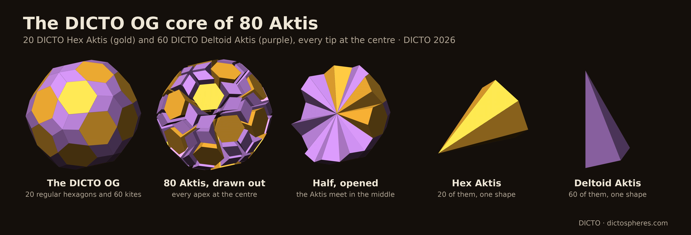
Figure 12.3. The OG core: the DICTO OG; its 80 Aktis drawn out, every tip at the centre; half of them, opened; one Hex Aktis (gold) and one Deltoid Aktis (purple).
6. The OTT core of 38 rays (Proposition 3)
The DICTO OTT (Octahedrally Truncated Triacontahedron) [5] is the rhombic triacontahedron cut by its octahedron at all 8 key sites: 24 corners, 38 faces (8 equilateral triangles in the octahedron's faces, 24 half-rhombi and 6 whole rhombi), volume (−608 + 320√5)/81 ≈ 1.327676, pyritohedral symmetry. DICTO's idea: cut it, like the OG, into its face pyramids from the centre, the OTT rays, which DICTO named Oktaktis (on the octahedron cuts), Triaktis (on the half-rhombi) and Tetraktis (four-sided, on the whole rhombi). The 38 rays fill the OTT exactly and fall into three shapes (corner matching); their values are in Table 3.
The Oktaktis are Cleo-Icos. DICTO noticed that the Oktaktis looks like a Cleo-Icos; we prove it exactly: each Oktaktis is exactly similar to the Cleo-Icos [7, §5.6], the pyramid from an icosahedron's centre to one face: height²/edge² = φ⁴/12 and side²/edge² = (φ² + 1)/4, as for the icosahedron. They lie in the OG's hexagon planes. In the frame of [4], where both solids are given, each of the OTT's 8 octahedral triangles lies exactly in one of the 20 hexagon planes of the OG; so an Oktaktis has exactly the height of a Hex Aktis, √((6 + 2√5)/27). Since the OG lies inside the OTT [5], each of those 8 hexagons of the OG lies in an octahedral triangle of the OTT; more exactly, the hexagon's circumradius equals the triangle's inradius (squared, (6 − 2√5)/27), and three corners of the hexagon are exactly the midpoints of the triangle's edges, so each hexagon touches its triangle at those three points.
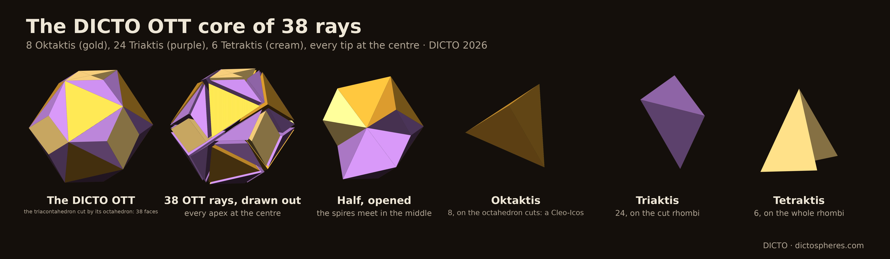
Figure 12.4. The OTT core: the DICTO OTT; its 38 rays drawn out, every tip at the centre; half of them, opened; one Oktaktis (gold), one Triaktis (purple) and one Tetraktis (cream).
7. The OG turned out and its polar: the shells (Corollaries 5 and 6)
The beats. By Corollary 1 the beats of the OG turned out are the OG, φ·TPH, φ²·TQH, φ³·TQP, φ⁴·TQHD, …; at each of the first four beats the corners are checked to be exactly the flipped tips, and each solid is fixed by the 60 rotations of the icosahedron (Table 4a). Every beat holds the one before (Corollary 1), also from φ²·TQH to φ³·TQP, where the downward family itself breaks (Proposition 1). Beat k is exactly φk times the k-th downward solid, but the downward solids themselves shrink [2], so the outer radius grows by a little less than φ per beat: 1.52, 1.53, 1.61 and 1.51.
Towers (Corollary 5, built). The shells of 1, 1 and 2 beats are cut into towers by Lemma 1; their exact values are in Table 4b.
So the shells hold 80, 132 and 140 towers of 2, 3 and 3 shapes. In shell 2 the 120 triangles of the TPH carry towers of two volumes; split by the 60 rotations they form two orbits of 60, each of one volume, so they are two shapes (60 + 60), and with the 12 pentagon towers the shell has three.
The full flip (float, for comparison). Flipping the Aktis at their whole height puts each tip at 2 times the foot point. The same argument gives beat k = 2k times the k-th downward solid, and a float run agrees: 102, 80, 132, 140 and 162 corners at beats 0–4, the outer radius growing by about 1.9 per beat (flip-float.json). The golden step gives the same solids, growing by a little less than φ.
Figure 12.5. The OG turned out, golden step. The OG core (cream); the 80 Aktis at 1/φ of their height, flipped over their faces (Hex Aktis gold, Deltoid Aktis purple); shells 1, 2 and 3 (1, 1 and 2 beats) on their inner solids, purple, gold and purple; all three with half cut away. "phi TPH" is φ·TPH, and so on.
Shell 4 (3 beats, beat 4 → beat 7; built). Exact: both boundaries, φ⁴·TQHD and φ⁷·TQP-402, are fixed by all 60 rotations, beat 4 lies inside beat 7, and the shell is cut into 200 towers on the TQHD's faces: 120 on triangles with two volumes, 60 of each (≈ 570.644662 and 889.860165), 60 on quadrilaterals (≈ 147.140716) and 20 on hexagons (≈ 5699.759901), adding up to the shell (≈ 210453.9306, frame of [2]) with remainder exactly 0 (shell4_exact.py; its one FAIL line is the test "one volume per kind of face", the triangles having two). Shell 5 (5 beats, beat 7 → beat 12) is not built: beat 12 (down 12) has not been computed; its nesting is covered by Theorem 2. Down 5 to down 10 are built exactly; of down 11 only the exact points are built (its faces from float tests).
Figure 12.6. The new solids of the OG's downward family, beats 5 to 11 of the OG turned out, each to the same size, named by DICTO (face kinds measured on the exact points by float tests; triangles gold, four-sided faces purple, pentagons lilac, hexagons bronze, decagons pale); last, the 3-beat shell (beat 4 to beat 7), its 200 towers drawn apart. Every tower shape of every shell is shown in Figure 12.11 (Appendix A).
The polar sequence (Corollaries 2 and 6; DICTO's idea: the polar cycles of the OG turned out). By Lemma 3, reciprocation turns the turned-out sequence into the UP steps from the DICTO Hecatodihedron, shrinking inward: polar(Sk) = φ−kTk(Hecatodihedron). Built exactly for k ≤ 4 (reciprocation about the unit sphere in the frame of [2]), the corner sets agree exactly; the solids have 80, 132, 140, 162 and 200 corners and 102, 80, 132, 140 and 162 faces (polar S0, the Hecatodihedron: 60 3-gons, 30 4-gons, 12 5-gons; polar S4: 90 four-sided faces in two kinds, 30 and 60, and 72 pentagons in two kinds, 60 and 12), and each lies inside the one before. Corollary 6 (built): the inward shells of 1, 1 and 2 beats, cut into towers on the faces of each shell's inner solid by Lemma 1, hold 80, 132 and 162 towers of 2, 3 and 4 shapes, each shell filled exactly (Table 8).
Figure 12.7. The polar of the OG turned out: the DICTO Hecatodihedron, scaled (cream), the outermost boundary; the inward shells of 1, 1 and 2 beats, each shell's towers on its inner solid (pale), purple, gold and purple; all three with half cut away. "polar S1" is polar(S1), and so on.
8. The surface patterns, the lines and the axes (Propositions 4 and 5)
DICTO observed that every shell so far has a different pattern on its surface, and that "the lines defining the shells denote the structures". We read each boundary solid two ways, both exactly: by its faces (the orbits of the 60 rotations, and how faces of one kind join edge to edge into groups) and by its lines (the edge network). The boundaries are few solids: the Cleo Towers end at ID | RT | GTI | ID | FPD | ID (each 10/φ⁴ to a power larger), the Polar Cleo Towers at RT | GTI | RT | FPD | ID | RT, and the OG turned out at OG | TPH | TQH | TQHD (each φ to a power larger; the TQP is passed through inside shell 3). Scale does not change a pattern, so Table 5 (Appendix A) lists the nine solids once each.
Proposition 4 (surface patterns; built: the nine solids of Table 5). The faces and lines of the boundary solids are as in Table 5; in particular:
Faces. No two boundaries of one sequence in a row have the same faces. In the OG's sequence each boundary solid has its own grouping: kites in fives (OG), triangle pairs on the two-fold axes (TPH), trapezoid ribbons on the two-fold axes (TQH), and trapezoid rings of five on the five-fold axes (TQHD), which repeat the rings of the TQP passed through inside shell 3.
Lines. No edge runs on straight through a corner, as convexity requires (a corner never lies between two points of the solid). The lines that line up across the surface are the parallel families. On every solid but the RT and the OG, 15 families point along the two-fold axes (on the RT, a zonohedron, the 6 families point along the five-fold axes); the OG alone has no edge along any axis. Only the ID has central belts: its six decagonal equators, as is classical.
The ribbons (DICTO's observation). On the TQH of the OG turned out (beat 2, φ²·TQH) the 60 four-sided faces are congruent isosceles trapezoids, with parallel sides of squared length (38367 + 17019√5)/13448 and (6615 + 2925√5)/3362 (≈ 2.3839 and 1.9781), legs ≈ 0.4343, corner angles ≈ 62.15° and 117.85° and height ≈ 0.3840. They pair up across their shorter parallel sides: 30 shared edges, every trapezoid in exactly one pair, each pair centred on a two-fold axis (a half-turn about it swaps the two), two pairs per axis, one at each end. So each ribbon is drawn by three parallel lines, its two outer sides and the seam, bent ≈ 23.28° across the seam (float). The 15 edge families of the TQH that point along a two-fold axis are exactly these lines: 6 per family, the two ribbons at the two ends of one two-fold axis, all running along a second two-fold axis. Shell 3 stands a long blade-like tower on each trapezoid, so each ribbon carries two blades (Figure 12.8). In the TQP and the TQHD the trapezoids join along their legs instead, into rings of five on the five-fold axes (each trapezoid meeting two others); of the nine solids of Table 5 only the TQH has ribbons; further down they return (Proposition 5). DICTO sees in the ribbons a possible new shell structure; we record the observation and claim nothing beyond the checks above.
Proposition 5 (the axes; built: the OG to down 9). A symmetry axis leaves a convex solid with this symmetry through a corner on the axis, a face square to the axis or (on a two-fold axis only) the inside of an edge. For every solid of the downward family from the OG to down 9, which of the three it is, on each kind of axis, is as in Table 6 (exact: zero cross products in ℚ(√5), on the corners and face planes of each solid's hull; from down 6 on, not every foot point of the reverse step is a corner of the hull: 192 of 252 points at down 6, 260 of 320 at down 7, 312 of 402 at down 8, and all 500 at down 9). At the two-fold edges of the TPH and down 5 two congruent isosceles triangles meet; at those of the TQH and down 8, a ribbon (two congruent isosceles trapezoids across their shorter parallel sides, the trapezoid's orbit having 60 faces, so 30 ribbons); at down 6, two congruent isosceles trapezoids across their longer parallel sides; at down 9, a ribbon again. So the ribbons of the TQH return exactly at down 8 and at down 9.
Figure 12.8. The ribbons. Left: the TQH (beat 2 of the OG turned out), triangles purple, hexagons cream, the 30 ribbons of trapezoid pairs coral. Right: one ribbon with its two shell-3 towers (coral, drawn a little apart across the seam), on the TQH's nearby faces (cream).
Figure 12.9. The surfaces of the shells: the nine boundary solids, all seen the same way, each to its own size. (The polar sequence and the axis rhythm: Figure 12.12, Appendix A.) Faces coloured by kind: triangles purple (a second kind of triangle lilac), pentagons gold, hexagons cream, kites purple, rhombi teal, trapezoids coral.
Figure 12.10. The lines of the shells: the edge network of each boundary solid, seen as in Figure 12.9. Purple: the edges that point along a symmetry axis (on the ID, the RT and the GTI all of them); gold: the rest; faint: the lines behind.
9. Conjectures and observations
Conjecture 1 (the OG's margin). tmin(Dk) ≤ 3/φ² for every k. Evidence: exact for k = 0, …, 8 (Table 7), with equality at k = 3; the values are not monotone (1.134, 1.117, 1.103, 1.146, 1.042, 1.087, 1.026, 1.060, 1.138). Corollary 1 does not need it.
Conjecture 2 (the octahedral analogue). Every convex polytope with octahedral rotational symmetry satisfies S ⊂ 3·P(S) (sharp for the cube and octahedron). Evidence: numerically, every octahedral orbit hull has inradius at least 1/√3 of its radius (covering_lemma.py); the kite argument of Theorem 2 fails here (the kite's second diagonal is 60°, more than 54.74°).
Observation 1 (the axis rhythm; observed, Table 6). On the five- and three-fold axes corner and face alternate at every step from the OG to down 9 (period 2); one reason is plain: a face square to an axis has its foot point on the axis, and the reverse step makes it a point of the next solid (not always a corner, see Proposition 5). On the two-fold axes the word runs corner, edge, edge, face for two full periods, the OG to the TQP and the TQHD to down 7; at down 8 it reads edge where the period would give corner, the foot point on the axis not being a corner of the hull, and there the ribbons of the TQH return; at down 9 it reads edge again, as the period gives, with a ribbon there too, and at down 10 it reads face where the period gives edge (axis_words.py: no listed point of down 10 lies on the two-fold axis, and a face of its hull is square to it). So the edge stations and the ribbons recur in the solids built, but on the hulls the period 4 holds only from the OG to down 7: the hull word breaks at down 8 (the axis point is a listed foot point but not a hull corner), and the listed points themselves leave the period at down 10. For DICTO's reading of the ribbons as a possible shell structure, this is the law found so far; we claim nothing for solids not built.
10. Prior art and what is claimed
Known and credited. The step T is the three-dimensional antipedal construction about the centre, and its reverse P is Smarandache's face pedal polyhedron [9, 10] (as recorded in [1, 2]); reciprocation about a sphere is classical [17]. Solids nested round one centre go back to Kepler's Mysterium cosmographicum [11]; icosahedral shells round a centre are found in Mackay's packing of equal spheres [12], in the clusters of icosahedral quasicrystals [13] and in the nested icosahedral point sets of viruses and carbon onions [14, 15]; Bergman's continuous spherical truss surrounds a core of twenty tetrahedral pyramids with endless layers [16]; Kramer filled space round a centre with cells that recur τ³ larger [18]. Cutting a solid into pyramids from its centre is as old as Hypsicles' "Book XIV" of Euclid, whose icosahedron pyramids are the Cleo-Icos [7, 19]; the Cleo-Icos is also the unit tetrahedron of Mackay's icosahedron [7, 12]. The Fibonacci numbers and the golden ratio are classical.
Already published by DICTO. The UP rule, its four stations and its first shells' pieces, and the chain's self-polarity [1]; the OG [3] and its downward family [2]; the OTT [5]; CLEO [6]; the CLEO sphere and the Cleo-Icos [7] (all listed in [8]). Shells 1 and 2 of the Cleo Towers and shell 4 of the Polar Cleo Towers are shells of [1].
Claimed here: Theorems 1 and 2 (the containment bound and the icosahedral constant 15 − 6√5 < φ, with the covering lemma); Corollary 1 (the OG turned out is φk times the downward family and nested for every k); Lemma 3 and Corollary 2 (polarity exchanges the reverse step and the UP step; the polar sequence of the Hecatodihedron); Theorem 3 read beat by beat with the Fibonacci boundaries; Lemmas 1 and 2 as used here; Proposition 1 (the ribbons cause the first break of the downward family, whose 60 outlying corners were found in [2]); Propositions 4 and 5, the Conjectures and Observation 1; the exact towers of the fused shells (Cleo Towers, shells 3–5), of the Polar Cleo Towers, of the OG turned out (shells 1–3) and of its polar; the OG core of 80 Aktis and the OTT core of 38 OTT rays, with their shares, and the Oktaktis as Cleo-Icos lying in the OG's hexagon planes; the surface patterns and edge networks of the boundary solids (Table 5), including the TQH's 30 ribbons. Known and used: the (2, 3, 5) Möbius triangle and its side lengths, and polar reciprocation of polytopes [17].
In the sources checked (the full text of the 77 library sources with a text layer listed in the appendix, searched on 21 October 2026; the library's link-only entries were not searched) we did not find Theorems 1 or 2, Lemma 3, tower shells in Fibonacci beats, the Polar Cleo Towers, the Aktis or ray cores of the OG and the OTT, the OG turned out, or the ribbons of the TQH.
11. Further work
Shell 5 of the OG turned out (5 beats, to beat 12), exact (§7): its towers (the nesting is Corollary 1).
The full flip (tip = 2 × foot point) built exactly, and its shells.
The surface patterns and lines of the shells 4 and 5 boundaries of the OG turned out, when built.
Outlook (DICTO's idea, untested). DICTO notes that these shells may mirror material structures, as geodesic forms did before C60 [24] and carbon nanotubes [25] were found. Nested icosahedral shells do occur in nature: in the clusters of quasicrystals and their approximants (Mackay [12], Bergman [22], Tsai [13]), in metal and boron nanoclusters, and in virus capsids (Caspar and Klug [23]; see also [26]). Whether the shells of this chapter correspond to any real structure has not been tested; a checkable next step is to compare their corner counts and radius ratios with published sequences of cluster shells.
The series name
Kyushindo is the martial art of Kenshiro Abbe [20, 21]. DICTO gives its three principles as Change 万物流転, Rhythm 律動 and Harmony 調和, and his brief for this series was "rhythm, harmony and change in the construction of towers and cores". Here rhythm is the Fibonacci beats, harmony the exact golden fits, and change that each shell's form differs from the last (§7).
Appendix A. Computed tables
The exact values behind the constructions of §§3–8; every number is checked against the logs by audit.py.
Table 1. The Cleo Towers, at ID circumradius φ. Shell 3 passes through the FPD, shell 4 through c·RT and c·GTI, shell 5 through c²·ID, c²·RT, c²·GTI and c²·FPD. The exact values of shells 4 and 5 (denominators 261, 9 and 27) are in tower-shells-exact.json.
Table 2. The Polar Cleo Towers, in the same frame; every kind of tower one shape, every shell filled exactly.
Rays
Base
Each ray (exact; ≈)
Height ≈
Share of the OTT
8 Oktaktis
equilateral triangle (octahedron cut)
(−4 + 4√5)/81 ≈ 0.061040
0.6228
36.78%
24 Triaktis
half-rhombus
(−16 + 8√5)/81 ≈ 0.023315
0.6667
42.15%
6 Tetraktis
whole rhombus
(−32 + 16√5)/81 ≈ 0.046631
0.6667
21.07%
Table 3. The OTT core, in the frame of [4, 5]. The Triaktis and Tetraktis have one height because all 30 of their bases lie in the triacontahedron's face planes.
Beat
Solid
Corners
Corner radii ≈
0
OG
102
1.618034, 1.687285
1
φ·TPH
80
2.445695, 2.564186
2
φ²·TQH
132
3.896825, 3.933014
3
φ³·TQP
140
6.003187, 6.032557, 6.324828
4
φ⁴·TQHD
162
9.248108, 9.555175, 9.560121
Table 4a. The beats of the OG turned out built so far with towers (frame of [2]): corners and corner radii.
Shell
Beats
From → to
Towers
Each tower ≈
Shell volume ≈
1
1
OG → φ·TPH
60 on kites 20 on hexagons
0.349923 1.282073
46.6369
2
1
φ·TPH → φ²·TQH
60 on triangles 60 on triangles 12 on pentagons
1.003994 0.992512 3.727717
164.5229
3
2
φ²·TQH → φ⁴·TQHD
60 on triangles 60 on trapezoids 20 on hexagons
36.321214 13.483680 6.977223
3127.8381
Table 4b. The OG turned out, golden step, in the frame of [2]; shell 3 passes through φ³·TQP. All values are exact in golden-exact.json (for instance a hexagon tower of shell 1 is (143097 + 71747√5)/236748); each shell's towers add up to the shell with remainder exactly 0.
Solid
Faces, and how faces of one kind group (exact)
Lines: edges; directions (exact)
ID
20 equilateral triangles, apart, on the three-fold axes; 12 regular pentagons, apart, on the five-fold axes
60; 15 directions of 4 edges, all along two-fold axes; 6 central belts of 10 edges
RT
30 rhombi, all joined
60; 6 directions of 10 edges, along the five-fold axes
GTI
12 regular pentagons, apart, on the five-fold axes; 20 hexagons, all joined
90; 15 directions of 6, along two-fold axes
FPD
60 isosceles triangles, all joined
90; 45 directions of 2 (15 along two-fold axes)
OG
60 kites in 12 groups of 5 on the five-fold axes; 20 regular hexagons, apart, on the three-fold axes, each bordered by kites on all six edges
180; 60 directions (30 of 2, 30 of 4), none along an axis
TPH
60 isosceles triangles, apart; 60 isosceles triangles in 30 pairs on the two-fold axes; 12 regular pentagons, apart, on the five-fold axes
210; 75 directions (15 of 6 along two-fold axes, 60 of 2)
TQH
60 isosceles triangles in 12 groups of 5 on the five-fold axes; 60 isosceles trapezoids in 30 ribbons on the two-fold axes; 20 regular hexagons, apart, on the three-fold axes, each bordered by trapezoids on all six edges
270; 75 directions (15 of 6 along two-fold axes: the ribbons' lines; 30 of 2, 30 of 4)
TQP
60 isosceles triangles, apart; 30 rhombi, apart, on the two-fold axes; 60 isosceles trapezoids in 12 rings of 5 on the five-fold axes; 12 regular pentagons, apart, on the five-fold axes
300; 75 directions (15 of 8 along two-fold axes, 30 of 2, 30 of 4)
TQHD
60 isosceles triangles, apart; 60 isosceles triangles in 12 groups of 5 on the five-fold axes; 20 regular hexagons, apart, on the three-fold axes; 60 isosceles trapezoids in 12 rings of 5 on the five-fold axes
360; 105 directions (15 of 8 along two-fold axes, 60 of 2, 30 of 4)
Table 5. The boundary solids. "Apart": no two faces of that kind share an edge. A group is "on" an axis when a rotation about that axis maps it to itself. A direction is "along" an axis when its edges are parallel to it. A central belt is a closed circuit of edges in one plane through the centre.
Axis
OG
TPH
TQH
TQP
TQHD
down 5 TQP-252
down 6 TQ-320
down 7 TQP-402
down 8 TQ-500
down 9 TQD-732
five-fold
corner
face
corner
face
corner
face
corner
face
corner
face
three-fold
face
corner
face
corner
face
corner
face
corner
face
corner
two-fold
corner
edge
edge
face
corner
edge
edge
face
edge
edge
at the two-fold edge
triangle pair
ribbon
triangle pair
trapezoid pair (longer sides)
ribbon
ribbon
Table 6. What each axis leaves the solid through, for every solid of the OG's downward family built (exact). At a two-fold edge: "triangle pair", two congruent isosceles triangles meet there; "ribbon", two congruent isosceles trapezoids meet across their shorter parallel sides and all 60 trapezoids of that kind pair so, as on the TQH; at down 6 two congruent isosceles trapezoids meet across their longer parallel sides.
k
Corners (listed)
Faces
tmin(Dk) exact
≈
φ − tmin
0
102
80
(445 − 16√5)/361
1.133581
+0.4845
1
80
132
(5941 − 1622√5)/2071
1.117382
+0.5007
2
132
140
(247111 − 104650√5)/11881
1.103147
+0.5149
3
140
162
(9 − 3√5)/2
1.145898
+0.4721
4
162
200
(21 − √5)/18
1.042441
+0.5756
5
200
252
(long, in tmin-exact.json)
1.086902
+0.5311
6
192 (252)
320
(long, in tmin-exact.json)
1.025657
+0.5924
7
260 (320)
402
(long, in tmin-exact.json)
1.059516
+0.5585
8
312 (402)
500
(long, in tmin-exact.json)
1.138077
+0.4800
Table 7. The containment margins of the OG's downward family (tmin_exact.py, frame of [2]): every value exact in ℚ(√5) and below φ by exact sign; the largest is tmin(D3) = (9 − 3√5)/2 = 3/φ². Not computed for k ≥ 9.
Shell
Beats
Inner inside outer
Towers (on the inner solid)
Each tower ≈
Shell volume ≈
1
1
polar S1 inside polar S0
60 on 5-gons 20 on 6-gons
3.760911 0.691479
239.4842
2
1
polar S2 inside polar S1
60 on 3-gons 60 on 5-gons 12 on 5-gons
0.370515 0.427719 1.121247
61.3490
3
2
polar S4 inside polar S2
60 on 4-gons 30 on 4-gons 12 on 5-gons 60 on 5-gons
0.083893 0.259256 0.000008 0.152786
21.9785
Table 8. The polar of the OG turned out (Corollary 6), at φ⁴ times the frame of reciprocation about the unit sphere in the frame of [2]; one shape per orbit of faces, each shell's towers adding up to it with remainder exactly 0 (exact values in polar-turned.json).
Table 9. The new solids of the OG's downward family and DICTO's names (face kinds and face count). Points exact; hull faces and face kinds measured on the exact points by float tests (new_solids_faces.py), not yet proved exactly. The TQHD-662 is not the TQHD of [2], which has 200 faces.
Figure 12.11. The tower catalogue (DICTO: the shells are new configurations too). Every tower shape, one of each kind: above, the OG turned out, shells 1 to 4 (2, 3, 3 and 4 shapes; 12 in all); below, the polar Hecatodihedron sequence, shells 1 to 3 (2, 3 and 4 shapes; 9 in all). Each tower is the cone from the centre over one face of the inner solid, cut by the outer solid; top (on the outer solid) pale gold, side walls purple (lilac for the polar towers). The 12 pentagon towers of polar shell 3 are almost flat (exact volume 7.65 × 10⁻⁶). Shapes grouped by exact volume as in the shell logs; float renders of the exact boundaries.Figure 12.12. Above: the surfaces of the polar sequence (Lemma 3, Corollary 2): the Hecatodihedron (scaled) and polar beats 1 to 4, faces coloured by kind (triangles gold, four-sided purple, pentagons lilac, hexagons bronze), same view as Figure 12.9. Below: the axis rhythm (Proposition 5, Observation 1): what each two-, three- and five-fold axis passes through on the true hull of each solid, from the OG to DICTO TQD-732 (beat 9): dot a corner, bar an edge, disc a face. The three- and five-fold rows alternate face and corner at every beat; the two-fold row repeats corner, edge, edge, face from the OG to beat 7 and breaks at beat 8. Float drawings of the exact points.
Chapter 13. The Truncated Icosahedron Star (TI Star)
From paper #78, DICTO DOI 10.5281/zenodo.23782577
A doubling cycle and a golden cycle grown from the truncated icosahedron's own pyramids
Abstract. The truncated icosahedron (TI) is the midpoint cell of DICTO's path between the White and the Red Queen (#76) and a station of his golden cycles. DICTO proposed filling its core with pentagonal and hexagonal pyramids, and then starting a new golden cycle from TI with those pyramids turned outwards, a spiked core. Cut from its centre, TI is exactly 12 pentagonal and 20 hexagonal pyramids; the hexagonal one carries on every base edge half the icosahedron's dihedral angle, the angle of the Cleo-Icos, because the hexagons of TI lie in the face planes of an icosahedron three times its edge. Turned outwards, the pyramids give the TI Star. Main theorem. Put the tip of each spike at s times the centre of its face. For s = 2 (each spike the mirror image of the pyramid inside) and for s = φ (each spike 1/φ of its height), TI, the TI Star, the hull of the 32 tips and TI s times larger form one turn of an endless cycle, each layer filled exactly by tetrahedra of three kinds over the corners and the two kinds of edge: for s = 2 a doubling cycle, the TI Star twice the volume of TI as DICTO's Cleo star is twice the icosahedron's; for s = φ a golden cycle, the TI Star φ times TI and one turn φ³ in volume. The hull of the tips is a pentakis dodecahedron, not the Catalan one; inside it each turn passes through two pairs of Platonic shells, the dodecahedron and icosahedron of TI's own face planes and those of the spike tips, each pierced by spikes, with a new core between them, the icosahedron truncated at 1/φ³ of each edge (eleven solids in all, complete in a stated sense; DICTO's growth rule carries each outer pair to the next inner pair). About one sphere the middle of every turn is its own polar, so the polar cycle shares four solids with the cycle and adds three, fourteen per turn. The hull of the tips, which DICTO named the Star Halo, starts a cycle of its own, and spiking each hull in turn gives a star chain that returns to the shape of the truncated icosahedron after four steps: read the other way it is the orbit of TI under DICTO's growth rule of Universal PiTet (#38), a PiTet cycle of its own. The spike tips touch none of the twelve stations of DICTO's golden cycle (#54) at any golden scale, so the two cycles are new and separate. All volumes are exact; 333 pieces per turn are free of overlap.
1. Introduction
A truncated icosahedron can be cut from its centre into pyramids, one on every face, as Aristotle's pyramids cut the Platonic solids. Turn the pyramids outwards and it grows spikes. Wrap the spikes and the solid comes back, larger.
The truncated icosahedron appears twice in DICTO's work. In the Spheres of Dharma (#23) and in the twelve-station golden cycle (#54) it is a station between the rectified truncated icosahedron and the Hecatodihedron; in the path between the queens (#76) its four-dimensional counterpart, the bitruncated 600-cell, is built from 120 truncated icosahedra and 600 truncated tetrahedra. Paper #77 showed that, face to face, the five Platonic face pyramids keep to their solids. DICTO proposed the same cut for TI, and then a new golden cycle that begins, like his Cleo star (#35), with the pyramids turned outwards. This chapter carries out both.
2. The truncated icosahedron from its centre
With edge 1, the truncated icosahedron TI (corners: the even permutations of (0, ±1, ±3φ), (±1, ±(2 + φ), ±2φ), (±φ, ±2, ±(2φ + 1)), halved) has volume (125 + 43√5)/4. Cut from its centre it falls into the pyramids of Table 1, exactly.
Pyramid
Count
Height
Volume
Base-edge angle
TI, pentagonal
12
√(1250 + 410√5)/20 = 2.32744
1.33477
73.528° (cos² = (5 + √5)/90)
TI, hexagonal
20
√(42 + 18√5)/4 = 2.26728
3√(14 + 6√5)/8 = 1.96353
69.095° on every edge (cos² = 1/2 − √5/6): θI/2
truncated tetrahedron, triangular
4
5√6/12 = 1.02062
5√2/48
74.207° (cos² = 2/27)
truncated tetrahedron, hexagonal
4
√6/4 = 0.61237
3√2/8
35.264° on every edge: α/2
Table 1. The face pyramids of the two midpoint cells of #76 (edge 1). The base-edge angle is the angle between the base and the plane through the edge and the centre; θI = arccos(−√5/3) is the icosahedron's dihedral angle and α = arccos(1/3) the tetrahedron's. Both pyramids of TI have the same side triangle (legs √(58 + 18√5)/4 = 2.47802, the radius of TI).
Proposition 1. The hexagonal pyramid of TI is the Cleo-Icos of edge 3 with its three corners cut off; the truncated tetrahedron's hexagonal pyramid is the tetrahedron's face pyramid of edge 3 with its corners cut off. Proof. Truncating a solid keeps the planes of its faces: the hexagons of TI lie in the face planes of the icosahedron of edge 3, and the truncated tetrahedron's in those of the tetrahedron of edge 3. A face pyramid's angle along an edge of its base depends only on the face plane and the edge, so the angles are those of the Cleo-Icos and of the tetrahedron's pyramid (#44, #77). ∎
Base to base, the hexagonal pyramid of TI on the truncated tetrahedron's makes a hexagonal bipyramid of height (√6 + √(42 + 18√5))/4 = 2.87966: the meeting of the two midpoint cells of #76, as the tetrahedron's pyramid meets the octahedron's in the octet. Face to face the four pyramids keep to their solids, as in #77: round a side edge only one pentagonal and two hexagonal pyramids close (111.381° + 2 × 124.309° = 360°; for the truncated tetrahedron 67.115° + 2 × 146.443°), and the angles round an edge exclude TI from every face-to-face tiling by the two solids (the only edge star of up to five solids is 2 × 109.47° + 2 × 70.53° of truncated tetrahedra; the closest one with TI misses by 1.57°).
Figure 13.1. Left: the truncated icosahedron cut from its centre, 12 pentagonal (gold) and 20 hexagonal (violet) pyramids drawn apart. Right: the hexagonal bipyramid, the hexagonal pyramid of TI on the truncated tetrahedron's (teal).
3. Main theorem: the TI Star and its two cycles
Turn every pyramid outwards and the solid becomes a star. The tips of the star mark the faces of a larger one, and the space between them fills with small tetrahedra of only three kinds.
Let cf be the centre of face f of TI (it is the foot of the perpendicular from the centre, because the faces are regular). For s > 1 the TI Star TI(s) (the Double TI Star for s = 2, the Golden TI Star for s = φ; DICTO's names, after his Cleo star) is TI with a pyramid over every face whose tip is s·cf; its spikes are the inward pyramids scaled in height by s − 1, so TI(s) has volume s·TI. Let K(s) be the convex hull of the 32 tips (the Star Halo, DICTO's name, Section 6), and s·TI the truncated icosahedron scaled by s; its face centres are exactly the tips.
Theorem. For s = 2 and for s = φ: (a) TI ⊂ TI(s) ⊂ K(s) ⊂ s·TI, and K(s) is a pentakis dodecahedron: 32 corners (the tips), 60 congruent triangles, each over one corner of TI. (b) The layer K(s) minus TI(s) is filled exactly by 60 corner tetrahedra, each a corner v of TI with the three tips over the faces at v, and 90 edge tetrahedra, each an edge vw of TI with the two tips over the faces at vw (60 over pentagon–hexagon edges, 30 over hexagon–hexagon edges). (c) The layer s·TI minus K(s) is filled exactly by 60 corner tetrahedra (a corner of s·TI and the three face centres there) and 90 edge tetrahedra (an edge of s·TI and the two face centres beside it). (d) Scaling by s repeats the turn without end, so the four stations form a cycle: for s = 2 a doubling cycle, for s = φ a golden cycle.
Station or piece
Count
Doubling, s = 2
Golden, s = φ
TI
1
1
1
TI Star TI(s)
1
2
φ = 1.618034
pentakis hull K(s)
1
6.067694
3.212896
s·TI (next turn)
1
8
φ³ = 4.236068
layer 1: corner tetrahedron
60
0.041839
0.014743
layer 1: edge tetrahedron, pentagon–hexagon
60
0.017132
0.007892
layer 1: edge tetrahedron, hexagon–hexagon
30
0.017647
0.007892
layer 2: corner tetrahedron
60
0.017451
0.009240
layer 2: edge tetrahedron, pentagon–hexagon
60
0.008725
0.004620
layer 2: edge tetrahedron, hexagon–hexagon
30
0.012058
0.006385
Table 2. Volumes as multiples of TI. One turn has 1 + 32 + 150 + 150 = 333 pieces (the core, the spikes and the two layers). In the frame of #54 (edge of TI 1/φ), the hull K(2) has volume 79.193496 and the layer-1 pentagon–hexagon tetrahedron 0.2236068, agreeing with 30 + 22√5 and √5/10 to nine digits; for s = φ both layer-1 edge tetrahedra have the same volume, and the layer-2 hexagon–hexagon tetrahedron 0.0833333, 1/12 to nine digits. These closed forms are recognised from the numbers, not proved.
Proof and checks. The tips are s times the face centres, so they are the face centres of s·TI, which gives (a) together with the computed hull: its 60 face planes are all at one distance, each through one pentagon tip and two hexagon tips over one corner of TI. Each corner tetrahedron of layer 1 has its base on a face of K(s) and its apex at the corner of TI below; each edge tetrahedron is bounded by the two spike faces over its edge and by two faces of the neighbouring corner tetrahedra; so the pieces close round every spike edge and every hull edge. The volumes of each layer add up to the layer to 10−12 for both s (corners exact in ℚ(√5); volumes in double precision), and all 333 pieces of a turn, the core and the spikes are pairwise free of overlap by the separating-axis test (faces and edge cross products of every pair of convex pieces whose bounding spheres meet). This is (b) and (c); (d) is the scaling. ∎
Figure 13.2. One turn of each cycle, each row to its own scale. Top, the Double TI Star (s = 2); bottom, the Golden TI Star (s = φ). In each row: TI; the TI Star (pentagonal spikes violet, hexagonal teal); the pentakis hull of the 32 tips; and TI scaled by s, whose face centres are the tips, where the next turn begins.
4. All the solids of one turn
Inside each turn two pairs of Platonic shells appear, a dodecahedron and an icosahedron each time, and between them a new truncated icosahedron.
A turn has three sets of points, the 60 corners of TI, the 12 pentagon tips and the 20 hexagon tips, and two sets of planes, the 12 pentagon and the 20 hexagon planes of TI. The 12 pentagon tips are the corners of a regular icosahedron Ip, the 20 hexagon tips those of a regular dodecahedron Dh; the pentagon planes of TI bound a regular dodecahedron DTI, its hexagon planes a regular icosahedron ITI (the icosahedron of edge 3 of Proposition 1).
Proposition 2 (the solids of one turn). For s = 2 and s = φ:
(a) The convex solids of the turn nest as TI = DTI ∩ ITI ⊂ DTI, ITI ⊂ Ip ∩ Dh ⊂ Ip, Dh ⊂ K ⊂ s·TI = s·DTI ∩ s·ITI. The two solids of each pair cross each other; TI with its 12 pentagonal spikes lies in Ip, TI with its 20 hexagonal spikes in Dh, and the TI Star in K; all 32 tips lie outside DTI and ITI.
(b) The 12 pentagonal spikes pierce the faces of Dh and the 20 hexagonal spikes those of Ip, so K is at once Dh with 12 pentagonal pyramids and Ip with 20 triangular pyramids: a spiked dodecahedron and a spiked icosahedron.
(c) The core Ip ∩ Dh has 12 pentagons and 20 hexagons and all its corners on one sphere; its hexagons have alternating edges in the ratio √5, so it is the icosahedron truncated at 1/φ³ of each edge (the uniform TI is truncated at 1/3). It has the same shape in both cycles.
(d) DICTO's growth rule of The Golden Cycle (each corner of a solid gives a face plane of the next) carries K to s·TI, Ip to s·DTI and Dh to s·ITI: the outer pair of one turn gives the inner pair of the next.
(e) The list is complete in three senses: it holds every convex hull of a union of the three point sets and every intersection of these hulls and of the plane sets; of the 256 solids made of whole symmetric families of the turn's pieces (TI always included), only TI, K and s·TI are convex, and the hulls of all 256 are TI, Ip, Dh, K and s·TI; and one step of the growth rule from any solid of the list gives a solid of the list or of the next turn, except from TI, ITI and DTI.
Solid
Double, s = 2
Golden, s = φ
TI
1
1
TI with its 12 pentagonal spikes
1.289707
1.179049
TI with its 20 hexagonal spikes
1.710293
1.438985
TI Star
2
φ
inner icosahedron ITI (hexagon planes)
1.065440
1.065440
inner dodecahedron DTI (pentagon planes)
1.265673
1.265673
core Ip ∩ Dh
4.103174
2.172666
outer icosahedron Ip (pentagon tips)
4.626695
2.449874
outer dodecahedron Dh (hexagon tips)
4.697099
2.487154
K, the pentakis hull
6.067694
3.212896
s·TI
8
φ³
Table 3. The eleven solids of one turn, as multiples of TI. Inclusions were tested for every pair (all corners of one inside every face plane of the other, to 10−9); the edge ratio of the core is √5 to 10−8 in both cycles; the growth-rule identities hold to 10−9 in volume (study scripts/stations.py, inner_pair.py, families.py, rule_chains.py). The inner pair depends only on TI, so it is the same in both cycles; the outer solids scale with s.
Figure 13.3. The solids of one turn of the golden cycle. From left: TI (gold) inside its own dodecahedron (blue) and icosahedron (red); the core Ip ∩ Dh (translucent) round TI; the outer dodecahedron Dh of the hexagon tips, with the pentagonal spikes coming through its faces; the outer icosahedron Ip of the pentagon tips, with the hexagonal spikes coming through; and K, both at once.
Where the list stops. Repeated, the growth rule leaves the cycle in two side chains that never land on a station: from TI it alternates TI-shaped solids and Catalan pentakis dodecahedra, growing by 1.172168 in length every two steps; from ITI and DTI it alternates icosahedra and dodecahedra, growing by 1.583592 every two steps. Neither factor is a power of s, so these chains wind through the turns without closing. The turn passes through both Platonic solids of five-fold symmetry twice; the dodecahedra are the shape of the Red Queen's core cell (#65), and whether they can be matched to her nine layers is left open.
5. The polar cycle
Reflect every solid of the turn in a sphere, corners to faces and faces to corners: the middle of the turn comes back as itself.
Proposition 3 (the polar cycle). For s = 2 and s = φ, let ρ² = R(Ip)·r(Dh), the circumradius of the outer icosahedron times the inradius of the outer dodecahedron (ρ = 1.337 times the radius of TI for s = φ, 1.653 for s = 2). In the sphere of radius ρ the outer icosahedron and the outer dodecahedron are polar to each other, and so are the Star Halo K (Section 6) and the core: the four middle solids of the turn are their own polar set. The polars of TI, ITI and DTI, scaled by 1/s into the same turn, are a Catalan pentakis dodecahedron and a second icosahedron and dodecahedron, and the two cycles nest together in one space:
TI ⊂ ITI ⊂ I*, TI ⊂ DTI ⊂ D*, I*, D* ⊂ Catalan pentakis ⊂ core ⊂ Ip, Dh ⊂ K ⊂ s·TI,
where I* and D* are the polar icosahedron and dodecahedron (each pair crosses itself, and ITI, DTI cross the polar solid of the other kind where noted in the data): fourteen solids per turn, the four middle ones shared.
The equality ρ² = R(Dh)·r(Ip) holds as well, because the icosahedron and the dodecahedron have the same ratio of circumradius to inradius; that is why one sphere serves both. In the polar cycle TI's place is taken by the Catalan pentakis dodecahedron, the polar of the uniform truncated icosahedron. Exact order and every inclusion: study data merged-turn.json; the polar identities hold to 10−8 in volume.
6. The Star Halo and the star chain
Treat the hull of the star as a new core, spike it, and wrap it again. After four such steps the truncated icosahedron comes back.
DICTO named K, the hull of the 32 tips, the Star Halo. Its 60 triangles all lie at one distance from the centre, so when its own face pyramids are turned outwards (tips at s times the foot of each face's perpendicular) the tips land on a scaled copy of its polar, which is the core shape of Section 4. Repeating the step gives the star chain: each solid's spike tips make the next.
Proposition 4 (the star chain). Let S0 = TI and Sn+1 the hull of the spike tips of Sn, the tips at s times the feet of the perpendiculars to its faces. For s = φ and s = 2: S1 is the Star Halo, S2 has the shape of the core (the icosahedron truncated at 1/φ³, edges in the ratio √5), S3 is the Catalan pentakis dodecahedron, the polar of TI, and S4 has the shape of TI again, so the chain repeats with period four. Every step is one turn of a cycle of the kind of the Theorem: Sn ⊂ star ⊂ Sn+1 ⊂ s·Sn, the star of volume s times Sn, both layers filled exactly by pyramids over the corners of Sn and of s·Sn (tetrahedra over three-fold corners, pentagonal and hexagonal pyramids over five- and six-fold ones) and tetrahedra over the edges; 333 pieces per turn from a truncated icosahedron, 305 from a pentakis dodecahedron.
Relation to DICTO's rule T (#38). Taking the hull of the feet of the faces undoes DICTO's growth rule T(S) = {x : v·x ≤ v·v for every corner v of S} of Universal PiTet (#38): T(Sn+1) = s·Sn. Read the other way, the star chain is the T-orbit of TI: T carries TI to the Catalan pentakis dodecahedron (a polar step, since TI's corners lie on one sphere), that to the core shape, the core to the Star Halo (again a polar step) and the Star Halo to TI, larger by exactly (17745 − 7712√5)/361 = 1.386271 per turn. This is the structure of DICTO's PiTet Proposition, whose T-orbit of the icosidodecahedron, ID → RT → GTI → FPD → ID, grows by 10/φ⁴ per turn: TI has a PiTet cycle of its own.
Step
Solid
Corners · faces
Edge ratio
Hull / Sn, s = φ
Hull / Sn, s = 2
S0
TI
60 · 12 pentagons + 20 hexagons
1
3.212896
6.067694
S1
Star Halo
32 · 60 triangles
1.098186
3.376409
6.376497
S2
core shape
60 · 12 pentagons + 20 hexagons
√5
3.226814
6.093979
S3
Catalan pentakis dodecahedron
32 · 60 triangles
1.127322
3.452883
6.520921
S4
TI again
60 · 12 pentagons + 20 hexagons
1
3.212896
6.067694
Table 4. The star chain. Edge ratio: longest over shortest edge. Volumes of each step's hull over the solid it grows from; the star is always s times the solid. Shapes compared up to scale by corner radii and edge lengths; fills exact to 10−9 in volume at every step; no overlapping pair among the 333 or 305 pieces of steps 0 to 3 (separating-axis test). After four steps the radius has grown by 4.944274 (s = φ) and 11.541757 (s = 2), that is s4·c with c = (17745 + 7712√5)/48505 = 0.7213598 exactly; c is not a power of φ, so the chain returns to the shape of TI but not to a golden or doubled copy of it (study scripts/halo_cycle.py, star_chain.py; data/halo-cycle-*.json, star-chain-*.json).
The scaling numbers. Because every tip is the foot of a perpendicular from the centre to a plane through points of ℚ(√5)3, the whole chain stays in ℚ(√5) and its ratios are exact. With the tips at the feet themselves (s = 1; any s multiplies step n by sn), the squared outer radius changes at the four steps by (445 + 16√5)/545, (37 + 16√5)/89, (645 + 226√5)/1335 and (51 + 18√5)/109, and then by the same four numbers again, step after step (checked exactly to eight steps). Over one period the radius changes by c = (17745 + 7712√5)/48505, with 48505 = 5·89·109; the squared constant is (7712 + 3549√5)²/(5·89²·109²); its inverse, the gain of T over one turn, is (17745 − 7712√5)/361, with 361 = 19². The primes 89 and 109 alternate in the denominators; 109 already appears in TI, whose side triangles have apex angle cos (80 + 9√5)/109 (Table 1 study data). Why 89 appears is left open (study scripts/chain_exact.py, data/chain-exact.json).
Kepler's spikes. A spike rule with no free number is Kepler's: the tip over a face is where the planes of its neighbours first meet its axis. For TI this puts the pentagon tips at the corners of its own icosahedron ITI and the hexagon tips at those of its own dodecahedron DTI, and the hull of the 32 tips is the Catalan pentakis dodecahedron, the polar of TI and its first step under T. That layer fills exactly: TI, its 32 Kepler spikes, 60 corner tetrahedra and 90 edge tetrahedra make up its polar, with no overlap. The next Kepler step does not fill (on the pentakis the spikes stand outside their own hull); the hulls alone return to the shape of TI after two steps, larger by (105 − 18√5)/55 = 1.177287, so Kepler's rule gives a chain of hulls but no cycle of pieces. If instead each new solid is the hull of the whole star, its corners and its Kepler tips together (DICTO's proposal), every corner and every tip stays on the hull from the second step on: the solid gains a low pyramid on each triangle, the triangles triple (60, 180, 540, 1620) at an unchanged radius, and the gap between star and hull falls from 28 to 4.8, 1.1 and 0.16 per cent of the solid's volume, a refinement towards a rounded limit rather than a cycle (four steps checked; beyond them the floating-point tests are not reliable; study scripts/kepler_full_hull.py). No natural spike rule tried makes the four-step factors exactly 5 or 12; 4.944 and 11.542 remain near values (study scripts/kepler_chain.py, kepler_cycle.py).
Figure 13.4. The star chain (golden version), each solid scaled to the same radius: TI; the Star Halo (five-fold corners violet, six-fold teal); the core shape, the icosahedron truncated at 1/φ³; the Catalan pentakis dodecahedron, the polar of TI; and TI again.
7. Doubling and golden, and the Cleo star
Mirroring a face pyramid in its face puts the tip at twice the face centre: that is the doubling cycle, and the TI Star is then exactly twice TI, as DICTO's Cleo star, the icosahedron with its twenty Cleo-Icos turned outwards, is twice the icosahedron (#35, #54). The golden ratio enters when the spikes are 1/φ of the pyramids' height. The two cycles behave differently from the Cleo star in one respect: the Cleo star's twenty tips are the corners of a dodecahedron, D′, which is how it joins DICTO's twelve-station cycle; the 32 tips of the TI Star lie on two spheres (the pentagon tips 1.0265 times further out than the hexagon tips, the inverse of the Catalan pentakis dodecahedron's proportion), and they touch no station of the twelve-station cycle at any scale φk, k = −2, …, 4 (study data contacts.json). The TI Star therefore starts a cycle of its own, beside the golden cycle rather than on it.
8. What is new and what is known
Known, credited: DICTO's growth rule T and the PiTet Proposition (#38), of which the star chain is the case of TI; the Catalan pentakis dodecahedron; cutting a convex solid from its centre into face pyramids; raising pyramids on the faces (Kepler's stellations, the Kleetope construction), and the pentakis dodecahedron as the Kleetope of the dodecahedron; the truncated icosahedron and truncated tetrahedron (Archimedes, Kepler); the bitruncated 600-cell of #76 (Boole Stott 1910).
New, as far as the sources checked show: Proposition 1 (the two hexagonal pyramids carry the Cleo-Icos's and the tetrahedron pyramid's angles), the hexagonal bipyramid of the two midpoint cells, the exclusion of the pyramids of TI from face-to-face tilings, and the Theorem: the doubling and golden cycles of the TI Star with their exact fills; Proposition 2, the eleven solids of one turn, the 1/φ³ core and the growth-rule links; Proposition 3, the self-polar middle and the merged turn of fourteen solids; Proposition 4, the Star Halo cycle and the star chain of period four, the T-orbit of TI with its exact gain.
Not decided: which other factors s give a cycle with the same pieces (only s = 2 and s = φ were checked); whether the golden cycle can be joined to the twelve-station cycle by an intermediate solid; the meaning of the primes 89 and 109 in the chain's ratios; and the star chains of DICTO's other solids, which a census will take up.
9. Conclusion
DICTO's idea holds both ways. The core of TI fills exactly with pentagonal and hexagonal pyramids, and the hexagonal ones carry the Cleo-Icos's angle. Turned outwards they make a spiked core from which two new cycles grow, a doubling one and a golden one, each repeating without end with one core, 32 spikes and 300 tetrahedra of six kinds per turn. Inside every turn the two Platonic solids of five-fold symmetry appear twice, as an inner and an outer pair, with a new core between them, the icosahedron truncated at 1/φ³. The middle of the turn is its own polar, and spiking each hull in turn closes into a star chain of four shapes: the truncated icosahedron, the Star Halo, the core and the Catalan pentakis dodecahedron, the orbit of TI under DICTO's own growth rule of #38.
Chapter 14. One Turn Is a Gnomon: the Golden Cycle Step by Step, and the Polar of the Keyed Pair
From paper #54, DICTO DOI 10.5281/zenodo.23633365
Theorem: in DICTO's twelve-station golden cycle, one whole turn is a gnomon in the classical sense of Euclid and Heron, and no shorter run of steps is; within the turn from I, its last step is the only step whose new whole is similar to an earlier station. The keyed DICTONIC pair is the golden pair with eight Tricaps moved from one piece to the other (the Icosaxes minus eight, the Unborn Axes plus the same eight), and the golden pair's polars are cubes with face pyramids of heights 1/φ and 1/φ², which add up to Kepler's rhombic dodecahedron
Take a square of 3 × 3 dots and add an L-shaped strip of 3 + 4 dots along two sides: you get the next square, 4 × 4. The strip is a gnomon: in the classical definition (Euclid, and Heron in general), the piece which, added to a figure, makes a whole of the same shape as the figure, only larger. The gnomon method as reported for Júlia Pimentel works with exactly this strip, n + (n + 1). DICTO's idea was to carry that structure into three dimensions: walk through his golden cycle of twelve nested solids, from an icosahedron out to the next icosahedron φ³ times larger, and check at every step what it adds and whether the new whole has the shape of something before it. We built every step exactly. The answer is clean. The whole turn is a classical gnomon: the next icosahedron has the same shape as the first. No single step and no shorter run of steps is: no station has the shape of any other station, except the two icosahedra. So it is the last step, from M to the next icosahedron, that closes the gnomon. Step by step, the cycle adds spikes, pyramids, Shields and other pieces that never repeat their shapes. By volume, four steps still add a clean golden amount. DICTO's second idea concerned his keyed pair of space-filling pieces, the Lotus Jewel Axes (eight dents) and the Dodecaxes (eight keys). A dented or keyed solid has no ordinary polar, so DICTO's method is to fill the dents in (or take the keys off), take the polar of the smooth solid, and keep what was removed as the remainder. The smooth solids are the golden pair of paper #48; their polars are cubes with a low pyramid on every face, of heights 1/φ and 1/φ², which add up to exactly 1, the height that makes Kepler's rhombic dodecahedron; and the remainder is the same eight Tricaps for both pieces. Both parts read a solid by the piece that lies between it and its neighbour. Theorem A (the classical gnomon of the golden cycle). In the cycle I ⊂ Cleo star ⊂ D′ ⊂ ID ⊂ OG ⊂ rTI ⊂ TI ⊂ H ⊂ jtI ⊂ RT ⊂ M ⊂ I·φ³ the only two similar stations are I and I·φ³ (ratio φ³). Hence one whole turn, I·φ³ minus I, is a classical gnomon of I; no single step and no shorter run of steps is a classical gnomon; and, within the turn from I, the last step, M → I·φ³, is the only step whose new whole is similar to an earlier station. Table 4 lists what each step adds. Corollary (volumes). Every station is an exact multiple a + b√5 of I; Cleo star = 2·I, RT = 81·I/φ², M = φ⁸·I, I·φ³ = φ·M; exactly four steps (1, 6, 7, 11) add a rational multiple of φk·I. Theorem B (the keyed pair, hull and remainder). The Lotus Jewel Axes and the Dodecaxes are the Icosaxes and the Unborn Axes minus and plus the same eight Tricaps, each of volume 1/(12φ²) [1]. The polar of the Icosaxes is a cube with six face pyramids of height 1/φ (in half cube edges), that of the Unborn Axes one with height 1/φ²; along the whole factor-x family of [1] the two heights are x/(1 + x) and 1/(1 + x), so they always add up to 1, the rhombic dodecahedron's height. A polar of the Lotus Jewel Axes taken face by face about one centre would put spikes over the eight dents. All results are exact (119 checks, none failed).
1. Where it started, and why one paper
Both ideas came on 24 and 25 October 2026, and both look at the piece in between: what a step of the cycle adds, and the eight small pieces that a key or a dent moves from one solid to the other.
The golden cycle grew over three of DICTO's papers. The Spheres of Dharma [2] nest classical icosahedral solids so that the next icosahedron, φ³ times larger, closes one turn. Progenitors [3] set DICTO's Ogdoecontahedron (OG) and Hecatodihedron (H) [4] into the cycle, with the core and hull of their compound, the rectified truncated icosahedron (rTI) and its dual (jtI). Vajrayana [5] added DICTO's Cleo star and its hull D′, and closed the last loose step with the DICTO Metaxyhexecontahedron (M) [6], making twelve stations.
The gnomon is one of the oldest ideas in geometry. Euclid defines it for parallelograms, as the L-shaped piece left when a smaller similar parallelogram is taken from a corner [7, Book II, Definition 2]; Heron defines it in general as that which, added to a figure or number, makes the whole similar to the figure to which it was added (quoted in Heath's commentary on that definition [7]); growth by gnomons is the theme of D'Arcy Thompson's chapter on the equiangular spiral [8]. For squares the gnomon is the strip n + (n + 1), the structure of n² + n + (n + 1) = (n + 1)² in the method reported for Júlia Pimentel [12, 13]. DICTO proposed carrying this "add the next strip" structure into his three-dimensional cycle. A first study [S1] measured the volume each step adds; DICTO concluded that this captured "the nature of the beast" but not its shape, and a second study [S3] built every added piece exactly and tested every similarity. Part A reports both, with the classical shape test as the main statement and the volumes as a corollary.
From the square to the solid gnomon. We use "solid gnomon" as our descriptive term for the three-dimensional form of the classical gnomon: the shell which, added to a solid, gives a similar, larger solid (we make no claim about who first used the term). The chain is short. Square: n² + n + (n + 1) = (n + 1)²; the added strip n + (n + 1) is the gnomon of the square, the structure of Júlia Pimentel's method as reported [12, 13]. Cube: n³ + 3n² + 3n + 1 = (n + 1)³, the standard binomial identity; the added shell, three slabs n × n × 1, three rods n × 1 × 1 and one unit corner cube, is the solid gnomon of the cube. DICTO's golden cycle: one whole turn, the shell between I and I·φ³, is a solid gnomon of the icosahedron, with linear ratio φ³ and volume ratio (φ³)³ = φ⁹, the factor cubed (Theorem A).
The same day DICTO turned to the keyed pair of paper #48 [1], the Lotus Jewel Axes and the Dodecaxes, and theorised a polar for them by his own method: fill the dents in, take the polar, and work out the remainder. The exact study is [S2]. We report the two together because they share one theme, the piece between two forms, and because each is short. In Part A the piece is what a step adds; in Part B it is the set of eight Tricaps between a keyed piece and its smooth golden form.
Terms and conventions.Exact arithmetic in ℚ(√5): every coordinate, length², volume and ratio is written a + b√5 with a and b rational numbers and computed with fractions, so equalities are decided exactly, never by rounding; the few float steps are named where they occur. Scale: Part A uses the frame of Progenitors [3], in which the icosahedron I has edge 1/φ (volume (5/12)(√5 − 1)) and all stations share one centre; volumes are given as multiples of the volume of I. Part B uses the frame of paper #48 [1]: icosahedra of edge 1 at the points of the cubic lattice φℤ³. The factor-x family T(x): for x > 0, T(x) is the truncated octahedron spanned by all permutations of (±(1 + x), ±x, 0), Koca's orbit [9]; copies of T(x) at the lattice points and of T(1/x) at the cube centres fill space for every x [1, Theorem 4], from Kelvin's cell (x = 1) to the golden pair (x = φ). Hull-and-remainder polar (DICTO's method): a solid with dents or keys has no ordinary polar, so it is read through its smooth convex form, the convex hull for a dented solid and the solid with its keys removed for a keyed one; the polar is taken of that smooth form, and the pieces removed or added are kept unchanged beside it as the remainder.
Part A. 2. The twelve stations, exactly
Every station is measured as a multiple of the innermost icosahedron. Ten of the twelve volumes come from the earlier papers; two, rTI and jtI, are measured here.
Symbol
Name
Short description
Paper
I
icosahedron
the innermost icosahedron of the Spheres of Dharma, made of 20 Cleo-Icos
Table 1. The twelve stations of one turn, from the centre out.
Lemma (one turn scales by φ³). Every station of the next turn is the corresponding station of this turn scaled by exactly φ³. Reason: every station is defined from I by rules that refer only to I itself and to earlier stations about the common centre: fixed scale factors relative to them (D′ at 2/3 of the Dharma dodecahedron, OG at 3φ²/4), polars taken in a sphere defined by an earlier station (TI's midsphere), convex hulls, intersections and cones from the centre [2, 3, 5]. Such rules commute with scaling about the centre. The next turn applies the same rules to I·φ³ = φ³·I [2], so it is this turn scaled by φ³. Volumes therefore scale by (φ³)³ = φ⁹.
The frame is that of [3]: the icosahedron I of the Spheres of Dharma has edge 1/φ and volume (5/12)(√5 − 1). The volumes of I, the Cleo star, D′, ID, OG, TI, H, RT, M and I·φ³ are sums of the exact layer volumes published in [3, 5]. For rTI and jtI the study [S1] read the corners from the stored data of [3], recovered each coordinate exactly as a + b√5 with a, b in (1/16)ℤ (error below 10⁻⁶ in every case), computed jtI's other 32 corners exactly as the poles of TI's 32 face planes in the sphere ρ² = 9/4 [3], and summed exact signed tetrahedra over the convex hull. The same procedure reproduces the published volumes of TI, H, RT and I·φ³ exactly, at the same scale, and the float hull volumes agree. Study [S3] later rebuilt all twelve stations with exact corners from the construction scripts of [3, 5], with no rounding at all, and obtained the same twelve volumes.
Station
What it is
Volume (exact)
V / V(I), exact
≈
I
icosahedron of the Spheres of Dharma [2]
−5/12 + (5/12)√5
1
1
Cleo star
I with 20 Cleo-Icos as spikes [5]
−5/6 + (5/6)√5
2
2
D′
dodecahedron D at 2/3, hull of the Cleo star [5]
10/9 + (14/27)√5
20/9 + (44/45)√5
4.4086
ID
icosidodecahedron [2]
175/48 + (79/48)√5
57/8 + (127/40)√5
14.2245
OG
DICTO Ogdoecontahedron at 3φ²/4 [3]
1975/456 + (895/456)√5
645/76 + (287/76)√5
16.9309
rTI
rectified truncated icosahedron, core of the H–OG compound [3]
−15/2 + (73/8)√5
183/8 + (39/40)√5
25.0552
TI
truncated icosahedron [2]
−35/4 + (39/4)√5
24 + (3/5)√5
25.3416
H
DICTO Hecatodihedron [4]
−365/4 + (189/4)√5
87 − (132/5)√5
27.9678
jtI
dual of rTI, hull of the H–OG compound [3]
−3465/38 + (900/19)√5
3321/38 − (999/38)√5
28.6097
RT
rhombic triacontahedron [2]
−135 + (135/2)√5
81/φ² = 243/2 − (81/2)√5
30.9392
M
DICTO Metaxyhexecontahedron [5, 6]
145/12 + (65/12)√5
φ⁸ = 47/2 + (21/2)√5
46.9787
I·φ³
the next icosahedron [2]
235/12 + (35/4)√5
φ⁹ = 38 + 17√5
76.0132
Table 2. The twelve stations in the frame of [3] (I of edge 1/φ). Bold: the volume ratios that are a rational number times a power of φ. The volumes grow strictly in this order.
2. Theorem A: the classical gnomon
Only the two icosahedra at the ends of a turn have the same shape. So the whole turn is a gnomon in Euclid's and Heron's sense, and nothing shorter is.
Theorem A (the classical gnomon of the golden cycle; exact, computer-verified in exact arithmetic). Let the twelve stations be as in Table 2, repeated in every turn at scale φ3m.
(i) Among the twelve stations exactly one pair is similar: I and I·φ³, with linear ratio φ³ = 2 + √5 (volume ratio φ⁹).
(ii) Hence the whole turn, the region between I and I·φ³, is a classical gnomon of I, a solid gnomon: added to I it makes a whole similar to I.
(iii) No single step, and no run of consecutive steps shorter than a whole turn, is a classical gnomon: the new whole is never similar to the station it was added to. In particular no step k → k + 1 is a gnomon of station k.
(iv) In the turn that starts at I, the last step, M → I·φ³, is the only step whose new whole is similar to an earlier station; it is the step that closes the gnomon of the turn. The new wholes of steps 1–10 are similar to no other station of the turn. (v) In the endless cycle every station is similar to the same station one turn (eleven steps) earlier and to no other earlier station; so every whole turn, from whichever station it starts, is a classical gnomon of that station, and nothing shorter is.
Proof. Study [S3] rebuilt all twelve stations with exact corners in ℚ(√5) from the construction scripts of [3, 5] (no rounding), and tested similarity exactly: two solids are similar only if their corners can be matched one to one so that every squared corner-to-corner distance scales by the same factor (mirror images allowed). Solids with different numbers of corners cannot be similar; the only stations with equal corner counts are I and I·φ³ (12 each), and the Cleo star, RT and M (32 each). I·φ³ = φ³·I by construction [2]; the Cleo star, RT and M were tested pairwise and are not similar. This gives (i). The human-readable reason covers all but three pairs (different corner counts); the remaining pairs among the Cleo star, RT and M are decided by the exact computer test. A station of a later turn is a station of this turn scaled by a power of φ³, so it is similar to the same stations; (ii)–(v) follow from (i), since a run of steps from station j to station k (j < k) is a classical gnomon exactly when station k is similar to station j. ∎
What each step adds. Study [S3] cut each layer exactly as in Vajrayana [5, §3]: one piece over each face of the inner station, bounded by the outer station and the cone from the centre over that face (step 1 is the 20 spikes; step 2 is DICTO's published fill of D′ [5]). All pieces of a kind are congruent, and the pieces of each step add up exactly to the layer. Table 4 lists them.
The names. DICTO named the pieces of the cycle's gnomon the Julias, labelled G and the step number, and the 60 triangular bipyramids of the closing step the Pimentels (G11), in tribute to Júlia Pimentel, whose "add the next strip" square method, as reported [12, 13], is the idea he carried into three dimensions; the spikes (G1), DICTO's fill of D′ (G2) and the Shields (G7) keep their names. The technical descriptions in brackets are working descriptions from the study [S3]. Why they differ from their classical relatives, yet fit: each piece is a cone section, the part of the shell over one face of the inner station inside the cone from the centre over that face, so its shape is forced by the two nested solids rather than by equal edges; each is therefore a distorted relative of a classical solid (for example Julia G4 of Johnson's J9 and the Pimentels of J12 [14]), and the cones over all faces divide the shell exactly.
Step
What the step adds (pieces; all of a kind congruent)
Separate parts
Added / I
1 · I → Cleo star
G1: 20 Cleo-Icos (the spikes), congruent to the 20 Cleo-Icos that make up I
20
1
2 · Cleo star → D′
G2: DICTO's fill of D′ [5]: 12 inward pentagonal pyramids and 30 valley tetrahedra
1
2/9 + (44/45)√5
3 · D′ → ID
Julia G3 (pentagonal dome), 12 over D′'s pentagons: 15 corners, 7 pentagons and 5 triangles; nearest classical form a dodecahedral cap
1
353/72 + (791/360)√5
4 · ID → OG
Julia G4 (elongated pentagonal pyramid type), 12 over ID's pentagons: 11 corners, 1 pentagon, 5 quadrilaterals and 5 triangles; nearest Johnson J9
12
207/152 + (457/760)√5
5 · OG → rTI
Julia G5a (notched triangular wedge), 60 over OG's quadrilaterals: 8 corners, 5 quadrilaterals and 2 triangles; Julia G5b (skew hexagonal frustum), 20 over OG's hexagons: two parallel hexagons (not translates) joined by 6 quadrilaterals
1
2187/152 − (2129/760)√5
6 · rTI → TI
Julia G6 (corner tetrahedron), the 60 corners of TI, each (1/80)φ⁻²·I
60
(3/4)φ⁻²
7 · TI → H
G7: 20 Shields, the low hexagonal pyramids of H [4], each (9/10)φ⁻⁴·I
20
18φ⁻⁴
8 · H → jtI
Julia G8 (pentagonal pyramid), 12 over H's pentagons; nearest Johnson J2
12
15/38 + (21/190)√5
9 · jtI → RT
Julia G9 (skew quadrilateral pyramid), 60 over jtI's quadrilaterals, five round each five-fold corner of RT; nearest Johnson J1
12
648/19 − (270/19)√5
10 · RT → M
Julia G10 (rhombic ridge roof), 30 over RT's rhombi: 6 corners, 1 rhombus and 6 triangles [5, §3]
1
−98 + 51√5
11 · M → I·φ³
the 60 Pimentels, G11 (triangular bipyramids, 6 triangles), each (1/60)φ⁷·I [5, §3]; nearest Johnson J12; closes the classical gnomon of the turn
1
φ⁷
Table 4. What each step of one turn adds [S3]: the Julias G1–G10 and the Pimentels G11 (names DICTO's; G1, G2, G7 keep their earlier names). Nearest classical forms only; none is regular (2 to 7 edge lengths). "Separate parts": the number of connected parts of the added region (step 1: the spikes meet only along I's edges). Bold: added volumes that are a rational multiple of φk·I (Corollary A). Step 12, the first step of the next turn, is step 1 scaled by φ³.
Shapes across the cycle [S3, exact]. No piece kind of one step is similar to a piece kind of another step, except that the spike of step 1 is congruent to the Cleo-Icos that make up I (as [5] states); no piece is similar to a station; and pieces recur only as types (pyramids in steps 1, 2, 7, 8, 9; tetrahedra in steps 1, 2, 6), never as the same shape at another size. So the cycle does not grow by repeating one strip at larger and larger sizes, as the squares do; it repeats only once per turn, as a whole.
Figure 14.1. What each step adds, exactly [S3] (Table 4): the pieces G1–G11 of steps 1–11, front half cut away, pieces pulled apart by 10 %, colours by kind within a step. Only step 11 (M → I·φ³) makes a whole similar to an earlier station (I, ratio φ³): it closes the classical gnomon of the turn.
3. Corollary: what each step adds by volume
Measured by volume rather than shape, the turn opens by doubling, closes by φ, and four of its eleven steps add a clean golden amount.
Corollary A (volumes; exact, computer-verified in exact arithmetic, with the algebraic reasons in the proof). With the volumes of Table 2:
(i) the cycle opens by doubling: Cleo star = 2·I, the first step adds one I;
(ii) it closes by φ: M = φ⁸·I, so I·φ³ = φ⁹·I = φ·M, and the last step adds φ⁷·I;
(iii) RT = 81·I/φ², hence M/RT = φ¹⁰/81 and I·φ³/RT = φ¹¹/81;
(iv) of the 66 ratios Vj/Vi (i < j) exactly ten are of the form q·φk with q rational and k an integer, all among I, Cleo star, RT, M and I·φ³;
(v) of the eleven added volumes exactly four are of the form q·φk·I, those of steps 1, 6, 7 and 11: I, (3/4)φ⁻²·I, 18φ⁻⁴·I and φ⁷·I (Table 3). They add up to (φ⁹ − 1)·I.
Proof. Every identity is checked by exact arithmetic in ℚ(√5) [S1, C]. (i) The spikes are 20 Cleo-Icos, as many as make up I [5]. (ii) φ⁸ = (47 + 21√5)/2 = M/I; then φ·M = φ⁹·I = (38 + 17√5)·I = I·φ³, since volume scales by (φ³)³. (iii) RT/I · φ² = 81. (iv)–(v) Write x = a + b√5. Since φk = (Lk + Fk√5)/2 and φ−k = (−1)k(Lk − Fk√5)/2, with F and L the Fibonacci and Lucas numbers, x is a rational multiple of a power of φ exactly when b = 0 (k = 0) or b/a = ±Fk/Lk for some k ≥ 1. Because Fk and Lk have no common factor larger than 2, only the finitely many k with Lk at most twice the denominator of b/a need testing; the test is exhaustive over all integers k. ∎
In the four golden steps every single piece is golden too: a spike is I/20, a corner tetrahedron of TI (1/80)φ⁻²·I, a Shield (9/10)φ⁻⁴·I, and a bipyramid of step 11 (1/60)φ⁷·I (Table 4). The volume test and the shape test pick out different things: four steps are golden by volume, one turn is a gnomon by shape.
Step
Added volume / I (exact)
≈
Form
Step ratio ≈
I → Cleo star
1
1.0000
I
2.0000
Cleo star → D′
2/9 + (44/45)√5
2.4086
—
2.2043
D′ → ID
353/72 + (791/360)√5
9.8159
—
3.2265
ID → OG
207/152 + (457/760)√5
2.7064
—
1.1903
OG → rTI
2187/152 − (2129/760)√5
8.1242
—
1.4798
rTI → TI
9/8 − (3/8)√5
0.2865
(3/4)φ⁻²·I
1.0114
TI → H
63 − 27√5
2.6262
18φ⁻⁴·I
1.1036
H → jtI
15/38 + (21/190)√5
0.6419
—
1.0230
jtI → RT
648/19 − (270/19)√5
2.3296
—
1.0814
RT → M
−98 + 51√5
16.0395
—
1.5184
M → I·φ³
29/2 + (13/2)√5
29.0344
φ⁷·I
1.6180 = φ
Table 3. What each step adds, by volume. The ten neat ratios of Corollary A (iv): Cleo star/I = 2, RT/I = 81/φ², M/I = φ⁸, I·φ³/I = φ⁹, RT/Cleo star = (81/2)/φ², M/Cleo star = φ⁸/2, I·φ³/Cleo star = φ⁹/2, M/RT = φ¹⁰/81, I·φ³/RT = φ¹¹/81, I·φ³/M = φ.
Figure 14.2. One turn of the golden cycle by volume (Table 2), each station as a multiple of I (log scale). Gold dots: stations whose volume is a rational number times a power of φ times I. Thick gold steps: the four steps that add a rational multiple of φk·I (Corollary A).
Part B. 5. The keyed pair and its golden forms
The keyed pieces are the smooth golden pieces with eight small corners moved from one to the other. Filling the dents in, or taking the keys off, gives back the smooth pair.
Paper #48 [1] cut the gaps of a cubic lattice of icosahedra at the golden point and obtained the golden pair, the Icosaxes (the convex hull of all permutations of (±1/2, ±φ/2, 0), at the lattice points) and the Unborn Axes (all permutations of (±1/(2φ), ±φ/2, 0), at the cube centres (φ/2)(1, 1, 1) + φℤ³), both truncated octahedra; with the factor x of [1, Theorem 4] they are T(φ) and T(1/φ) of Koca's orbit [9]. In the Lotus Jewel network the same cut gives the keyed pair: the Lotus Jewel Axes, the Icosaxes with eight Tricaps removed (dents), and the Dodecaxes, the Unborn Axes with the same eight Tricaps added (keys) [1, Theorem 3]. The study [S2] rechecks this exactly and records where each Tricap sits: its three base corners are corners of the Unborn, its apex is a corner of the cube inscribed in the Unborn's dodecahedron, its base lies in a hexagon shared by the two pieces, and the eight dents lie inside the icosahedron, pairwise apart. The Tricap has volume (3 − √5)/24 = 1/(12φ²) (paper #48 [1], DICTO DOI: 10.5281/zenodo.23596362), the eight together 1 − √5/3 ≈ 0.2546; so the Lotus Jewel Axes has volume √5 = (1 + 2√5/3) − 8/(12φ²), the Icosaxes minus eight Tricaps, and the Dodecaxes 2 = (1 + √5/3) + 8/(12φ²), the Unborn Axes plus the same eight; their sum is φ³, one lattice cell.
A solid with dents has no ordinary polar. DICTO's method reads it through its smooth form: the Icosaxes is the convex hull of the Lotus Jewel Axes, the Unborn Axes is the Dodecaxes with its keys off, and the remainder is the eight Tricaps in both cases.
4. Theorem B
Turned inside out, each golden piece becomes a cube with a low pyramid on every face. The two pyramid heights always add up to the height that makes Kepler's rhombic dodecahedron.
Theorem B (hull and remainder; exact, with a hand proof of (i)–(iii) and computer-verified in exact arithmetic). Take polars in the unit sphere about each piece's own centre, and measure pyramid heights in half cube edges.
(i) For every x > 0 the polar of T(x) is a cube with a square pyramid of height x/(1 + x) on each face, and the polar of its partner T(1/x) one with height 1/(1 + x). The two heights add up to 1, the height of the pyramids that turn a cube into Kepler's rhombic dodecahedron [10].
(ii) For the golden pair: the polar of the Icosaxes has pyramids of height 1/φ and that of the Unborn Axes of height 1/φ², and 1/φ + 1/φ² = 1. Both polars have their apexes at distance 2/φ from the centre; their cube corners lie at 2√3/φ² and 2√3/√5.
(iii) In DICTO's hull-and-remainder reading the Lotus Jewel Axes is the polar of (ii) for the Icosaxes with the eight Tricaps as remainder, and the Dodecaxes that of the Unborn Axes with the same eight Tricaps as remainder.
(iv) Taken face by face about the one centre, the three walls of each dent of the Lotus Jewel Axes have their poles at distance √(10 − 2√5) = 4 sin 36° ≈ 2.351, against 2√3/φ² ≈ 1.323 for the hexagon the dent sits in, and ≈ 37.38° away from its direction.
Proof. (i) Let T be the convex hull of all permutations of (±a, ±b, 0) with 0 < a < b. Its six squares lie in the planes ±xi = b and its eight hexagons in ±x ± y ± z = a + b. Their poles are (±1/b)ei and the cube corners (±1, ±1, ±1)/(a + b), so the cube has half edge 1/(a + b) and the pyramid apexes stand at 1/b; the height in half edges is (a + b)/b − 1 = a/b. For T(x), (a, b) = (x, 1 + x) up to scale, which gives x/(1 + x); for T(1/x), (1/x, 1 + 1/x) gives 1/(1 + x). The sum is 1 for every x. Part (i) is elementary; it was not found in the sources searched, and is likely known in the literature on dual models (Wenninger [11]). (ii) The Icosaxes has a/b = (1/2)/(φ/2) = 1/φ and the Unborn Axes (1/(2φ))/(φ/2) = 1/φ²; the distances follow from 1/b and √3/(a + b). (iii) is the definition of the reading together with [1, Theorem 3] as rechecked in [S2]. (iv) The dent facing the cube centre (φ/2)(1, 1, 1) has apex (1, 1, 1)/(2φ) and base corners (0, 1/2, φ/2), (φ/2, 0, 1/2), (1/2, φ/2, 0), which are Icosaxes corners on the hexagon x + y + z = φ²/2; the pole n/(n·A) of each wall plane n·X = n·A has squared length 10 − 2√5, computed exactly [C]; the angle is computed from these exact vectors. ∎
Remarks. At Kelvin's cell, x = 1, both heights are 1/2: the polar is the tetrakis hexahedron, the classical dual of the truncated octahedron [11]; the golden pair moves the two heights apart, to 1/φ and 1/φ², without changing their sum. Part (iv) is why the reading of (iii) is used: a one-centre polar of the dented solid would carry three-pointed spikes at all eight dents, far outside the cube corners. DICTO proposed that the polar has no spikes over the dents, and the hull-and-remainder reading has none. The two golden polars do not fill space together: their edge angles, ≈ 136.35° and 153.43° for the Icosaxes' polar and ≈ 150.77° and 131.81° for the Unborn Axes' polar, allow no combination round an edge that makes 360° (float count, [S2], polarfill1.py). The study also computed the polar of one Tricap about its own centroid, a three-sided pyramid with edges in the ratio 1 : tan 72°; since that centre is a free choice, it is recorded only as a side fact.
Figure 14.3. DICTO's hull-and-remainder polar [S2]. Top row: the Lotus Jewel Axes with its 8 dents (pink), filled in to the Icosaxes, and the Icosaxes' polar (pyramids 1/φ). Middle row: the Dodecaxes with its 8 keys (pink), keys off to the Unborn Axes, and its polar (pyramids 1/φ²). Bottom: the remainder, one of the eight Tricaps, and its polar about its own centroid (side fact only, see Remarks). Exact proof: keyed_polar_exact.py, 15 checks (Tricaps drawn in the orientation of [1]).
5. Conclusion
Read by shape, one turn of the golden cycle is a classical gnomon and nothing shorter is; read by volume, it opens by doubling and closes by φ. The keyed pair shows one remainder shared by two pieces whose polars complement each other.
Carried into three dimensions, as was DICTO's idea, the "add the next strip" structure of the square gnomon meets the golden cycle in one place: the whole turn. The next icosahedron has the shape of the first, and no other station has the shape of any other, so the last step, M → I·φ³, is the one that closes the classical gnomon. On the way the cycle adds spikes, DICTO's fill of D′, Shields, and the Julias and Pimentels that DICTO named for Júlia Pimentel, and no piece shape repeats at another size. By volume the turn opens by doubling and closes by φ, RT sits at 81/φ² and M at φ⁸, and four steps add a golden multiple of the icosahedron. DICTO's hull-and-remainder polar reads the keyed pair through the golden pair: the polars are cubes with pyramids of heights 1/φ and 1/φ², which add up to Kepler's rhombic dodecahedron, as every pair of the factor-x family does, and the eight Tricaps are the common remainder. Open points: whether another choice of stations makes a shorter run of steps a classical gnomon; and whether pyramid-capped cubes with heights adding to 1 can fill space together at other sizes or with the Tricaps as separate pieces.
6. What is known, and what is not found
The gnomon, the solids and polar duality are classical. What we did not find is this reading of DICTO's cycle and pair.
Known. The gnomon and its classical definitions [7], growth by gnomons [8], and the square gnomon n + (n + 1) as in the method reported for Júlia Pimentel [12, 13]; the volumes of I, ID, TI and RT, and the rectified truncated icosahedron and its dual as solids (noted in [3]); the stations and their volumes of I, Cleo star, D′, ID, OG, TI, H, RT, M and I·φ³ [2–6], Cleo star = 2·I, the spike as a Cleo-Ico, DICTO's fill of D′ and the pieces of steps 10 and 11 [5]; the Shields [4]; polar reciprocity of convex polyhedra and the tetrakis hexahedron as the dual of the truncated octahedron [11]; the rhombic dodecahedron as a cube with six pyramids of height half its edge [10]; the T(x) orbit [9]; the Johnson solids J1, J2, J9, J12 [14]; the golden and keyed pairs, the Tricap and its volume [1]. Not found, in the sources searched (below): the classical gnomon test of this cycle (only the whole turn); the exact pieces of steps 3–9 and the similarity tests between all pieces and stations; the exact volumes of rTI and jtI as stations of this cycle; M = φ⁸·I and RT = 81·I/φ²; the four golden volume steps; the polar heights 1/φ and 1/φ² of the golden pair and the sum-to-one along the factor-x family. Part B (i) is elementary and may well be known in some form; "not found" is limited to these sources and is not a claim of novelty. Sources searched, 25 October 2026. DICTO's reference library (ask-library, eight queries: gnomon and figurate numbers; golden volume ratios of nested icosahedral solids; truncated octahedron and tetrakis hexahedron as polars; polar reciprocation; rectified truncated icosahedron volume; polars of non-convex solids; Euclid Book II and Heath; Aristotle on the gnomon), which holds Heath's Euclid volume III but not volume I, and no gnomon or polar-height source; DICTO's own papers [1–6] and Collected Geometric Works, Version 24; Crossref for every DOI below. Heron's definition is cited as quoted in Heath's commentary [7], not read here; the news reports [12, 13] are cited as recorded in study [S3]. No web search was made for this draft.
Appendix. Checks
Script
What it checks
PASS
FAIL
gnomon_shapes.py [S3]
exact stations (all stored points corners), all twelve volumes = Table 2, every nesting, every step's pieces sum to the layer, all pieces of a kind congruent, DICTO's fill of D′, spike = core Cleo-Ico, I·φ³ ~ I the only similar pair of stations
Tricap volume and position, dents and keys, √5 and 2, polar heights 1/φ and 1/φ², tan 72°
15
0
checks.py [C]
Tables 2–3, the exhaustive φ-power test, the square and cube identities, Theorem B (i)–(iv) symbolically
27
0
total (exact)
119
0
All scripts re-run on dicto-big-brother on 25 October 2026 with output identical to the saved files (the saved gnomon-table.txt carries one extra line, RT/I·φ² = 81, which is check RT = 81·I/φ² of [C]). Exact arithmetic: Python fractions over ℚ(√5) and sympy; in [S3] floats only propose candidate hull faces and corner matchings, which are then decided exactly; floats also for the angles of Theorem B (iv) and the Remarks, and the figures.
Epilogue. What has been shown
Conclusion
The book set out to show that five-fold space can be built outward in exact shells, layer on layer, without gaps, and that the shells form cycles that repeat on the golden ratio. It has. The icosahedron and the dodecahedron wrap each other endlessly, one piece for every corner, edge and face (Chapter 1). Six solids nest into the Spheres of Dharma, a cycle that repeats every φ³ inward and outward, and the stages between its solids are themselves solids: Kepler's great stellated dodecahedron, the excavated dodecahedron, and the new DICTO Hecatodihedron (Chapters 2 to 5). Turned inside out by polarity, the cycle reverses into a second exact cycle; set with the first in one space, the two meet only up to a factor 3, never a power of φ (Chapters 6 and 7). The twin solids born from it, the Hecatodihedron and the Ogdoecontahedron, seed a cycle of their own that closes golden at twelve stations (Chapters 8 and 9).
The third part found the rule behind the growth. Each corner of a solid gives the face plane of the next, and that one step, repeated, builds the shells, closes the cycle exactly and keeps every tower nested (Chapters 10 to 12). A new seed shows how far the rule reaches: the truncated icosahedron with its own pyramids turned outwards, the TI Star, grows doubling and golden cycles of its own, and under the same rule the truncated icosahedron joins a four-step cycle with the Star Halo and the core cut at 1/φ³ (Chapter 13). Taken as a whole, the turn is a classical gnomon: what it adds makes the same shape again, larger, as the strip added to a square makes the next square; no single step does this, only the full turn (Chapter 14). A finite kit of exact pieces, one rule of growth, and from them shells without end: the core and the layer, as a carver knows them, made exact.
The cycles in one table
cycle
stations
repeat
chapter
Chain of Karma
icosahedron and dodecahedron, alternating
φ³ per turn
1
Spheres of Dharma
I, ID, D, TI, RT, I·φ² (with H as an in-between stage)
φ³ in edge
2, 4, 5
Inverted Shells
the polars of the Spheres of Dharma, in reverse order
φ⁹ in volume
6
Progenitors and Vajrayana
I ⊂ ID ⊂ O ⊂ rTI ⊂ TI ⊂ H ⊂ jtI ⊂ RT ⊂ I·φ³, grown to twelve stations
φ⁹ in volume
8, 9
Universal PiTet
ID, RT, GTI, FPD, ID again
10/φ⁴ = 35 − 15√5
10
TI Star (golden)
TI, TI Star, pentakis hull (Star Halo), TI·φ; eleven solids per turn
φ³ in volume
13
TI Star (doubling)
the same with the spikes mirrored
8 in volume
13
T-orbit of TI
TI, Catalan pentakis, core 1/φ³, Star Halo, TI again
(17745 − 7712√5)/361 in length
13
Open problems
(1) Close the one loose step that remains, O ⊂ rTI, with a solid that touches both (Chapter 9). (2) Settle the conjectures on towers and surface patterns stated in Chapter 12. (3) Find whether any reciprocation sphere other than the two of Chapter 7 makes the two cycles share more stations, now that a factor 3 separates them. (4) Which other solids of DICTO's catalogue have closed orbits under the rule of Chapter 10, and do their gains form a series (Chapter 13 and the star-chain survey)?
Appendix. Sources by chapter
Each chapter's own list of sources checked, data and code, as published with its paper.
Chapter 1. The Chain of Karma (#22, DICTO DOI 10.5281/zenodo.23310541)
References
R. Mosseri and J.-F. Sadoc, in: P. H. Gaskell, J. M. Parker, E. A. Davis (eds.), The Structure of Non-Crystalline Materials 1982 (Taylor & Francis, London, 1983) p. 137. P. Kramer, Non-periodic central space filling with icosahedral symmetry using copies of seven elementary cells, Acta Cryst. A38 (1982) 257–264.
Z. Papadopolos and O. Ogievetsky, On inflation rules for Mosseri–Sadoc tilings (1999), arXiv:math-ph/9911005; O. Ogievetsky and Z. Papadopolos, On quasiperiodic space tilings, inflation and Dehn invariants (1999), arXiv:math-ph/9910006.
N. O. Koca, R. Koc, M. Koca and A. Al-Siyabi, Dodecahedral structures with Mosseri–Sadoc tiles (2020), arXiv:2009.07048.
R. W. Gray, icosahedron and dodecahedron scaling pages (2002), rwgrayprojects.com.
R. Al Raisi, N. O. Koca, M. Koca, R. Koc, Modified Mosseri–Sadoc tiles from D6 (2026), arXiv:2604.03988.
H. W. Kroto, J. R. Heath, S. C. O'Brien, R. F. Curl, R. E. Smalley, C60: Buckminsterfullerene, Nature 318 (1985) 162–163.
M. Goldberg, A class of multi-symmetric polyhedra, Tohoku Math. J. 43 (1937) 104–108.
D. Ugarte, Curling and closure of graphitic networks under electron-beam irradiation, Nature 359 (1992) 707–709.
A. L. Mackay, A dense non-crystallographic packing of equal spheres, Acta Cryst. 15 (1962) 916–918.
F. C. Frank, Supercooling of liquids, Proc. R. Soc. Lond. A 215 (1952) 43–46.
H. Takakura, C. P. Gómez, A. Yamamoto, M. de Boissieu, A. P. Tsai, Atomic structure of the binary icosahedral Yb–Cd quasicrystal, Nature Materials 6 (2007) 58–63.
K. Deguchi et al., Crystal structure of superconducting 1/1 cubic Au–Ge–Yb approximant with Tsai-type cluster (2015), arXiv:1501.01722.
T. Ishimasa, Icosahedral quasicrystal, 1/1 and 2/1 approximants in Zn-based ternary alloys containing Au and Yb/Tb (2019), arXiv:1910.13078.
D. L. D. Caspar, A. Klug, Physical principles in the construction of regular viruses, Cold Spring Harb. Symp. Quant. Biol. 27 (1962) 1–24.
T. Keef, R. Twarock, Affine extensions of the icosahedral group with applications to the three-dimensional organisation of simple viruses, J. Math. Biol. 59 (2009) 287–313.
R. Twarock, M. Valiunas, E. Zappa, Orbits of crystallographic embedding of non-crystallographic groups and applications to virology, Acta Cryst. A 71 (2015) 569–582.
P.-P. Dechant, J. Wardman, T. Keef, R. Twarock, Viruses and fullerenes: symmetry as a common thread?, Acta Cryst. A 70 (2014) 162–167.
Chapter 2. Spheres of Dharma (#23, DICTO DOI 10.5281/zenodo.23310833)
References
H. Takakura, C. P. Gómez, A. Yamamoto, M. de Boissieu, A. P. Tsai, Atomic structure of the binary icosahedral Yb–Cd quasicrystal, Nature Materials 6 (2007) 58–63.
T. Keef, R. Twarock, Affine extensions of the icosahedral group with applications to the three-dimensional organisation of simple viruses, J. Math. Biol. 59 (2009) 287–313.
R. Mosseri and J.-F. Sadoc, in: P. H. Gaskell, J. M. Parker, E. A. Davis (eds.), The Structure of Non-Crystalline Materials 1982 (Taylor & Francis, London, 1983) p. 137; P. Kramer, Non-periodic central space filling with icosahedral symmetry using copies of seven elementary cells, Acta Cryst. A38 (1982) 257–264 (the tile t1).
L. Pacioli, De divina proportione (1509).
DICTO, The Chain of Karma (2026), doi:10.5281/zenodo.23310541.
Chapter 3. The Bodhi Seed (#24, DICTO DOI 10.5281/zenodo.23311353)
References
S. Kabai, Cluster of 45 Polyhedra around a Rhombic Hexacontahedron; Dodecahedral Cluster of RTs and RHs. Wolfram Demonstrations Project.
S. Kabai, Sz. Bérczi, L. Szilassi, on clusters of rhombic triacontahedra and hexecontahedra, The Mathematica Journal.
DICTO, The Chain of Karma (2026), doi:10.5281/zenodo.23310541.
DICTO, Spheres of Dharma (2026), doi:10.5281/zenodo.23310833.
Chapter 4. Capturing the In-betweens: a Study of Transitional Polyhedral Shells (#27, DICTO DOI 10.5281/zenodo.23345502)
Data, scripts and checks
Everything is in this folder: analysis/identify.py (the 25 identification checks, with log and JSON), analysis/pieces_analysis.py (the piece table), analysis/fuse_extra.py and analysis/data/fused-extra.json (extra fused stages), figures/compose.py (the plates), nets/nets.py (the nets and their checks), CHECKS.md and REFERENCES.md. The stage counts and the catalogue are in the study folder above (steps.py, stages.py, partials.py, catalogue.html).
Credits
DICTO: the structures, the pieces and all piece and structure names, the observation that started this study, and the plan for the apps. Classical solids are credited to their sources; the Mosseri–Sadoc tiles to Mosseri and Sadoc (1982), as tabulated by Koca et al. (2020).
References
DICTO, The Chain of Karma (2026), doi:10.5281/zenodo.23310541.
DICTO, Spheres of Dharma (2026), doi:10.5281/zenodo.23310833.
DICTO, The Bodhi Seed (2026), doi:10.5281/zenodo.23311353.
DICTO, Icosa-13 study and Bodhi pieces study, Kaleidohedra repository (studies/2026-10-10-icosa-13, studies/2026-10-12-bodhi-pieces).
J. Kepler, Harmonices mundi (1619).
H. S. M. Coxeter, P. Du Val, H. T. Flather, J. F. Petrie, The Fifty-Nine Icosahedra (1938; reprint 1982), doi:10.1007/978-1-4613-8216-4.
M. J. Wenninger, Polyhedron Models (1971), doi:10.1017/CBO9780511569746.
H. Unkelbach, Deutsche Math. 5 (1940) 306–316.
P. W. Messer, Structural Topology 21 (1995) 25–46.
J. H. Conway, H. Burgiel, C. Goodman-Strauss, The Symmetries of Things (2008), doi:10.1201/b21368; G. W. Hart, Conway notation for polyhedra, georgehart.com.
R. Mosseri, J. F. Sadoc (1982); N. O. Koca et al., Dodecahedral structures with Mosseri–Sadoc tiles (2020).
DICTO · dictospheres.com
Chapter 5. Theaetetus (#29, DICTO DOI 10.5281/zenodo.23378070)
9. Reproducibility
In studies/2026-10-15-icosa-star-hollow: hollow.py (the loose core), cleo_hold.py and cleo40.py (the hold, contacts, locking), core_step1.py and core_step2.py (the hollow and the antiprisms), cleo_heca.py (the stations and the fusion search), cut102.py (the 102 cut), exact.py and exact_stations.py (all volumes in ℚ(√5), sums with remainder zero), with their outputs in data/, the renders, and the app data built by scripts/build-theaetetus-data.py.
References
Euclid, Elements, Book XIII (tr. T. L. Heath, 1908); Hypsicles, "Book XIV".
R. Klitzing, Convex segmentochora, Symmetry: Culture and Science 11 (2000) 139–181; "ikaid" (K-4.137), bendwavy.org/klitzing; Polytope Wiki, "Icosahedron atop icosidodecahedron".
G. W. Hart, Compound of five octahedra, Virtual Polyhedra, georgehart.com.
M. Levin, exhibit, Bridges 2024 Exhibition of Mathematical Art, gallery.bridgesmathart.org.
J. Kepler, Mysterium cosmographicum, Tübingen, 1596.
A. L. Mackay, A dense non-crystallographic packing of equal spheres, Acta Cryst. 15 (1962) 916–918.
S. Ino, Stability of multiply-twinned particles, J. Phys. Soc. Jpn 27 (1969) 941–953.
L. D. Marks, Surface structure and energetics of multiply twinned particles, Phil. Mag. A 49 (1984) 81–93.
H. Takakura, C. P. Gómez, A. Yamamoto, M. de Boissieu, A. P. Tsai, Atomic structure of the binary icosahedral Yb–Cd quasicrystal, Nature Materials 6 (2007) 58–63, doi:10.1038/nmat1799.
K. Deguchi et al., Crystal structure of superconducting 1/1 cubic Au–Ge–Yb approximant with Tsai-type cluster, J. Phys. Soc. Jpn (2015); arXiv:1501.01722.
N. O. Koca, R. Koc, M. Koca, A. Al-Siyabi, Dodecahedral structures with Mosseri–Sadoc tiles (2020); arXiv:2009.07048.
R. Al Raisi, N. O. Koca, M. Koca, R. Koc, Modified Mosseri–Sadoc tiles from D6 (2026); arXiv:2604.03988.
DICTO, Spheres of Dharma, DICTO DOI: 10.5281/zenodo.23310833.
DICTO, The DICTO Truncated-Icosahedral Hecatodihedron, DICTO DOI: 10.5281/zenodo.23360858.
DICTO, The DICTO-Star, DICTO DOI: 10.5281/zenodo.23284213.
DICTO, The FUJI Family, DICTO DOI: 10.5281/zenodo.23357896.
Chapter 6. Inverted Shells: The Spheres of Dharma Turned Inside Out (#32, DICTO DOI 10.5281/zenodo.23405029)
11. Reproducibility
In studies/2026-10-16-polar-dharma: polar.py (the reversed chain, exact poles, closure, touching), polar_pieces.py (the cone cut; kinds by symmetry orbit), polar_exact.py (exact corners and volumes; arguments tight, tid, rid), polar_tight.py, polar_stars.py and polar_gsd_exact.py, polar_gsd_pieces.py, polar_heca_gap.py, polar_round.py, polar_dual_pair.py, polar_pair.py, polar_golden_rect.py, hstar_render.py, polar_turns.py, polar_hafner_exact.py; the flip test is flip.py in studies/2026-10-16-flip-test; outputs in data/, renders by render_polar.html, render_hstar.html and the shoot_*.mjs scripts. Checks: python3 studies/_lib/test_geomcheck.py.
References
J. Kepler, Harmonices mundi libri V, Linz, 1619.
L. Poinsot, Mémoire sur les polygones et les polyèdres, J. École Polytechnique 4 (cahier 10) (1810) 16–48.
M. Firsching, Computing maximal copies of polyhedra contained in a polyhedron, Experimental Mathematics 24 (2015) 98–105, doi:10.1080/10586458.2014.956374.
H. T. Croft, On maximal regular polyhedra inscribed in a regular polyhedron, Proc. London Math. Soc. (3) 41 (1980) 279–296, doi:10.1112/plms/s3-41.2.279.
I. Hafner, Dissection of small stellated dodecahedron and great stellated dodecahedron to rhombic triacontahedron and hexecontahedron, Visual Mathematics 9 (2007) no. 2 (record: https://geodesic.mathdoc.fr/item/VM_2007_9_2_a7).
R. Twarock, M. Valiunas, E. Zappa, Orbits of crystallographic embedding of non-crystallographic groups and applications to virology, Acta Cryst. A 71 (2015) 569–582, doi:10.1107/S2053273315015326.
P.-P. Dechant, J. Wardman, T. Keef, R. Twarock, Viruses and fullerenes: symmetry as a common thread?, Acta Cryst. A 70 (2014) 162–167, doi:10.1107/S2053273313034220.
H. Takakura, C. P. Gómez, A. Yamamoto, M. de Boissieu, A. P. Tsai, Atomic structure of the binary icosahedral Yb–Cd quasicrystal, Nature Materials 6 (2007) 58–63, doi:10.1038/nmat1799.
DICTO, Spheres of Dharma: a second endless golden cycle of the icosahedral solids, through the icosidodecahedron, the fullerene cage and the rhombic triacontahedron, DICTO DOI: 10.5281/zenodo.23310833.
DICTO, The DICTO Truncated-Icosahedral Hecatodihedron, DICTO DOI: 10.5281/zenodo.23360858.
DICTO, Capturing the In-betweens: a Study of Transitional Polyhedral Shells, DICTO DOI: 10.5281/zenodo.23345502.
DICTO, Theaetetus: an icosahedron held exactly by its Cleo-Icos, grown to the DICTO Hecatodihedron in two exact stories, DICTO DOI: 10.5281/zenodo.23378070.
DICTO, The DICTO Ogdoecontahedron, DICTO DOI: 10.5281/zenodo.23404688.
Chapter 7. Double Vision – Both Cycles in One Space (#33, DICTO DOI 10.5281/zenodo.23407106)
8. Reproducibility
In studies/2026-10-16-interlock: chains.py (both chains in one frame), interlock.py (the pairwise intersections, float; arguments for the middle setting), interlock_exact.py (exact corners, sums and kinds → interlock-ends-exact.txt, interlock-middle-exact.txt), interlock_kinds.py (Tables 1 and 2 → interlock-kinds.txt), interlock_kinds_render.py (cleaned corners of one piece per kind) and p4_render_data.py, render_p4.html, shoot_p4.mjs (Figures 1, 3, 4 and 5), p4_xray_data.py (stations) and shoot_p4_slice.mjs (Figure 2) and p4_compose.py; p4_figures.py draws the record's flat diagrams, middle_icosa_3I.py (the reversed icosahedron of the middle setting is exactly 3·I → middle-icosa-3I.txt). Checks: python3 studies/_lib/test_geomcheck.py.
References
J. Kepler, Mysterium cosmographicum, Tübingen, 1596.
M. Firsching, Computing maximal copies of polyhedra contained in a polyhedron, Experimental Mathematics 24 (2015) 98–105, doi:10.1080/10586458.2014.956374.
H. Takakura, C. P. Gómez, A. Yamamoto, M. de Boissieu, A. P. Tsai, Atomic structure of the binary icosahedral Yb–Cd quasicrystal, Nature Materials 6 (2007) 58–63, doi:10.1038/nmat1799.
P.-P. Dechant, J. Wardman, T. Keef, R. Twarock, Viruses and fullerenes: symmetry as a common thread?, Acta Cryst. A 70 (2014) 162–167, doi:10.1107/S2053273313034220.
R. Twarock, M. Valiunas, E. Zappa, Orbits of crystallographic embedding of non-crystallographic groups and applications to virology, Acta Cryst. A 71 (2015) 569–582, doi:10.1107/S2053273315015326.
DICTO, Capturing the In-betweens: a Study of Transitional Polyhedral Shells, DICTO DOI: 10.5281/zenodo.23345502.
DICTO, Spheres of Dharma: a second endless golden cycle of the icosahedral solids, through the icosidodecahedron, the fullerene cage and the rhombic triacontahedron, DICTO DOI: 10.5281/zenodo.23310833.
DICTO, Theaetetus: an icosahedron held exactly by its Cleo-Icos, grown to the DICTO Hecatodihedron in two exact stories, DICTO DOI: 10.5281/zenodo.23378070.
DICTO, The DICTO Truncated-Icosahedral Hecatodihedron, DICTO DOI: 10.5281/zenodo.23360858.
DICTO, The DICTO Ogdoecontahedron, DICTO DOI: 10.5281/zenodo.23404688.
DICTO, Inverted Shells: The Spheres of Dharma Turned Inside Out, DICTO DOI: 10.5281/zenodo.23405029.
Chapter 8. Progenitors (#34, DICTO DOI 10.5281/zenodo.23413184)
6. Reproducibility
In studies/2026-10-16-progenitors: pair_chain.py, quartet.py, golden_search.py (§2); o_dharma.py, oh_compound.py, core_hull_in_cycle.py (§3); the Antiprism files in antiprism/. Exact arithmetic in ℚ(√5) (numbers a + b√5, a and b rational), with exact sign tests for every inclusion. Figure 1 from render_nine.html. The full record, with every step and its corrections, is in the study README and SEARCH-LOG.md.
References
DICTO, Spheres of Dharma: a second endless golden cycle of the icosahedral solids, through the icosidodecahedron, the fullerene cage and the rhombic triacontahedron, DICTO DOI: 10.5281/zenodo.23310833.
DICTO, The DICTO Truncated-Icosahedral Hecatodihedron (Version 2), DICTO DOI: 10.5281/zenodo.23360857.
DICTO, The DICTO Ogdoecontahedron, DICTO DOI: 10.5281/zenodo.23404688.
DICTO, Inverted Shells: The Spheres of Dharma Turned Inside Out, DICTO DOI: 10.5281/zenodo.23405029.
DICTO, Double Vision – Both Cycles in One Space, DICTO DOI: 10.5281/zenodo.23407106.
DICTO, Theaetetus: an icosahedron held exactly by its Cleo-Icos, grown to the DICTO Hecatodihedron in two exact stories, DICTO DOI: 10.5281/zenodo.23378070.
J. Kepler, Mysterium cosmographicum, Tübingen, 1596.
J. H. Conway, H. Burgiel, C. Goodman-Strauss, The Symmetries of Things, A K Peters (2008) (Conway polyhedron notation).
E. W. Weisstein, Pentakis Dodecahedron; Truncated Icosahedron–Pentakis Dodecahedron Compound, MathWorld, https://mathworld.wolfram.com.
D. McCooey, Visual Polyhedra: Archimedean–Catalan Hulls, Rectified Archimedean Solids, Biscribed solids, https://dmccooey.com/polyhedra (accessed 16 October 2026).
Rhombic enneacontahedron (Conway jtI, dual of the rectified truncated icosahedron), Wikipedia, https://en.wikipedia.org/wiki/Rhombic_enneacontahedron; Rectified truncated icosahedron, https://en.wikipedia.org/wiki/Rectified_truncated_icosahedron.
G. W. Hart, Virtual Polyhedra, https://www.georgehart.com/virtual-polyhedra/vp.html (alphabetic list read 16 October 2026).
A. Rossiter, Antiprism, polyhedron modelling software, version 0.29, https://www.antiprism.com.
P.-P. Dechant, J. Wardman, T. Keef, R. Twarock, Viruses and fullerenes: symmetry as a common thread?, Acta Cryst. A 70 (2014) 162–167, doi:10.1107/S2053273313034220.
M. J. Wenninger, Polyhedron Models, Cambridge University Press (1971); Dual Models, Cambridge University Press (1983) (not read; see §4).
Chapter 9. Vajrayana (#35, DICTO DOI 10.5281/zenodo.23429911)
7. Reproducibility
In studies/2026-10-16-progenitors: o_dharma.py, core_hull_in_cycle.py (the cycle of §1, from Progenitors); cleo_star_station.py, inward_pyramids.py, progenitors_exact.py (§2, exact → progenitors-exact.txt); gap_member.py, gap_chain.py, gap_pieces_exact.py, metaxy_dual.py (§3); id_star.py (§4). Exact arithmetic is in ℚ(√5) (numbers a + b√5, a and b rational), with exact sign tests for every inclusion. The figures come from render_cleo.html (composed by cleo_figure.py), render_full.html and render_idstar.html. The full record, with every step and its corrections, is in the study README and SEARCH-LOG.md.
References
DICTO, Spheres of Dharma: a second endless golden cycle of the icosahedral solids, through the icosidodecahedron, the fullerene cage and the rhombic triacontahedron, DICTO DOI: 10.5281/zenodo.23310833.
DICTO, The DICTO Truncated-Icosahedral Hecatodihedron (Version 2), DICTO DOI: 10.5281/zenodo.23360857.
DICTO, The DICTO Ogdoecontahedron, DICTO DOI: 10.5281/zenodo.23404688.
DICTO, Progenitors: the DICTO Hecatodihedron and the DICTO Ogdoecontahedron as a twin pair, DICTO DOI: 10.5281/zenodo.23413184.
DICTO, Inverted Shells: The Spheres of Dharma Turned Inside Out, DICTO DOI: 10.5281/zenodo.23405029.
DICTO, Double Vision – Both Cycles in One Space, DICTO DOI: 10.5281/zenodo.23407106.
DICTO, Theaetetus: an icosahedron held exactly by its Cleo-Icos, grown to the DICTO Hecatodihedron in two exact stories, DICTO DOI: 10.5281/zenodo.23378070.
DICTO, AXE, CLEO and FUJI: the Gap Pieces of the Icosahedron, DICTO DOI: 10.5281/zenodo.23351291.
DICTO, Capturing the In-betweens: a Study of Transitional Polyhedral Shells, DICTO DOI: 10.5281/zenodo.23345502.
J. Kepler, Mysterium cosmographicum, Tübingen, 1596.
Euclid, Elements, Book XIII (tr. T. L. Heath, 1908); Hypsicles, "Book XIV".
B. Grünbaum, Convex Polytopes, Wiley (1967) (Kleetopes).
J. H. Conway, H. Burgiel, C. Goodman-Strauss, The Symmetries of Things, A K Peters (2008) (Conway polyhedron notation).
E. W. Weisstein, Pentakis Dodecahedron; Truncated Icosahedron–Pentakis Dodecahedron Compound, MathWorld, https://mathworld.wolfram.com.
D. McCooey, Visual Polyhedra: Archimedean–Catalan Hulls, Rectified Archimedean Solids, Biscribed solids, https://dmccooey.com/polyhedra (accessed 16 October 2026).
Rhombic enneacontahedron (Conway jtI, dual of the rectified truncated icosahedron), Wikipedia, https://en.wikipedia.org/wiki/Rhombic_enneacontahedron; Rectified truncated icosahedron, https://en.wikipedia.org/wiki/Rectified_truncated_icosahedron.
G. W. Hart, Virtual Polyhedra, https://www.georgehart.com/virtual-polyhedra/vp.html (alphabetic list read 16 October 2026).
A. Rossiter, Antiprism, polyhedron modelling software, version 0.29, https://www.antiprism.com.
P.-P. Dechant, J. Wardman, T. Keef, R. Twarock, Viruses and fullerenes: symmetry as a common thread?, Acta Cryst. A 70 (2014) 162–167, doi:10.1107/S2053273313034220.
S. R. Wassell, S. Benito, Edge-length ratios between dual Platonic solids: a surprisingly new result involving the golden ratio, Fibonacci Quarterly 50 (2012) 144–154.
M. J. Wenninger, Polyhedron Models, Cambridge University Press (1971); Dual Models, Cambridge University Press (1983) (not read; see §5).
Chapter 10. Universal PiTet (#38, DICTO DOI 10.5281/zenodo.23463305)
Data and reproducibility
Exact scripts: exact_cycle.py (the cycle), exact_shells.py (the shell pieces), exact_inner.py (Cleo star, Monkey Staff B, fine cut, OG stage, Vajra), exact_polar.py (self-polarity); float exploration: progression.py, hexstage.py, stage4.py, stage5.py, stepper.py; results in data/*.json. Figures (Version 3): up_figs.py (float copies of the exact solids and pieces; it also checks the 60 kite pyramids exactly), shots.mjs, up_compose.py. The interactive world (shells, Vajras, hexagonal Cleos, and the cycle film peeling station by station without end) is in the Kaleidohedra app.
References
H. Bergman, Continuous spherical truss construction, US Patent 4,719,726 (1988).
P. Kramer, Non-periodic central space filling with icosahedral symmetry using copies of seven elementary cells, Acta Cryst. A38 (1982) 257–264.
G. W. Hart, Calculating canonical polyhedra, Mathematica in Education and Research (1997); georgehart.com/virtual-polyhedra/canonical.html.
H. S. M. Coxeter, Regular Polytopes, 3rd ed., Dover (1973).
M. J. Wenninger, Dual Models, Cambridge University Press (1983).
H. Lalvani, Building structures based on polygonal members and icosahedral symmetry, US Patent 4,723,382 (1988).
J. F. Sadoc, R. Mosseri, Order and disorder in amorphous, tetrahedrally coordinated semiconductors: a curved-space description, Phil. Mag. B 45 (1982).
DICTO, The DICTO Ogdoecontahedron on the Octet Truss, DICTO DOI: 10.5281/zenodo.23457016.
J. Kepler, Mysterium cosmographicum (1596).
L. Pacioli, Divina proportione, illustrations by Leonardo da Vinci (1509).
N. Fujita, H. Takano, A. Yamamoto, A.-P. Tsai, Cluster packing geometry for Al-based F-type icosahedral alloys, arXiv:1301.6823 (2013).
A. L. Mackay, A dense non-crystallographic packing of equal spheres, Acta Cryst. 15 (1962) 916–918.
R. B. Fuller, Synergetic building construction (the octet truss), US Patent 2,986,241 (1961).
M. Koca, N. O. Koca, M. Al-Ajmi, Branching of the W(H4) polytopes and their dual polytopes under the Coxeter groups W(A4) and W(H3) represented by quaternions (2011).
P. Kramer, Gateways towards quasicrystals, arXiv:1101.0061 (2011).
N. O. Koca, R. Koc, M. Koca, A. Al-Siyabi, Dodecahedral structures with Mosseri–Sadoc tiles (2020).
N. Al-Siyabi, N. O. Koca, M. Koca, Icosahedral polyhedra from the D6 lattice and Danzer's ABCK tiling (2020).
P. W. Messer, Stellations of the rhombic triacontahedron and beyond, Structural Topology 21 (1995).
R. Mosseri, J. F. Sadoc, Two and three dimensional non-periodic networks obtained from self-similar tiling, in: The Structure of Non-Crystalline Materials (1982).
J.-F. Sadoc, R. Mosseri, Geometrical Frustration, Cambridge University Press (1999).
F. Smarandache, Nine solved and nine open problems in elementary geometry, arXiv:1003.2153 (2010), problem 7.3.
C. Castellano, C. Manack, Linear triangle dynamics: the pedal map and beyond, arXiv:1312.0281 (2013).
Appendix. The reference library searched
DICTO's reference library (private copies, with public citations in the Kaleidohedra repository's docs/SOURCES.md). The full text of the 87 sources below was searched on 19 October 2026 for this paper's subjects: polar reciprocation and duals; nested or concentric polyhedral shells; the icosidodecahedron, rhombic triacontahedron, truncated icosahedra and pentakis dodecahedra; the octet truss; the 600-cell; Mackay and quasicrystal clusters; stellations and the Kepler–Poinsot solids. Bergman [1] was added to the library for this paper.
Author(s)
Year
Title
Luca Pacioli, Leonardo da Vinci (ill.)
1509
Divina proportione
Albrecht Dürer
1525
Underweysung der Messung mit dem Zirckel und Richtscheyt
Minimum inventory maximum diversity building system
Haresh Lalvani
1988
Building structures based on polygonal members and icosahedral symmetry
Helmut Bergman
1988
Continuous spherical truss construction (US 4,719,726)
Haresh Lalvani
1990
Transformational part-count in layered octahedral-tetrahedral truss configurations (NASA TM-102635)
H. Lalvani
1995
Periodic space structures composed of two nodal polyhedra for design applications (US 5,448,868)
P. W. Messer
1995
Stellations of the rhombic triacontahedron and beyond
H. Lalvani
1997
Building systems with non-regular polyhedra based on subdivisions of zonohedra (US 5,623,790)
M. Baake, F. Gähler
1998
Symmetry structure of the Elser-Sloane quasicrystal
T. C. Hales
1998
An overview of the Kepler conjecture
M. Baake
1999
A guide to mathematical quasicrystals
O. Ogievetsky, Z. Papadopolos
1999
On Quasiperiodic Space Tilings, Inflation and Dehn Invariants
U. Betke, M. Henk
1999
Densest lattice packings of 3-polytopes
Z. Papadopolos, O. Ogievetsky
1999
On Inflation Rules for Mosseri-Sadoc Tilings
Z. Papadopolos, O. Ogievetsky
1999
On quasiperiodic space tilings, inflation and Dehn invariants
R. V. Moody
2000
Model sets: a survey
M. Senechal
2004
Donald and the golden rhombohedra
Wikipedia contributors (2007 mirror)
2007
Kyushindo (2007 version)
M. Koca, M. Al-Ajmi, N. O. Koca
2009
Grand antiprism and quaternions
M. Koca, M. Al-Ajmi, N. O. Koca
2009
Quaternionic representation of snub 24-cell and its dual polytope derived from E8 root system
S. Torquato, Y. Jiao
2009
Dense packings of polyhedra: Platonic and Archimedean solids
B. Grünbaum
2010
The Bilinski dodecahedron, and assorted parallelohedra, zonohedra, monohedra, isozonohedra and otherhedra
P. Kramer
2010
Gateways towards quasicrystals
A. M. Cutler, E. Schulte
2011
Regular polyhedra of index two, I
D. Frettlöh
2011
Icosahedral tilings in R3: the ABCK tilings (draft chapter)
J. Koskinen
2011
Unusual tilings and transformations
J. de Graaf, R. van Roij, M. Dijkstra
2011
Dense regular packings of irregular non-convex particles
M. Koca, N. O. Koca, M. Al-Ajmi
2011
Branching of the W(H4) polytopes and their dual polytopes under the Coxeter groups W(A4) and W(H3) represented by quaternions
M. Koca, N. O. Koca, M. Al-Barwani
2011
Snub 24-cell derived from the Coxeter-Weyl group W(D4)
T. Etzion
2011
Product constructions for perfect Lee codes
A. Garber, A. Gavrilyuk, A. Magazinov
2012
The Voronoi conjecture for parallelohedra with simply connected delta-surface
J. C. Lagarias, C. Zong
2012
Mysteries in packing regular tetrahedra
M. Baake, U. Grimm
2012
Mathematical diffraction of aperiodic structures
M. Koca, N. O. Koca, R. Koc
2012
Affine Coxeter group Wa(A4), quaternions, and decagonal quasicrystals
P. F. Damasceno, M. Engel, S. C. Glotzer
2012
Crystalline assemblies and densest packings of a family of truncated tetrahedra and the role of directional entropic forces
R. Gabbrielli, Y. Jiao, S. Torquato
2012
Families of tessellations of space by elementary polyhedra via retessellations of face-centered-cubic and related tilings
S. Torquato, Y. Jiao
2012
Organizing principles for dense packings of nonspherical hard particles: not all shapes are created equal
M. Kléman
2013
Defects in quasicrystals, revisited: I-flips, approximants, phason defects
N. Fujita, H. Takano, A. Yamamoto, A.-P. Tsai
2013
Cluster packing geometry for Al-based F-type icosahedral alloys
P.-P. Dechant, J. Wardman, T. Keef, R. Twarock
2014
Viruses and fullerenes: symmetry as a common thread?
A. Campello, G. C. Jorge, J. E. Strapasson, S. I. R. Costa
2015
Perfect codes in the lp metric
K. Deguchi, M. Nakayama, S. Matsukawa, K. Imura et al.
2015
Crystal structure of superconducting 1/1 cubic Au-Ge-Yb approximant with Tsai-type cluster
M. Baake, D. Damanik, U. Grimm
2015
What is aperiodic order?
M. Firsching
2015
Computing maximal copies of polytopes contained in a polytope
N. O. Koca, M. Koca, A. Al-Mukhaini, A. Al-Qanobi
2015
Quaternionic representations of the pyritohedral group, related polyhedra and lattices
R. Twarock, M. Valiunas, E. Zappa
2015
Orbits of crystallographic embedding of non-crystallographic groups and applications to virology
C. Hann, J. E. S. Socolar, P. J. Steinhardt
2016
Local growth of icosahedral quasicrystalline tilings
R. M. K. Dietl, J.-H. Eschenburg
2016
The icosahedral quasiperiodic tiling and its self-similarity
A. Stergiou
2018
Bootstrapping hypercubic and hypertetrahedral theories in three dimensions
A. Garber
2019
Voronoi conjecture for five-dimensional parallelohedra
D. Poland, S. Rychkov, A. Vichi
2019
The conformal bootstrap: theory, numerical techniques, and applications
R. Twarock, A. Luque
2019
Structural puzzles in virology solved with an overarching icosahedral design principle
T. Ishimasa
2019
Icosahedral quasicrystal, 1/1 and 2/1 approximants in Zn-based ternary alloys containing Au and Yb/Tb
A. Al-Siyabi, N. O. Koca, M. Koca
2020
Icosahedral Polyhedra from D6 lattice and Danzer's ABCK tiling
M. Koca, R. Koc, N. O. Koca, A. Al-Siyabi
2020
Icosahedral tiling with dodecahedral structures
N. O. Koca, R. Koc, M. Koca, A. Al-Siyabi
2020
Dodecahedral Structures with Mosseri-Sadoc Tiles
V. R. Krishnamurthy, E. Akleman, S. G. Subramanian et al.
2020
Bi-axial woven tiles: interlocking space-filling shapes based on symmetries of bi-axial weaving patterns
V. R. Krishnamurthy, E. Akleman, S. G. Subramanian, M. Ebert, J. Cui, C. Fu, C. Starrett
2022
Geometrically interlocking space-filling tiling based on fabric weaves
B.-X. Lao, S. Rychkov
2023
3D Ising CFT and exact diagonalization on icosahedron: the power of conformal perturbation theory
D. Smith, J. S. Myers, C. S. Kaplan, C. Goodman-Strauss
2023
An aperiodic monotile
R. Akpanya et al.
2024
Topologically interlocking blocks inside the tetroctahedrille
I. J. Dejter, L. R. Fuentes, C. A. Araujo
2025
Perfect truncated-metric codes in lattice graphs and superlattice graphs
S. Rychkov
2025
Conformal bootstrap: from Polyakov to our times
M. Kovačević
2026
An isodiametric theorem and lattice diameter-perfect codes in A3
R. Al Raisi, N. O. Koca, M. Koca, R. Koc
2026
Modified Mosseri-Sadoc tiles from D6
Wikipedia contributors
2026
Fullerene
Wikipedia contributors
2026
Goldberg polyhedron
Wikipedia contributors
2026
Kenshiro Abbe
Wikipedia contributors
2026
Kyūshindō
Wikipedia contributors
2026
Mitsusuke Harada
Wikipedia contributors
2026
n-flake (Sierpinski icosahedron)
Betke Henk 2000 Densest lattice packings of 3 polytopes
INDEX
Chapter 11. The DICTO OG Family: Four Steps Up and Four Down (#39, DICTO DOI 10.5281/zenodo.23488944)
Data and reproducibility
Exact scripts (ℚ(√5)), in studies/2026-10-19-five-fold-octet at the commit above: exact_upward.py (KRE, PHE, TPP, DPHP and their shells), exact_downward.py (TPH, TQH, TQP, TQHD, T(P(S)) = S, nesting and shells), family_facts.py (the OG in this frame, P(KRE), regular faces, the OG's five-fold corners), built on exact_cycle.py and exact_shells.py from [2]. Logs and data: exact-downward.log, family-facts.log, data/exact_upward.json, data/exact_downward.json, data/family_facts.json, data/og-family-solids.json (float corners and ordered faces of all nine solids). Figures: family_figs.py, shots.mjs, family_compose.py.
References
DICTO, The DICTO Ogdoecontahedron, DICTO DOI: 10.5281/zenodo.23404688.
DICTO, Universal PiTet: The DICTO PiTet Proposition, DICTO DOI: 10.5281/zenodo.23463305.
F. Smarandache, Nine solved and nine open problems in elementary geometry, arXiv:1003.2153 (2010), problem 7.3.
Pedal polygon and antipedal triangle: e.g. M. Ferrarello, M. F. Mammana, M. Pennisi, Pedal polygons, Forum Geometricorum 13 (2013).
C. Castellano, C. Manack, Linear triangle dynamics: the pedal map and beyond, arXiv:1312.0281 (2013).
M. Goldberg, A class of multi-symmetric polyhedra, Tôhoku Math. J. 43 (1937) 104–108.
Goldberg polyhedron, Wikipedia, https://en.wikipedia.org/wiki/Goldberg_polyhedron (accessed 20 October 2026).
Rhombic enneacontahedron, Wikipedia, https://en.wikipedia.org/wiki/Rhombic_enneacontahedron (accessed 20 October 2026).
Appendix. The reference library searched
The full text of the 80 sources below in DICTO's reference library was searched on 20 October 2026 for: pedal, antipedal, reciprocation, polar, canonical, foot of the perpendicular, enneacontahedron, Goldberg, kite, and the corner and face counts of the eight solids. None contains the results of this paper. The relevant hits are Goldberg's paper and the Wikipedia page on Goldberg polyhedra [6, 7], and Kabai's and Grünbaum's mentions of the rhombic enneacontahedron. Thirteen further items are page images without a text layer (the patents of Fuller, Snelson, Pearce, Baer, Hogan, Bergman and Lalvani, and Fedorov 1885).
Web searches (20 October 2026): pedal and antipedal polyhedra and their iteration; polyhedra with the counts of each of the eight solids; 30 rhombi with 60 kites; iterated polar reciprocation through perpendicular planes.
Author(s)
Year
Title
Luca Pacioli, Leonardo da Vinci (ill.)
1509
Divina proportione
Albrecht Dürer
1525
Underweysung der Messung mit dem Zirckel und Richtscheyt
The Thirteen Books of Euclid's Elements, Vol. III (Books X-XIII)
M. Goldberg
1937
A class of multi-symmetric polyhedra
Haresh Lalvani
1990
Transformational part-count in layered octahedral-tetrahedral truss configurations (NASA TM-102635)
P. W. Messer
1995
Stellations of the rhombic triacontahedron and beyond
M. Baake, F. Gähler
1998
Symmetry structure of the Elser-Sloane quasicrystal
T. C. Hales
1998
An overview of the Kepler conjecture
M. Baake
1999
A guide to mathematical quasicrystals
O. Ogievetsky, Z. Papadopolos
1999
On Quasiperiodic Space Tilings, Inflation and Dehn Invariants
U. Betke, M. Henk
1999
Densest lattice packings of 3-polytopes
Z. Papadopolos, O. Ogievetsky
1999
On Inflation Rules for Mosseri-Sadoc Tilings
Z. Papadopolos, O. Ogievetsky
1999
On quasiperiodic space tilings, inflation and Dehn invariants
R. V. Moody
2000
Model sets: a survey
M. Senechal
2004
Donald and the golden rhombohedra
S. Kabai
2007
54-Faced Space-Filling Polyhedron (Wolfram Demonstration; description and screenshot)
S. Kabai
2007
Golden Octet Truss (Wolfram Demonstration; description and screenshot)
Wikipedia contributors (2007 mirror)
2007
Kyushindo (2007 version)
S. Kabai
2008
A Rhombic Dodecahedron Made of Rhombic Triacontahedra (Wolfram Demonstration; description and screenshot)
S. Kabai
2008
Relating a Rhombic Triacontahedron and a Rhombic Dodecahedron (Wolfram Demonstration; description and screenshot)
M. Koca, M. Al-Ajmi, N. O. Koca
2009
Grand antiprism and quaternions
M. Koca, M. Al-Ajmi, N. O. Koca
2009
Quaternionic representation of snub 24-cell and its dual polytope derived from E8 root system
S. Torquato, Y. Jiao
2009
Dense packings of polyhedra: Platonic and Archimedean solids
B. Grünbaum
2010
The Bilinski dodecahedron, and assorted parallelohedra, zonohedra, monohedra, isozonohedra and otherhedra
P. Kramer
2010
Gateways towards quasicrystals
A. M. Cutler, E. Schulte
2011
Regular polyhedra of index two, I
D. Frettlöh
2011
Icosahedral tilings in R3: the ABCK tilings (draft chapter)
J. Koskinen
2011
Unusual tilings and transformations
J. de Graaf, R. van Roij, M. Dijkstra
2011
Dense regular packings of irregular non-convex particles
M. Koca, N. O. Koca, M. Al-Ajmi
2011
Branching of the W(H4) polytopes and their dual polytopes under the Coxeter groups W(A4) and W(H3) represented by quaternions
M. Koca, N. O. Koca, M. Al-Barwani
2011
Snub 24-cell derived from the Coxeter-Weyl group W(D4)
T. Etzion
2011
Product constructions for perfect Lee codes
A. Garber, A. Gavrilyuk, A. Magazinov
2012
The Voronoi conjecture for parallelohedra with simply connected delta-surface
J. C. Lagarias, C. Zong
2012
Mysteries in packing regular tetrahedra
M. Baake, U. Grimm
2012
Mathematical diffraction of aperiodic structures
M. Koca, N. O. Koca, R. Koc
2012
Affine Coxeter group Wa(A4), quaternions, and decagonal quasicrystals
P. F. Damasceno, M. Engel, S. C. Glotzer
2012
Crystalline assemblies and densest packings of a family of truncated tetrahedra and the role of directional entropic forces
R. Gabbrielli, Y. Jiao, S. Torquato
2012
Families of tessellations of space by elementary polyhedra via retessellations of face-centered-cubic and related tilings
S. Torquato, Y. Jiao
2012
Organizing principles for dense packings of nonspherical hard particles: not all shapes are created equal
M. Kléman
2013
Defects in quasicrystals, revisited: I-flips, approximants, phason defects
N. Fujita, H. Takano, A. Yamamoto, A.-P. Tsai
2013
Cluster packing geometry for Al-based F-type icosahedral alloys
P.-P. Dechant, J. Wardman, T. Keef, R. Twarock
2014
Viruses and fullerenes: symmetry as a common thread?
A. Campello, G. C. Jorge, J. E. Strapasson, S. I. R. Costa
2015
Perfect codes in the lp metric
K. Deguchi, M. Nakayama, S. Matsukawa, K. Imura et al.
2015
Crystal structure of superconducting 1/1 cubic Au-Ge-Yb approximant with Tsai-type cluster
M. Baake, D. Damanik, U. Grimm
2015
What is aperiodic order?
M. Firsching
2015
Computing maximal copies of polytopes contained in a polytope
N. O. Koca, M. Koca, A. Al-Mukhaini, A. Al-Qanobi
2015
Quaternionic representations of the pyritohedral group, related polyhedra and lattices
R. Twarock, M. Valiunas, E. Zappa
2015
Orbits of crystallographic embedding of non-crystallographic groups and applications to virology
S. Kabai
2015
Cluster of 14 Rhombic Triacontahedra (Wolfram Demonstration; description and screenshot)
A. T. Cadotte, J. Dshemuchadse, P. F. Damasceno, R. S. Newman, S. C. Glotzer
2016
Self-assembly of a space-tessellating structure in the binary system of hard tetrahedra and octahedra
C. Hann, J. E. S. Socolar, P. J. Steinhardt
2016
Local growth of icosahedral quasicrystalline tilings
R. M. K. Dietl, J.-H. Eschenburg
2016
The icosahedral quasiperiodic tiling and its self-similarity
A. Stergiou
2018
Bootstrapping hypercubic and hypertetrahedral theories in three dimensions
A. Garber
2019
Voronoi conjecture for five-dimensional parallelohedra
D. Poland, S. Rychkov, A. Vichi
2019
The conformal bootstrap: theory, numerical techniques, and applications
R. Twarock, A. Luque
2019
Structural puzzles in virology solved with an overarching icosahedral design principle
T. Ishimasa
2019
Icosahedral quasicrystal, 1/1 and 2/1 approximants in Zn-based ternary alloys containing Au and Yb/Tb
A. Al-Siyabi, N. O. Koca, M. Koca
2020
Icosahedral polyhedra from D6 lattice and Danzer's ABCK tiling
M. Koca, R. Koc, N. O. Koca, A. Al-Siyabi
2020
Icosahedral tiling with dodecahedral structures
N. O. Koca, R. Koc, M. Koca, A. Al-Siyabi
2020
Dodecahedral Structures with Mosseri-Sadoc Tiles
V. R. Krishnamurthy, E. Akleman, S. G. Subramanian et al.
2020
Bi-axial woven tiles: interlocking space-filling shapes based on symmetries of bi-axial weaving patterns
V. R. Krishnamurthy, E. Akleman, S. G. Subramanian, M. Ebert, J. Cui, C. Fu, C. Starrett
2022
Geometrically interlocking space-filling tiling based on fabric weaves
B.-X. Lao, S. Rychkov
2023
3D Ising CFT and exact diagonalization on icosahedron: the power of conformal perturbation theory
D. Smith, J. S. Myers, C. S. Kaplan, C. Goodman-Strauss
2023
An aperiodic monotile
R. Akpanya et al.
2024
Topologically interlocking blocks inside the tetroctahedrille
I. J. Dejter, L. R. Fuentes, C. A. Araujo
2025
Perfect truncated-metric codes in lattice graphs and superlattice graphs
S. Rychkov
2025
Conformal bootstrap: from Polyakov to our times
M. Kovačević
2026
An isodiametric theorem and lattice diameter-perfect codes in A3
R. Al Raisi, N. O. Koca, M. Koca, R. Koc
2026
Modified Mosseri-Sadoc tiles from D6
Wikipedia contributors
2026
Crystal twinning (incl. the spinel law)
Wikipedia contributors
2026
Fullerene
Wikipedia contributors
2026
Goldberg polyhedron
Wikipedia contributors
2026
Kenshiro Abbe
Wikipedia contributors
2026
Kyūshindō
Wikipedia contributors
2026
Mitsusuke Harada
Wikipedia contributors
2026
n-flake (Sierpinski icosahedron)
Wikipedia contributors
2026
Tetrahedral-octahedral honeycomb (incl. the gyrated form)
Chapter 12. DICTO Kyushindo Cores (#43, DICTO DOI 10.5281/zenodo.23532013)
Data and reproducibility
Exact (ℚ(√5)), with the tools of [1] (exact_cycle.py, exact_shells.py, exact_downward.py in studies/2026-10-19-five-fold-octet) and of [4] (q5.py, exactpoly.py in studies/2026-10-18-ocd-octet/scripts): tower_shells_exact.py (the Cleo Towers; log tower-shells-exact.log, 6 PASS; data tower-shells-exact.json) and polar_exact.py (the polarity and the Polar Cleo Towers; polar-exact.log, 8 PASS; polar-exact.json) in 2026-10-20-cleo-towers; og_spires_exact.py (the 80 Aktis; og-spires-exact.log, 7 PASS) in 2026-10-20-og-spires; ott_rays_exact.py (the 38 rays; ott-rays-exact.log, 5 PASS) and ott_og_planes.py (the octahedral cuts in the OG's hexagon planes; ott-og-planes.log, 4 PASS, also the hexagon touching its triangle), on the OTT of [5] (cut8-exact.json, cut8-exact.log), in 2026-10-20-ott-rays; golden_exact.py (the OG turned out; golden-exact.log, 15 PASS and one FAIL line, which is only the test "one shape per kind of face" for shell 2, where the triangle towers have two shapes) and golden_orbits.py (shell 2 by symmetry orbit: two triangle orbits of 60 and one pentagon orbit of 12, one volume each; golden-orbits.log, 6 PASS) golden_ribbons.py (the trapezoids of the TQH, TQP and TQHD and how they join; golden-ribbons.log, 14 PASS), surface_patterns.py (faces, kinds and groups of the nine boundary solids; surface-patterns.log, 28 PASS) surface_lines.py (their edge networks; surface-lines.log, 12 PASS) and kyushindo_checks.py (the condition w·v ≤ w·w for every station, and the 60-rotation symmetry of the inner and outer solid of every shell; kyushindo-checks.log, 13 PASS), in 2026-10-21-og-turned-out. Also in 2026-10-21-og-turned-out: nest_feet.py (foot points against their faces, and the nesting of the turned-out and downward sequences, k ≤ 8; nest-feet.log, 17 PASS), ribbons_return.py and axis_hull.py (axis words on the hulls and the faces at the two-fold edges, OG to down 9; ribbons-return.log, 14 PASS, axis-hull.log), polar_turned.py (Corollaries 2 and 6; polar-turned.log, 13 PASS), with polar_figs.py and polar_compose.py; axis_words.py (by the study's referee; its corner test runs over all listed foot points, so from down 6 on its results are used here only where they do not depend on that, as for down 10's faces; axis-words.log, axis-words-10.log). The proofs of Theorems 1 and 2 and the exact margins: studies/2026-10-21-nesting-proof (README.md; tmin_exact.py, tmin-exact.log and tmin-exact.json, k ≤ 8; covering_lemma.py and covering-lemma.log; tmin_general.py). The downward solids beyond down 4: golden_exact_long.py (golden-long-solids.pkl, on the node; down 12 still building). Float: flip_float.py (flip-float.json). Each script takes the path of its tool folder as its argument (python3 <script> <tool folder>); polar_exact.py chooses the corner triples by an exact determinant where the published helper of [1] used a float test. Figures: *_figs.py, shots.mjs and *_compose.py in each folder (Figures 8–10: surface_figs.py and surface_compose.py, which also draws the line figure) (float copies of the exact solids); the cover: cover.py in this paper's folder.
References
DICTO, Universal PiTet: The DICTO PiTet Proposition, DICTO DOI: 10.5281/zenodo.23463305.
DICTO, The DICTO OG Family: Four Steps Up and Four Down, DICTO DOI: 10.5281/zenodo.23488944.
DICTO, The DICTO Ogdoecontahedron, DICTO DOI: 10.5281/zenodo.23404688.
DICTO, The DICTO Ogdoecontahedron on the Octet Truss, DICTO DOI: 10.5281/zenodo.23457016 (the frame, and the exact tools q5.py and exactpoly.py).
DICTO, The DICTO Ogdoecontahedron on the Gyrated Octet, DICTO DOI: 10.5281/zenodo.23484012 (the DICTO OTT).
DICTO, AXE, CLEO and FUJI, DICTO DOI: 10.5281/zenodo.23351291.
DICTO, The FUJI Family, DICTO DOI: 10.5281/zenodo.23357896 (§5.5 the CLEO sphere, §5.6 the Cleo-Icos).
F. Smarandache, Nine solved and nine open problems in elementary geometry, arXiv:1003.2153 (2010), problem 7.3.
M. Ferrarello, M. F. Mammana, M. Pennisi, Pedal polygons, Forum Geometricorum 13 (2013).
J. Kepler, Mysterium cosmographicum (1596).
A. L. Mackay, A dense non-crystallographic packing of equal spheres, Acta Cryst. 15 (1962) 916–918.
N. Fujita, H. Takano, A. Yamamoto, A.-P. Tsai, Cluster packing geometry for Al-based F-type icosahedral alloys, Acta Cryst. A69 (2013) 322; arXiv:1301.6823.
P.-P. Dechant, J. Wardman, T. Keef, R. Twarock, Viruses and fullerenes: symmetry as a common thread?, Acta Cryst. A70 (2014) 162–167.
R. Twarock, M. Valiunas, E. Zappa, Orbits of crystallographic embedding of non-crystallographic groups and applications to virology, Acta Cryst. A71 (2015) 569–582.
H. Bergman, Continuous spherical truss construction, US Patent 4,719,726 (1988).
H. S. M. Coxeter, Regular Polytopes, 3rd ed., Dover, New York (1973).
P. Kramer, Non-periodic central space filling with icosahedral symmetry using copies of seven elementary cells, Acta Cryst. A38 (1982) 257–264.
Hypsicles, "Book XIV" of Euclid's Elements (c. 150 BC), Props. 1–2.
Kyūshindō, Wikipedia, https://en.wikipedia.org/wiki/Ky%C5%ABshind%C5%8D (saved 11 October 2026).
Kenshiro Abbe, Wikipedia, https://en.wikipedia.org/wiki/Kenshiro_Abbe (saved 11 October 2026).
G. Bergman, J. L. T. Waugh, L. Pauling, The crystal structure of the metallic phase Mg32(Al, Zn)49, Acta Cryst. 10 (1957) 254–259, doi:10.1107/S0365110X57000808.
D. L. D. Caspar, A. Klug, Physical principles in the construction of regular viruses, Cold Spring Harb. Symp. Quant. Biol. 27 (1962) 1–24.
H. W. Kroto, J. R. Heath, S. C. O'Brien, R. F. Curl, R. E. Smalley, C60: Buckminsterfullerene, Nature 318 (1985) 162–163.
S. Iijima, Helical microtubules of graphitic carbon, Nature 354 (1991) 56–58.
R. Twarock, A. Luque, Structural puzzles in virology solved with an overarching icosahedral design principle, Nat. Commun. 10 (2019) 4414, doi:10.1038/s41467-019-12367-3.
Appendix B. The reference library searched
The library's manifests list 261 entries, of which 90 have a local file; with three files at its root, these give the 77 distinct sources with a text layer listed below and 13 page images. The full text of the 77 sources was searched on 21 October 2026 for: pedal, antipedal, reciprocation, polar, nested, concentric, shell, Fibonacci, central pyramid, spire, tower, ogdoecontahedron, octahedrally truncated, Hypsicles, Mackay and Kyushindo. None contains the results of this paper. The relevant hits are Kepler's nested solids [11]; the nested icosahedral point sets of Dechant, Wardman, Keef and Twarock and of Twarock, Valiunas and Zappa [14, 15]; the concentric cluster shells of Fujita, Takano, Yamamoto and Tsai [13]; Fibonacci sequences in Baake's guide and the other aperiodic-order surveys; and the Wikipedia pages on Kyūshindō and Kenshiro Abbe [20, 21]. The 13 page images without a text layer (the patents of Fuller, Snelson, Pearce, Baer, Hogan, Bergman and Lalvani, and Fedorov 1885) and the about 170 link-only entries were not searched.
Author(s)
Year
Title
Luca Pacioli, Leonardo da Vinci (ill.)
1509
Divina proportione
Albrecht Dürer
1525
Underweysung der Messung mit dem Zirckel und Richtscheyt
The Thirteen Books of Euclid's Elements, Vol. III (Books X-XIII)
M. Goldberg
1937
A class of multi-symmetric polyhedra
Haresh Lalvani
1990
Transformational part-count in layered octahedral-tetrahedral truss configurations (NASA TM-102635)
P. W. Messer
1995
Stellations of the rhombic triacontahedron and beyond
M. Baake, F. Gähler
1998
Symmetry structure of the Elser-Sloane quasicrystal
T. C. Hales
1998
An overview of the Kepler conjecture
M. Baake
1999
A guide to mathematical quasicrystals
O. Ogievetsky, Z. Papadopolos
1999
On Quasiperiodic Space Tilings, Inflation and Dehn Invariants
U. Betke, M. Henk
1999
Densest lattice packings of 3-polytopes
Z. Papadopolos, O. Ogievetsky
1999
On Inflation Rules for Mosseri-Sadoc Tilings
R. V. Moody
2000
Model sets: a survey
I. Hafner, T. Zitko
2002
Rhombic polyhedra: from dissection of the cube to space filling with prolate rhombohedra and rhombic dodecahedra of the second kind
M. Senechal
2004
Donald and the golden rhombohedra
Wikipedia contributors (2007 mirror)
2007
Kyushindo (2007 version)
S. Kabai
2007-2015
Wolfram Demonstrations: 54-Faced Space-Filling Polyhedron (2007), Golden Octet Truss (2007), A Rhombic Dodecahedron Made of Rhombic Triacontahedra (2008), Relating a Rhombic Triacontahedron and a Rhombic Dodecahedron (2008), Cluster of 14 Rhombic Triacontahedra (2015)
M. Koca, M. Al-Ajmi, N. O. Koca
2009
Grand antiprism and quaternions
M. Koca, M. Al-Ajmi, N. O. Koca
2009
Quaternionic representation of snub 24-cell and its dual polytope derived from E8 root system
S. Torquato, Y. Jiao
2009
Dense packings of polyhedra: Platonic and Archimedean solids
B. Grünbaum
2010
The Bilinski dodecahedron, and assorted parallelohedra, zonohedra, monohedra, isozonohedra and otherhedra
P. Kramer
2010
Gateways towards quasicrystals
A. M. Cutler, E. Schulte
2011
Regular polyhedra of index two, I
D. Frettlöh
2011
Icosahedral tilings in R3: the ABCK tilings (draft chapter)
J. Koskinen
2011
Unusual tilings and transformations
J. de Graaf, R. van Roij, M. Dijkstra
2011
Dense regular packings of irregular non-convex particles
M. Koca, N. O. Koca, M. Al-Ajmi
2011
Branching of the W(H4) polytopes and their dual polytopes under the Coxeter groups W(A4) and W(H3) represented by quaternions
M. Koca, N. O. Koca, M. Al-Barwani
2011
Snub 24-cell derived from the Coxeter-Weyl group W(D4)
T. Etzion
2011
Product constructions for perfect Lee codes
A. Garber, A. Gavrilyuk, A. Magazinov
2012
The Voronoi conjecture for parallelohedra with simply connected delta-surface
J. C. Lagarias, C. Zong
2012
Mysteries in packing regular tetrahedra
M. Baake, U. Grimm
2012
Mathematical diffraction of aperiodic structures
M. Koca, N. O. Koca, R. Koc
2012
Affine Coxeter group Wa(A4), quaternions, and decagonal quasicrystals
P. F. Damasceno, M. Engel, S. C. Glotzer
2012
Crystalline assemblies and densest packings of a family of truncated tetrahedra and the role of directional entropic forces
R. Gabbrielli, Y. Jiao, S. Torquato
2012
Families of tessellations of space by elementary polyhedra via retessellations of face-centered-cubic and related tilings
S. Torquato, Y. Jiao
2012
Organizing principles for dense packings of nonspherical hard particles: not all shapes are created equal
M. Kléman
2013
Defects in quasicrystals, revisited: I-flips, approximants, phason defects
N. Fujita, H. Takano, A. Yamamoto, A.-P. Tsai
2013
Cluster packing geometry for Al-based F-type icosahedral alloys
P.-P. Dechant, J. Wardman, T. Keef, R. Twarock
2014
Viruses and fullerenes: symmetry as a common thread?
A. Campello, G. C. Jorge, J. E. Strapasson, S. I. R. Costa
2015
Perfect codes in the lp metric
K. Deguchi, M. Nakayama, S. Matsukawa, K. Imura et al.
2015
Crystal structure of superconducting 1/1 cubic Au-Ge-Yb approximant with Tsai-type cluster
M. Baake, D. Damanik, U. Grimm
2015
What is aperiodic order?
M. Firsching
2015
Computing maximal copies of polytopes contained in a polytope
N. O. Koca, M. Koca, A. Al-Mukhaini, A. Al-Qanobi
2015
Quaternionic representations of the pyritohedral group, related polyhedra and lattices
R. Twarock, M. Valiunas, E. Zappa
2015
Orbits of crystallographic embedding of non-crystallographic groups and applications to virology
A. T. Cadotte, J. Dshemuchadse, P. F. Damasceno, R. S. Newman, S. C. Glotzer
2016
Self-assembly of a space-tessellating structure in the binary system of hard tetrahedra and octahedra
C. Hann, J. E. S. Socolar, P. J. Steinhardt
2016
Local growth of icosahedral quasicrystalline tilings
R. M. K. Dietl, J.-H. Eschenburg
2016
The icosahedral quasiperiodic tiling and its self-similarity
A. Stergiou
2018
Bootstrapping hypercubic and hypertetrahedral theories in three dimensions
A. Garber
2019
Voronoi conjecture for five-dimensional parallelohedra
D. Poland, S. Rychkov, A. Vichi
2019
The conformal bootstrap: theory, numerical techniques, and applications
R. Twarock, A. Luque
2019
Structural puzzles in virology solved with an overarching icosahedral design principle
T. Ishimasa
2019
Icosahedral quasicrystal, 1/1 and 2/1 approximants in Zn-based ternary alloys containing Au and Yb/Tb
A. Al-Siyabi, N. O. Koca, M. Koca
2020
Icosahedral Polyhedra from D6 lattice and Danzer's ABCK tiling
M. Koca, R. Koc, N. O. Koca, A. Al-Siyabi
2020
Icosahedral tiling with dodecahedral structures
N. O. Koca, R. Koc, M. Koca, A. Al-Siyabi
2020
Dodecahedral Structures with Mosseri-Sadoc Tiles
V. R. Krishnamurthy, E. Akleman, S. G. Subramanian et al.
2020
Bi-axial woven tiles: interlocking space-filling shapes based on symmetries of bi-axial weaving patterns
V. R. Krishnamurthy, E. Akleman, S. G. Subramanian, M. Ebert, J. Cui, C. Fu, C. Starrett
2022
Geometrically interlocking space-filling tiling based on fabric weaves
B.-X. Lao, S. Rychkov
2023
3D Ising CFT and exact diagonalization on icosahedron: the power of conformal perturbation theory
D. Smith, J. S. Myers, C. S. Kaplan, C. Goodman-Strauss
2023
An aperiodic monotile
R. Akpanya et al.
2024
Topologically interlocking blocks inside the tetroctahedrille
I. J. Dejter, L. R. Fuentes, C. A. Araujo
2025
Perfect truncated-metric codes in lattice graphs and superlattice graphs
S. Rychkov
2025
Conformal bootstrap: from Polyakov to our times
M. Kovačević
2026
An isodiametric theorem and lattice diameter-perfect codes in A3
R. Al Raisi, N. O. Koca, M. Koca, R. Koc
2026
Modified Mosseri-Sadoc tiles from D6
Wikipedia contributors
2026
Kyūshindō
Wikipedia contributors
2026
Kenshiro Abbe
Wikipedia contributors
2026
Mitsusuke Harada
Wikipedia contributors
2026
n-flake (Sierpinski icosahedron)
Wikipedia contributors
2026
Fullerene
Wikipedia contributors
2026
Goldberg polyhedron
Wikipedia contributors
2026
Tetrahedral-octahedral honeycomb (incl. the gyrated form)
Wikipedia contributors
2026
Crystal twinning (incl. the spinel law)
Chapter 13. The Truncated Icosahedron Star (TI Star) (#78, DICTO DOI 10.5281/zenodo.23782577)
Sources checked (30 October 2026). Reference library (ask-library): "truncated icosahedron face pyramids decomposition from the centre space filling truncated tetrahedron" (returned Richter-Gebert 2026, "An almost trivial observation about the icosahedron"; Wikipedia, "Rhombic dodecahedron"; Sommerville 1922; Messer 1995; Kepler 1619 p. 271; Al-Siyabi, Koca and Koca 2020 p. 6, two copies; Goldberg 1937 p. 1; none treats the face pyramids of TI or cycles through them). DICTO's papers #23, #35, #44, #54, #76, #77, cited for their results. The Kleetope construction and the pentakis dodecahedron are cited for their well-known content, not re-read.
Data and code. Study 2026-10-30-ti-pyramids: scripts/pyramids.py (exact pyramids, angles, side-edge wedges, edge stars), scripts/figure.py, data/pyramids.json. Study 2026-10-30-spiked-ti: scripts/spiked.py (spikes, hull, stations), scripts/contacts.py (contacts with the twelve stations at golden scales), scripts/layers.py (SCALE=2 or SCALE=phi: both layers, volumes, overlaps), scripts/stations.py, inner_pair.py, families.py (all 256 unions of whole families), rule_chains.py (the eleven solids, their inclusions and the growth rule), scripts/figure_both.py, scripts/figure_turn.py; data/layers-2.json, data/layers-phi.json, data/stations-turn.json, inner-pair.json, families-2.json, families-phi.json, rule-chains.json, polar.json, polar-sphere.json, merged-turn.json, halo-cycle-phi-phi.json, halo-cycle-2-2.json, star-chain-phi.json, star-chain-2.json, chain-exact.json, kepler-chain.json, kepler-cycle.json, kepler-full-hull.json, data/contacts.json, data/stations-exact.json (from study 2026-10-25-gnomon-shapes).
Chapter 14. One Turn Is a Gnomon: the Golden Cycle Step by Step, and the Polar of the Keyed Pair (#54, DICTO DOI 10.5281/zenodo.23633365)
References
[1] DICTO, "The Golden Split: Icosahedra, Unborns and AXE Become Two Convex Space-Fillers", paper #48, DICTO DOI: 10.5281/zenodo.23596362 (2026).
[2] DICTO, "Spheres of Dharma", paper #23, DICTO DOI: 10.5281/zenodo.23310833 (2026).
[3] DICTO, "Progenitors", paper #34, DICTO DOI: 10.5281/zenodo.23413184 (2026).
[4] DICTO, "The DICTO Truncated-Icosahedral Hecatodihedron", paper #28, DICTO DOI: 10.5281/zenodo.23360857 (2026).
[5] DICTO, "Vajrayana", paper #35, DICTO DOI: 10.5281/zenodo.23429911 (2026).
[6] DICTO, "The DICTO Metaxyhexecontahedron", paper #35a, DICTO DOI: 10.5281/zenodo.23430864 (2026).
[7] Euclid, The Thirteen Books of Euclid's Elements, translated with commentary by T. L. Heath, Vol. I (Books I–II), Cambridge University Press (1908); Book II, Definition 2 and commentary (Heron's general definition). No DOI.
[8] D'A. W. Thompson, On Growth and Form, Cambridge University Press (1917), chapter "The equiangular spiral", doi:10.5962/bhl.title.11332 (Biodiversity Heritage Library scan). Not read for this paper.
[9] M. Koca, N. O. Koca, A. Al-Mukhaini, A. Al-Qanobi, "Symmetry of the pyritohedron and lattices", Sultan Qaboos University Journal for Science 21(2) (2016) 139–149, doi:10.24200/squjs.vol21iss2pp139-149; arXiv:1506.04600.
[10] J. Kepler, Harmonices Mundi, Linz (1619), Book II. No DOI.
[11] M. J. Wenninger, Dual Models, Cambridge University Press (1983), doi:10.1017/CBO9780511569371.
[12] Mix Vale, news report on Júlia Pimentel's square method, mixvale.com.br, 22 June 2026 (journal not named).
[13] Portal Tela, news report on Júlia Pimentel's square method, portaltela.com, 12 May 2026 (journal not named).
[14] N. W. Johnson, "Convex polyhedra with regular faces", Canadian Journal of Mathematics 18 (1966) 169–200, doi:10.4153/CJM-1966-021-8.
[S1] Study "Gnomon rule, golden cycle", studies/2026-10-24-gnomon-cycle (gnomon_exact.py, gnomon_table.py, gnomon_all12.py; commits afd8a42, 4b05e6f, 4cac277).
[S2] Study "Shadow forms", studies/2026-10-23-shadow-forms/polar (keyed_polar_exact.py, keyed_polar1.py, keyed_polar2.py, polarfill1.py; commits 4c18a0b, e9aed63).
[S3] Study "Gnomon shapes", studies/2026-10-25-gnomon-shapes (dump_stations.py, gnomon_shapes.py, qs.py, fig_steps.py; gnomon-shapes.txt, pieces.json; commits 81d1463, ecffa9a).
[C] This paper's own check script, papers/2026-10-25-gnomon-polar/checks.py → checks.txt.
DICTO is an artist in Osaka, Japan. His background is architectural sculpture, stonecarving and Buddhist statuary. He trained as an architectural stonecarver at the City and Guilds of London Art School (1998–2001), worked at St James's Palace, and recarved the Roman lettering of the Civil Service Rifles War Memorial at Somerset House, London, for its rededication in 2002. Since 2009 he has worked in Japan in the sculpture and restoration of Buddhist statues, among them a statue at Takaosan Jingo-ji, Kyoto, traditionally attributed to Kōbō Daishi Kūkai.
He builds geometric sculpture from recycled PET bottles with two modular systems of his own, B1NR and DICTOspheres, joined without glue. He holds six Japanese design registrations; five rest on spherical projections of the Platonic solids, the five forms behind his name: Dodecahedron, Icosahedron, Cube, Tetrahedron, Octahedron. His sculptures have been shown in Kyoto at the Kyoto Municipal Museum of Art (Interdependent Origination III, 2025), the Insho Domoto Museum of Fine Arts, the Kyoto Botanical Garden, the Kansho Exhibition and the Kyoto Takasegawa Art Festival.
The geometry behind the sculptures led to seventy-eight papers, gathered in DICTO: Collected Geometric Works, and to four books: HexOct: The Hexagonality Law, this one, The Golden Cycle, Alicia in Wonderland: The Red & White Queens, and Quanta of Space: A Manifesto (all 2026). Every paper and book is published openly with its own DICTO DOI at Zenodo. More at https://dictospheres.com.